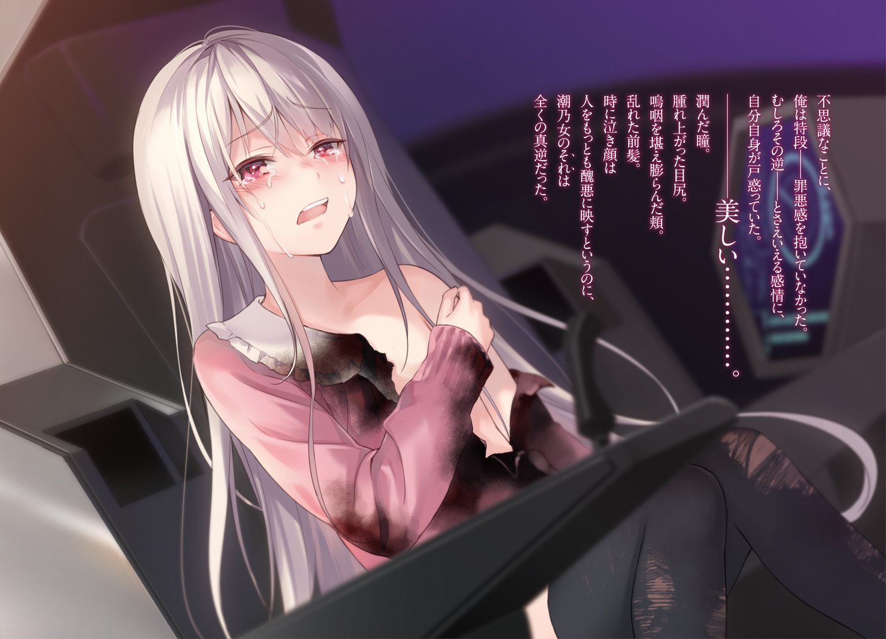

| 0.000000001%デレない白い猫 | |
| 延野正行 | |
この本は縦書きでレイアウトされています。
また、ご覧になる機種により、表示の差が認められることがあります。

 ダッシュエックス文庫DIGITAL
ダッシュエックス文庫DIGITAL
０・００００００００１％デレない白い猫
延野正行
プロローグ 今日も世界は変わらない......はず
今日も世界は変わらない......。
自室の天井のシミも。子供の時から使っている学習机も。窓から聞こえてくる雀の鳴き声、行き交う車の排気音。差し込む光も、それを遮るくたびれたカーテンも何もかも。
かわいい末の妹が。
「お兄ちゃん起きろぉ」
なんて――ベッドの底をぶち破るぐらいの勢いで、俺の腹の上で飛び跳ねる訳でもなく。
眼をこすりながら自室から出ると、最近色気づいてきたいっこ下の妹が。
「ふん」
とか言いながら、ツンデレる訳でもない（ただしデレはない）。
階段を降りながら。
「遅刻遅刻」
パンを口にくわえながら、スーツ姿の姉が廊下を駆け抜けていくのを見送る事もなければ。
バンブーカーテンをのけて、リビングへと顔を出せば、とても四児の母親とは思えない若い女性が、包丁でざくざくとネギを切っていたりすることもない。
あるのは、カップ麵の容器であふれかえった流し台。誰も座っていない四脚の椅子とテーブル。ガキの頃に撮った両親と並んだ写真。高校生が一人住まうには広すぎる二階建ての一軒家だった。
今日も世界は変わらない......。
ある意味、俺の油断だった。それは甘んじて認めよう。
昨日の時点で俺の世界は百八十度変わっていたはずなのに、惰性運転のままブレーキも踏まずに突っ込んでしまった。
浴室――日常においてもっともハプニングが起きやすい最危険地帯。家屋のジャングル。
なのに、俺は。
「顔を洗お」
などと、至極単純――ひねりも何もない理由でボリボリ横っ腹をかきながら引き戸を引いた。
日本神話なら天ノ岩戸。ギリシア神話ならパンドラの箱。北欧神話？ 知るかそんなこと！
ともかく俺はその時、キルゾーンともいうべき――触れてはいけない領域に踏み込んだ。
全くの無警戒で――である。
「うーむ、まだゲロ臭さがとれないぞ、《パンドラ》」
聞こえてきたのは、耳触りのいい少女の声だった。
視界に捉えたのは、幼女の真っ裸。
一瞬、俺の心臓は止まりかけた。いや、一瞬ではない。三秒いや二・五秒。この際、止まっていた刻のことなどどうでもいい。
ともかく俺の網膜には、小学校高学年ぐらいと思われる小さな少女が、厚手のバスタオルで髪を拭いているという世界が映されていた。
少女の容姿は常軌を逸していた。
とはいっても、十年後楽しみな逸材とか秀でてかわいいという次元の話ではない。
少女の髪は真っ白だった。新雪をそのまま掬い上げたかような白銀の髪。
それだけではない。その瞳はうっとりと眺めてしまいそうなほど、淡い紅色を帯びていた。
丸い水滴が載った肩はなだらかな曲線を描き、つるりと滑った水玉は未成熟な胸を通って、湯煙に隠された下腹部へと落ちていく。手も足も、まだ赤ん坊の頃の面影が残っているかのように小さく、かわいいサイズだった。
淡い紅色の瞳が俺を捉えた。
ようやくその時になって、俺は気づいたのだ。
今日も世界は変わらない......。
そういう毎日が、すでに昨日の時点で終わりを告げていたことを。
まずは今、目の前にいる少女の事は置いておこう。
察しのいいヤツなら、もう彼女がメインヒロインである事はわかったはずだ。
しかしこの物語を語る上では、あいつの事について話さなければならない。
昨日――。放課後の学校。
俺こと磯風奇跡はあいつに出会った。
とんがり帽子の魔法少女に――――。
そして物語は、ある意外な質問から始まる。
第一章 魔法少女と白猫のパイロット!?
「結婚について興味がある？」
少女は質問した。
放課後。時間は午後五時過ぎ。晩夏の真っ赤な夕日の光が、空の教室を燃やさんばかりに降り注ぐ時間帯。教室に残っているのは、俺と目の前の少女のみ。
告白するなら、絶好のロケーション。美少女ゲームなら、終盤の山場といったところ。選択肢を間違えなければ、めでたくハッピーエンドを迎えられることだろう。
少女の姿は、まあ一般的というよりはむしろ前時代的な魔法少女コスだった。
鴉の羽のような真っ黒なマント。先っちょが少し曲がったとんがり帽子。どこかの大図書館が所蔵しているような馬鹿でっかい本を広げている。俺が毎週楽しみにしている通期の魔法少女アニメのカラフルさから考えれば、どうしようもないぐらいのモノクロ衣装。昔の駄菓子ＣＭにしか起用を許されないレベルに留まっている。
しかももったいないことに、襟の立ったマントから見え隠れする少女の顔はなかなかにレベルが高い。
子供のような丸形の輪郭に、少しつり上がった大きな瞳。鼻筋は通り、薄い唇には軽くリップが塗られている。とんがり帽子から下りてくる髪は、ややブラウン。肩の辺りで切りそろえられており、少女の活発なイメージに一役買っていた。
おそらく同じ年頃と思われるが、背は平均より低いぐらい。俺は自分の席に座っているが、立っている少女の目線はそれよりも少し上にある程度だった。
ともかくこの少女にして、このシチュエーション。
告白という流れになれば、俺は二つ返事で受けていたはずだ。
しかし俺たちの間に漂う空気はまるで逆だった。何故なら、今この場の状況は〝ボーイ ミーツ ガール〟ではなく、〝ガール ファイツ ボーイ〟であり、『邂逅』というよりは『対峙』と書く方がすっきりするぐらい極限の緊張感に満たされていたからである。
付け加えるならば、少女のコスについての言及も、賞賛も許される雰囲気ではない。
「何そのコス？ どのアニメのコス？」
なんてチャラい感じで聞いた日には、本を持つ手とは逆の手に握られた炎によって成敗されるだろう。
そう――少女は今、炎を掲げている。かざした左手の平から五センチぐらいの中空。まるで夕日の光に紛れるように、炎が赤々と燃えさかっていた。
熱くないんですか？ ――などという無粋な質問など出来るはずもない。当然ながら、手品の類を疑ったわけだが、すでに俺の隣の席は黒炭になり、円を描くように見事な黒のグラデーションに床が塗り替えられていた。
つまり、何が言いたいかというと、少女は魔法少女のコスをしているわけではなく。
ガチで魔法少女だったというわけである。
教室に入るなり、隣の机を炎でぶっ放した少女は、俺に詰め寄るなり、まずこう尋ねた。
「朝庭高校一年生磯風奇跡ね？」
この場合、得体が知れない人物が俺の名前を言い当てたのは、もはや物語の様式美と言えるだろう。むろん、何故彼女が俺の名前を知っているかという疑問は脳裏を駆け巡る。だが、少女が付け加えた次の言葉によって、一瞬で霧散した。
「《奇跡の少年》よね？」
懐かしいあだ名だった。一体いつぶりだろうか。
八年前――磯風奇跡（八歳）はそう呼ばれ、世界に賞賛と感動の嵐を巻き起こした。
ロモワスク航空機テロリスト占拠事件。
数ある航空機事件の中でも最悪の奇跡と呼ばれた未曾有の惨事。死者二百二十名。行方不明者一名。生還者一名。生存率が極端に低い航空機事件において、最悪と呼ばれる所以は、死者のほとんどがテロリストが持ち込んだ二千発近い弾丸によって殺された事件であること。奇跡と呼ばれるのは、たった一人の子供がジェット機を操縦し、生還した事にあった。
そしてその子供こそが、何を隠そう磯風奇跡――俺だったのである。
だが、どれだけ有史に残る事件だとしても、人々の記憶からはいつかはなくなるものである。
今や《奇跡の少年》というネームバリューは、事件とともに風化し、俺がその当人である事など誰も知らない――信じようともしない。
おかげさまで、俺は虚言癖があるちょっとした変人扱い。
部活も何もしていない俺がこうして放課後残っていたのも、本来グループ学習で数人が手分けするような課題を、一人でこなしていたからだ。まあわかりやすくいうと、流行りのスクールカーストと呼ばれる中で、俺はダントツの最下位だということだ。
別にいい。俺にはラノベがある。ゲームがある。漫画もあれば、フィギュアもある。
美少女と二次元の世界さえあればいい。
それに俺にはたった一人の家族である義姉がいる。彼女が俺を信じ、そして俺もまた彼女だけを信じていればいいのだ。
ともかく懐かしいあだ名で呼ばれた俺は、完全にテンパっていた。
自分の名前やあだ名を言い当てられた事よりも、単純に魔法の恐ろしさに戦いていたのだ。
なので――。
「い、いかにも」
なんて武士みたいな言い方になった愛嬌ある俺を許してほしい。
魔法少女は炎をかざしながら、俺の顔をのぞき込んでくる。こんなに女子に接近されたのは、中学のフォークダンス以来のことだった。八年前の事件以上に忘れることは出来ないだろう。ペットの糞は処理できても、お前には絶対触りたくないという覚悟を決めた女子の態度は......。
「冴えないわね。《奇跡の少年》っていうんだから、もっと勇者っぽい人相を想像していたのに。如何にも、少女を監禁してそうなオタク顔じゃない」
さらりと、ペットの糞云々という譬えよりもひどい事を言ってくる。
「まあ、いいわ。質問を続けるわね。......ああ、拒否権はないから。正直に答えてよね。一応、あんたの本音を聞きたいだけなんだから」
「あの――――」
「ちなみに私への質問はタブーね。それに質問以外の事で、声を発したら一瞬で炭になるから覚えておいて。しんどいわよ。焼死って」
魔法少女は矢継ぎ早にまくし立てる。手の平にかざした炎をより一層燃え上がらせ、脅迫した。台詞は冗談っぽく聞こえるかもしれんが、少女はにこりともしない。
表情は柔らかいが、目は本気で殺しにかかっていた。せめて名前ぐらいは教えてほしい。
「じゃあ、次の質問ね。年下は好き？」
「は？」
じゅん、という音が耳の側で聞こえた。目だけを動かす。薄い煙が立ち上り、耳にかかった髪が燃え切れていた。髪の先端はパーマがかかったようにチリチリになり、くるりと円を描いている。
「二度目............ないわよ」
フリージングレーザー！ と叫びたくなるぐらい、冷たい視線が俺に突き刺さった。
俺は開いていた足を閉じ、居住まいを正して少女に向き直った。
「で、年下は？」
なんなんだその意中の男子をリサーチするために派遣された友人みたいな質問は！
改めて魔法少女を見た。外見は明らかに年下と思われるが、とても俺に好かれようという態度には見えない。年下好きですって目線を合わせて言った瞬間「きっも！」とリアルな声とともに、手に持った炎を振るいかねない。
「どちらかといえば、年上です」
と答えておいた。俺はどちらもＯＫな人間だが、この場合彼女の容姿に合わせない方がいい。俺の美少女ゲーム脳はそう訴えていた。
渾身の答えに対して、少女はあまり興味なさげに「あ、そう」とだけ言った。
そして次の質問に移った。
「巨乳と貧乳どちらが好き？」
は......。
言いかけて、慌てて口をふさいだ。炎をかざした手が、寸前のところで止まる。
「ち」と軽い舌打ちをし、振りかぶった体勢から、少女は元の姿勢へと戻る。
質問の意図が全く読めない。いや、すべてではない。俺の性癖というか好みの女性を探っているのはわかる。が、それがこの魔法少女自身が知りたい事なのか、それとも第三者的な人間が知りたいことなのか、全く読めない。
ゲームならここでセーブして、シナリオの行く末を見守るところなのだが、あいにくここは三次元である。まったく不便な現実である。
俺は少女の胸のサイズに思いをはせた。マントに隠れているとはいえ、少々自己主張が足りないような気がする――そんなサイズである。問題はどちらを答えても、少女の逆鱗に触れるのではないかという点だ。なんとしても彼女のコンプレックスを突くことだけは避けたい。
意を決し、俺は究極の二択から答えを選びとった。
「巨乳」
「そ」
どうでもいい、という感じであしらわれた。一つわかったことがある。おそらく魔法少女ではなく、第三者――つまり彼女の友人的な存在は俺の好みを知りたがっているのだ。
そうとなれば、少し気が楽である。
魔法少女の友人の事など、俺は知らない。それを探るすべもない。
何の遠慮もいらない。正直に答えるだけでいいのだ。
魔法少女に気を遣うことはないとわかれば、先ほどより幾分心理的な負担は軽い。
「次の質問。彼女はいる？ あ、もちろん三次元よ」
その答えは割と言いやすいものだったが、心理的なダメージは大きかった。
「いない」
その後、質問は多岐にわたった。お風呂に入るのは右足、左足から始まり、食生活、住居、将来の展望、龍と春樹どちらが好きか、タケノコ派かキノコ派か、受けか攻めか――まるで役所の人間が考えそうなものからどう見てもネタだろ、という質問まで訊いてきたのである。
気がつけば、十八時近くになり、赤く染まった教室が徐々にダークに染まっていく。少女が持つ炎の色が、より一層闇を引き立たせていた。
「最後の質問よ」
三十分以上の質問攻めにすっかり疲労困憊の俺は、その言葉を聞いて気力を振り絞るようにもう一度姿勢を正した。
「結婚について興味がある？」
そう――こうしてやっと冒頭の質問に至る。
早くこの場から解放されたいと思っていた俺に思考力など皆無に近かった。そしてなんとも安易で簡素、かつ明確な答えを導き出してしまった。
「別に」
映画のお披露目会見で発すれば、非難必至の回答だったであろう。
あえて自分を擁護する発言をするなら、おそらく高校生男子の半分以上同じような回答をしたはずだ。まだ将来の伴侶すら見つけていない未成熟な人間が、結婚なんていう途方もないハードルについて、考える方がどうかしている。むしろ人間的にイタい！
男子高校生を代表してあえて言おう。エロゲーのエンディングで結婚エンドなんてものがあるが、たいていの学生の目的はエロシーンで終わっているものなのだ。時々「ストーリー」などと答える輩は、まだエロに目覚めていない半人前なのである。
故に「別に」という至極わかりやすい意思表示は、世代の代表的な発言といってもいい。
俺は回答した後、やっと解放されたという安堵感に包まれる。
だから目の前の少女の機微など全く眼中になかった。
「じゃあ、死になさい」
と言う言葉すら冗談のように聞こえていた。
暗い教室で、一際激しく赤光が閃いた。炎を渦巻き、周辺のものを焼き尽くす。
啞然とした......。
炎が放たれた事にではない。寸前のところで避けきった――もはや幸運としか思えない――己の回避能力に、俺自身が驚いていたのだ。
魔法少女の表情に一ミリも焦りの色が見られない。炎とは対照的に、氷のように冷たい顔をしている。真っ黒な厚底ブーツをならし、まるでロボットが「右向け右」でもするかのようにほぼ直角に俺の方へ身体を向けた。
「逃げたわね」
「馬鹿野郎。逃げるに決まっているだろう！」
俺は初めて少女とまともな会話をした。内容は全くまともではないが。
次の言葉を待たず、少女は再び火球を手から吐き出す。でかい綿飴みたいな火塊が真っ直ぐ俺に向かってきた。反射的にその辺にあった椅子を投げる。木と金属パイプで出来た椅子はあっという間に炎にくるまれ、灰すら残さず焼失した。
マジで死ぬ。
すかさず少女に背を向ける。力が抜けた足を何とか引きずりながら、教室から脱出した。
誰もいない廊下を走った。少女はゆっくりと追いかけてくる。赤い燐光を放ち、手当たり次第、周囲を炎で溶かしていく。俺は何故かその時、ター○ネーター２の敵役ロボットの事を思い出していた。少女の方が百倍も見た目は可愛いのに、溶鉱炉に落ちても死ななさそうなところは百倍以上厄介だった。
階段を一気に駆け降り、少し距離を置いたところで携帯電話をかける。
空気を裂くような鈍い音が聞こえた。瞬間、携帯が溶解していることに気づく。階段の踊り場を見る。手を銃の形にした少女が立っていた。
再び逃走。全力で校舎を逃げ回った。
時間は十八時。なのに校舎には生徒はおろか教職員や用務員すら存在しない。
俺は上履きのまま外へ飛び出した。
グラウンドは噓のように静まりかえり、運動部員はおろかネズミ一匹いやしない。まるで世界は俺と魔法少女だけになったような感覚すらある。これも少女の仕業だろうか。
俺の体力ゲージはもう限界だった。足がもつれ、校庭のど真ん中で倒れ込む。立ち上がろうとする意志はあるものの、息切れはすさまじく、気力も空っぽだった。
空を見上げる。先ほどまで晴れていたはずなのに、筋状の雲が夜空を覆いつつあった。
その空が朱に染まる。否――側で炎が灯り、そう見えただけだった。
魔法使いの格好をした少女が、殺意をみなぎらせて立っていた。
「鬼ごっこは終わりかしら？」
「はあはあ......。あいにく......ぜぇ............こっちは............ごっこっていう気分じゃない」
そんなこと言う暇あったら、逃げろよ、俺！ 自分にツッコミをいれるのだが、残念なことに足が痙攣して一歩も動けない。
魔法少女は呪文すら唱えず「じゃあ」と炎を掲げる。
せめて「ま～じ～か～る～」ぐらいは詠唱時間はほしいものだ。
「待てよ。......せめて『言い残す事はある？』の台詞ぐらいあってもいいだろ？」
「いらないわよ。別に聞きたくもないし」
「なら、煙草一本ぐらい」
「あんた、未成年でしょ」
くそ！
魔法少女はどうやら魔法の勉強のしすぎで、ユーモアという言葉を学ばなかったらしい。
炎がゆっくりと向かってくる。皮膚がチリチリと痛くなってきた。もう髪ぐらいは燃えているかもしれない。出来れば漫画のギャグキャラみたく、素っ裸の真っ黒けぐらいですんでほしいものだが、どうやら望み薄のようだ。
俺は死ぬのだ。
ああ、くそ！ なんで今なんだろうな。
どうせ死ぬなら、八年前の航空機の事件でスパッと死んでおけば良かったのだ。
なんであの時の俺は、あんなに頑張っちゃったのだろうか。
生き延びて良いことなんかなかった。
家族は亡くなり、天涯孤独な中でたった一人信頼していた義姉は現在、行方不明。
俺は何のためにあの日を生き延びたのだろうか。
「さようなら。《奇跡の少年》」
気がつくと目の前に炎の塊が見えた。
心夢姉！
反射的に、俺は義姉の名前を心の中で叫んでいた。
瞬間――。
「磯風君！」
誰かの声が聞こえた。
炎がすぐ側で閃く。瞬間、何か黒い壁のようなものが俺の目の前に立ちふさがった。
至近距離で放たれた何千度とありそうな炎の渦を完璧にシャットダウンする。すると今度、俺の方に向かってきた。壁はぐにゃりと変形――いや、違う。壁だと思っていたそれは手だ。巨大な五本指が俺を守ったのだ。
手は優しく包むように俺を握る。「のあぁ！」と情けない悲鳴を上げたが、なすすべもない。
轟音が鳴り響くと同時に、巨手と俺は地面から離れていった。不思議な手だ。人肌とは違うグレーに塗布された手は、人工的に作られた特殊な樹脂で出来ているようだ。
グラウンドに広がった爆煙から脱出する。その時、俺は巨大な手の主を見上げていた。
「ろぼ......っと..................？」
そう――それはロボットだった。しかも人型の。
滑らかな頭部。鬼の角のようなセンサー。顔の中心で大きなアイカメラが動いている。大きく張り出した肩の噴射口や、正面の胴体部分にある小さなスラスト口から熱い空気を排気している。如何にも鈍重そうな足にも大型の噴射口が装着され、赤く光っていた。色はステルス戦闘機のボディを思わせるような無光沢の黒。だが、そのカラーフォルムがもったいないぐらい重たそうなイメージがある機体だった。
容赦なく総評するなら、ロボットはカッコ悪かった。しかし巨大二足歩行ロボットが滑空している事実は、俺に衝撃を与えた。
砂塵から現れた男の子のロマン。しばし時を忘れて見入ってしまった。
ロボットはゆっくりと降下を開始し、そのまま学校近くの河原へと降り立つ。膝立ちのような形で姿勢を作り、なかなか繊細な動きで、石が転がった水辺へと俺を着地させた。
いきなり空気を抜くような音が漏れてきた。剣道の防具のような中央部分が、機械音を上げて上昇していく。コクピット部が開帳する――その予感に俺は思わず息を呑んだ。
もったいぶるように持ち上がったキャノピー。シリンダーが伸びきり固定される。ロボットの前面は完全に開放され、コクピットが丸見えになっていた。
「え？」
複座式のコクピット。二座あるうちの前の席に、パイロットが一人座っていた。
俺は誰もいないと思っていたのだが、それは木の裏に隠れたウサギのようにひょっこりと顔を出した。
「子供！」
現れたのは、芯がしっかりしてそうでも最後は悪い男に騙されそうな大人の女性パイロットでもなければ、帰女子人気にあやかるようなイケメンパイロットでもない。
中学――いや小学生といっても差し支えないぐらいの小さな子供が乗っていた。
少女の容姿は並外れていた。
降り積もった新雪のような白銀の髪。季節を間違えた冬精霊のような白い肌。緩やかに弧を描く眉も、白く染まっていた。淡い紅色の瞳を真っ直ぐ俺へと注ぎ、無垢なピンク色の唇は炎に照らされて光っている。
未成熟の小さな身体には、タイトなパイロットスーツではなく、少女のイメージをそのまま具現化したような白のワンピースが着用されていた。
まるで二次元から現れたような特異な姿をした美少女。今まで信奉してきた二次元の美少女達が、まさしく絵に描いた餅程度にしか思えないほど、少女の姿は現実離れしていた。
だが、何より驚いたのは、その少女が俺の義姉小野飯心夢にそっくりであったことだった。
少女は「うんせ」なんて可愛いかけ声を上げながら、自分が座っていたパイロット席によじ登る。うちに秘めた自尊心を開放するように、腕を組み、少女は高らかに言い放った。
「はじめまして。磯風奇跡君。......私の名前は潮乃女子猫という」
そう自己紹介した後、彼女は言葉を続けた。
「唐突だが、君に私の世界を救ってもらいたくてやってきた。
並行世界の次元の果て。どうか私に力を貸してほしい」
潮乃女という少女の言葉に意表を突かれながら、俺は中学時代ずっとこんな事を思っていたのを記憶の底から掬い上げていた。
俺はこの世界の人間ではない。いつか俺に助けを求めて、次元の彼方から美少女が現れる。
中学時代。流行病にかかっていた俺は、毎日毎日誰ともわからぬ存在と交信し、その降臨を祈り続けた。腕に力を込め、隠された能力を探ったり、好きな子の思考を読もうとしてみたりもした。しかし妄想によって生み出された超然とした存在は俺の前に現れる事はなかった。
だがずっと何かが違うと思っていた。この世界と何か自分は嚙み合わない――そんな感覚がぬぐわれることはなかった。二次元世界にのめり込んだのも、そうした疑念からかもしれない。
潮乃女は手を差し出す。
俺はじっとその手を見つめた。
人から見れば無為な人生を送ってきたかもしれない。
求められず、また人に求めない生活をしてきた。
向けられた情熱はすべて答えが返ってこない世界へと向けられた。
何かこの世界は違う。そんな違和感を持ち続けていたから......。いっそ一方的な感情を向けられる世界を欲したのだ。
だけど――それも何か違うということはわかっていた。
どうしてそんな心境になったか。後々になってもわからない。
ただ......不意に訪れた出会いを前にして、なんの脈絡も理由もなく――。
この少女が俺のすべてを救ってくれる――。
そんな奇妙な直感が俺の頭の中で閃いた。
すでに身体は高揚している。まるで今まで眠っていたかのように心臓は強く脈打ち始める。
少なからず、彼女が義姉――小野飯心夢と似ている事もあったのだろう。
それでなくても俺は躊躇なく手を差し出していたはずだ。
潮乃女も俺の手を無遠慮に摑み、ぐっと引き寄せ、パイロット席に誘う。俺が後部座席へと滑り込むのを確認し、ハッチを閉めた。瞬間、爆音が轟き、機内が微震した。
ブラックアウトしたモニターが回復する。
とんがり帽子の魔法少女が、その十倍以上もある大きさのロボットを前に対峙していた。学校から河原までの距離は優に一キロ以上ある。なのに、わずかな時間で追いついてきたのだ。
「磯風君、レバーを摑みたまえ」
「え？ レバー？」
目の前にある二本のレバーを見る。硬質な金属を思わせるそれは、触るとまるで川原に落ちている石のようにざらついていた。
「《ガン丸》は思考結合システム型の操作方法になっている」
「ちょっ、待て！ いっぺんに言われても......。《ガン丸》ってこのロボットのことか？」
「そうだ」と少女は前を向いたまま首肯した。「正式名称を『縮退反応炉搭載型次元跳躍航行装置汎用人型強化版』といって、人類初有人飛行による次元世界への移動を可能にした世界初のロボットだ。ちなみに人型なのは、制作者の趣味だ」
「趣味って！」
「思考結合システムは、パイロットの思考を読み取り、ダイレクトな操作を可能にした画期的なシステムだ。このおかげで、理論上赤子でも操作は可能。質問はこれくらいか？」
とまくし立てる。
正直、訳がわからんと言いたいところだが、少女が焦る理由もわかる。
魔法少女が放つ炎が《ガン丸》の装甲を激しく叩き、機体にダメージを与え続けていた。岩石のように硬質な炎は、五十トン以上あろう巨体を揺らしている。
自分の十倍以上ある巨人に対し、魔法少女はひるむどころか攻撃してきているのだ。
「私は手が離せない！ ともかく今は飛翔だ。――飛べ、磯風君！」
「飛べ！」
ともかく俺は心の中で百回ぐらい「飛べ」と言ってみた。
思い出したくもないことだが、飛行機を操縦した時の事を思いだし、あの感覚を記憶の中から呼び起こす。あの時のレバーの感触。足下から伝わってくる振動。空気を裂く音......。
瞬間、ふわりと足下から浮遊感が駆け上ってきた。
モニターを見る。炎の爆撃で視界は悪いが、景色が上がっていくのが見えた。
「よし！ いいぞ、磯風君。もっと高度をとるんだ！」
「任せろ！」
つい得意になって相づちを打ち、さらに念じた。
だが、その時になってある重大な事を思い出した。
何故、今までその事を忘れていたのか。何故今になってその事を思い出したのかわからない。
ただただ――自分の失策を悔いるしかなかった。
「えっと......。潮乃女さんだっけ？」
「どうした、磯風君」と潮乃女はモニターを見つめたままだ。
「お、俺、実は......言い忘れていた事があってさ」
「なんだ。まさかトイレか？ ちょっとは我慢......」
少女の赤い瞳が、やっと俺を視界に捉えた。
口角を引きつらせ「げ！」という顔を、ためらいもなくさらす。
「実は、俺は――。八年前の事件から、乗り物にすんげー弱いんだ」
次の瞬間、俺は押さえていた口からあらゆるものを吐き出した。
そのあらゆるもの――つまりゲロは、前座の少女に直撃する。
そこで俺の思考は途切れた。
パイロット席でぶっ倒れながら、きついゲロの臭いが鼻腔をつく。
ブラックの視界に少女の悲鳴だけが耳に残った。
第二章 結婚か!? 滅亡か!?
１
一糸まとわぬ少女の裸体を前に、俺は昨日起こった事を思い出していた。
その間わずか二秒。つまり二秒間、俺は汚れを知らぬ幼女の真っ裸を前に、固まっていたのである。光が地球を十五周している時間に、思った事は「真っ裸」って書くよりも「裸体」と書く方がエロいということだった。
いや、違うだろ。俺――！
「す、すすすすすすす、すすすすす、すまん！」
すももの――という例の早口言葉が言えなくて、全部「す」で押し通してしまったように「す」を連呼し、そして謝る。
俺は慌てて浴室の引き戸を閉めた。視界からさらに外すべく、くるりと背を向け、手を広げ世界一有名な蜘蛛男みたく引き戸に張り付いた。
尋常じゃないくらいパニクっていた俺は「役得だ」とか「何故こんなところにロリがいる」なんてありきたりな疑念を抱くわけでもなかった。さらに言えば、昨日、魔法少女に襲われた事すら脳内の片隅に追いやり、空きが出来た記憶領域にたった今録画された真っ裸――もとい裸体を大画面で再生しながら、おもむろにパジャマの中に手を......。
――待て待て。それじゃあ、変態だ。磯風奇跡。
「どうしたのだ？ 磯風君」
唐突に、浴室の戸が引かれた。
引き戸に寄りかかり、支えを失った俺はころりと床に倒れ込む。
視界には、脳内で再生された裸体――もとい真っ裸が、一ドットの乱れもなく展開されていた。下から見えたその御姿は、さっきよりも近くきわどい部分まではっきりと見える。少女と視線が重なる。純真無垢な薄紅色の瞳が、俺のやましい心をピンポイントで爆撃してきた。
「ぎゃあｓぁｆがぽいｇほあｊｇｆぱｓｄｊぎあじょｐがｓｄ＠おぴほｇｈｙっｈｓどあ」
クトゥルフ神でも召喚するぐらいの勢いで訳のわからない言葉を叫ぶ。俺は神速の動きで隣のリビングまで待避する。
夢か！ これは夢なんだ！ と思いつつ、確認するためそっとリビングから顔を出した。
突如襲来した可愛い生物は、まるで珍獣を見るかのように俺の生態を観察している。
「あの。磯風君」とその生き物は無造作に近づこうとする。
「待て待て待て待て！ それ以上動くな。......それ以上は危険だ」
俺の理性的な意味で。
「何が危険なのだ？」
少女――いや確か潮乃女子猫という名前だったか――はまだ水滴が残った足を向ける。
「と、ともかく！ 服着ろ！ 服！」
工事現場の監督みたいにぶんぶんと手を振る。そこでようやく潮乃女は自分の姿を確認した。
きゃー、変態！ スケベ！ エッチ！ すけこまし！ ――的な反応を期待していたのだが、予想に反して潮乃女の反応は。
「ああ、そういうことか？」
実に淡泊なものだった。なんだ？ もしかしてあれか？ 伝説のロリびっちという薄い本にありがちな人種なのか。てか、お願いだから早く服を着てください。そろそろＪＡＲ○かＢＰ○がアップし始めるから。ああ、伏せ字にしてもなお恐ろしい。
潮乃女はしばし自分の身体を確認した後。
「なんだ。男はみんな幼女の裸を見て、欲情するのではないか？」
さもそれが宇宙の摂理であるという風に言い放ち、見せつけるようにその場で回転する。
「だあああああ！ 早く服着ろ！」
ついつい俺は叫んでしまった。
潮乃女は一瞬きょとんとしてから、しゅんと肩を落とした。
「そうか。私の裸は君にとって魅力的ではないのか......」
至極残念そうに浴室へと消えた。
俺は大工仕事を終えた後のように「ふー」と額の脂汗をぬぐい、リビングの壁に手をついた。長い長い煩悩との戦いに、ようやく休戦協定を申し入れることに成功した俺は、少女の帰還――ではなく、着替えを待って事情を聞くことにした。
台所で顔を洗おうと、振り返る。――ふと視界に見慣れぬものが映った。リビングの床に広がった絨毯の上、サッカーボールぐらいの球体が無造作に置かれていた。
潮乃女と同じくらい真っ白な球体は、コロコロと効果音をつけて俺の側まで転がってくる。
「なんだ、これ？」
俺は屈み、よくわからない物体に手を伸ばす。つんと指で弾くと、振り子のように戻ってくる。なんだか面白いので二、三回弾いて遊ぶ。すると、不意に球体に顔が現れた。
顔といっても、目と口らしきものがあるだけで、へのへのもへじの方がよっぽどうまくかけているぐらい簡易なものだ。しかしその顔は、あんぐりと赤く爛れた口内を見せた。
「警告します。敵性反応と認識！ 反撃を開始します」
「あん？」
ガブリ！
昔のソーセージのＣＭみたいな音を立て、俺の指は謎の球体にかまれた。
「痛って！」
ぶんぶんと手を振って逃れようとするが、球体は俺の指を離さない。さらに――。
「さらに敵性反応増大。モードⅡへ移行」
不穏な言葉とともに、放たれたのは強力な電撃だった。
ダーリン、ダメだっちゃ！ みたいな勢いで放たれた電撃は、青いスパークが肉眼で確認できるほど強いものだった。
これは死んだな......。
あっさり生を諦めた俺の視界は、再びブラックに染まっていった。
２
俺は夢を見ていた。
三年前。まだ小野飯心夢――俺の義姉と一緒に住んでいた頃の......。
走馬燈というヤツだろうか。なら、最後に心夢姉に会えたのは僥倖だ。
まるで白馬のたてがみのような柔らかな白髪。世界中の男を虜にすることも可能な緋色の瞳。笑みを絶やすことのない薄い上品な唇に、母性味たっぷりの豊満な乳房。
常に優しく。時に厳しく。心夢姉は俺の憧れ。理想の体現者だった。
もし彼女に結婚を申し込まれたら......もし結婚を申し込むような機会が訪れるなら、俺はあの時の魔法少女の質問にどう答えていただろうか......。
夢の話に戻ろう。それは古い記憶の一片。
中学時代、俺は一人だった。孤立したきっかけは航空機事件の事を、入学式の自己紹介で少し語ったのが始まりだ。何気なく話したことだったが、それは一気に学年内に広まった。俺は辛い記憶を忘れ、ちょっとしたヒーロー気分を味わっていた。そこまではよかった。だがある日たまたま航空機事件の被害者に知り合いがいる同級生がいて、こう言ったのだ。
「あの事件で、生き残った人間はいないよ」
と――。
その話は瞬く間に学年内に広がり、俺はヒーローから一転、噓つきだとののしられるようになった。しかも被害者の気持ちを考えていない、と指摘した同級生は俺を糾弾した。それからあっという間に俺のまわりから人は離れていった。その影響は高校になっても続いている。
俺にはどうしようもなかった。事件のことは本当なのだから。
ある時、俺は初めて心夢姉の前で泣いた。
航空機事件で両親を亡くして、たった一人で生きていかなければならないとわかった時も、決して人前で涙を見せなかった磯風奇跡が、初めて嗚咽を漏らしたのだ。
泣きじゃくる少年を前に、心夢姉はそっと俺の頭をなでた。
「大丈夫。世界中の誰も信じなくても、お姉ちゃんはよおくわかってるから。だから泣かないで、ミー君」
心夢姉は俺を「ミー君」と呼ぶ。奇跡――つまりは「ミラクル」――転じて「ミー君」。恥ずかしいので「やめてくれ」と頼んだが、心夢姉は一向に改めようとはしなかった。
だが、今から思えば、心夢姉が俺に与えてくれた唯一のものだった。
その数日後、心夢姉――小野飯心夢は行方不明となる。
俺はますます人を信じる事が出来なくなっていった。
※ ※ ※
目頭の辺りに指のような感触があった。
そのまま何かを払うようにすっと目尻の方にスライドしていく。
俺は多少警戒しながら、ゆっくりと瞼を開ける。若干目に映る光景がゆがんでいるのが見えた。どうやら俺は眠りながら、泣いていたらしい。
赤い瞳が見えた。炎のような緋色ではなく、どちらかといえばピンクに近い紅色をしている。幼い顔が傾いた。真っ白な長い髪が俺の鼻先にかかる。
「大丈夫か？ 磯風君」
その声は、子供のようなハイトーンなのに、成熟した女性のように落ち着いていた。
潮乃女子猫が心配そうに俺を見つめていた。
俺の頭を小さな膝の上にのせ、さらにバスタオル一枚という格好で――だ。
必殺ＨＩＺＡＭＡＫＵＲＡ！
「ぶあは！」
血反吐を吐くような勢いで叫び声を上げた。俺はびぃんとバネのように上半身を起こし、寝ていたリビングから全速力で抜け出す。そして廊下からそっと顔を出した。
「な、なな......なんでまだ服を着ていないんだよ」
「着ているだろ」と潮乃女は身体に巻いたバスタオルを引っ張る。
「なるほど。タオルってそういう使い方できるよね。――って違う！ ともかくなんか着ろ！」
「あいにく洗濯中だ。こうなったのも、半分は君のせいなんだぞ。少しは反省したまえ」
潮乃女は容姿の割になんだか昔の学者みたいな言葉遣いで、俺に忠告する。
「君の吐き出したもののおかげで、私の髪は絶賛異臭を放っている。もう二回もシャンプーとトリートメントをしたのに、まだ臭ってくるのだ」
自分の髪を束ねて、自らの鼻に押しつける。「うぇ」と小さな舌を出して、顔をしかめた。
ようやく事態が摑めてきた。どうやら放送コードに引っかかるようなキラキラとしたものを頭から被った潮乃女子猫は、浴室で洗髪し、着ていた服を洗濯にかけているというわけだ。
お・れ・の・い・え・で！
「てか、なんでおま――君が俺の家にいるんだよ！」
幼女と一つ屋根の下――なんて薄い本のタイトルにしかならない。隣家に知られれば、ただでさえ肩身の狭い近所づきあいが、圧搾されかねない。
いつ社会に抹殺されてもおかしくないだろう。
俺の抗議に対し、少女の冷たい視線はあっさりとそれを退けた。小さな少女から放たれたとは思えない渾身の一撃。小心者の俺を数歩退かせるなど、造作もないことだった。
潮乃女は深々と息を吐いた。
「服と髪のことは百歩譲ってまだ許容できる範囲なのだ。問題は私が乗ってきたロボットだ」
「えっと。あの《ガン丸》とかいう」
「そうだ！」と少女はすっくと立ち上がる。「君の汚く穢らわしいもののおかげで、コンソールがショートしてしまってな。さらに調達の難しい部品が焼き切れて、動かなくなってしまった。メインフレームである《パンドラ》は無事だったのは不幸中の幸いだ」
「つまり？」
「つまりは、私は自分の世界に戻れなくなった。君を私の世界へと連れて行く事が出来なくなったというわけだ」
「私の世界？」
そういえば、そんな事を言っていたな。並行世界の次元の果てがどうのこうの。
「てことは、お前......別世界から来て、その世界に帰れなくなったというわけか？」
「有り体に言えば、そういうことだな」
「それは......すまん」
俺は肩を落とし、素直に謝罪した。知らぬ事とはいえ、潮乃女と世界のつながりを断ってしまったのだ。謝るというのが、もっとも筋な答えであろう。
俺の反応に意表を突かれたのか。潮乃女は一瞬きょとんとして俺を見つめる。そしてまだ少し言い足りない言葉を呑み込むように眼を伏せ、細腕を組んだ。
「まあ、君の過去を考えれば、乗り物に弱いというのは考慮できた事だ。半分はこちらにも落ち度はある。......それに帰る事が出来なくなった事は、大した問題ではないからな」
「直るのか？ あのロボット」
「全治一ヶ月というところだ。時間をかければなんとかな」
「でも、あのロボットは異世界の戦闘兵器とかじゃないのか？ 世界を守る上では貴重な戦力じゃないのかよ」
「《ガン丸》に武装はついていない」
「はあ？ 潮乃女......さんは、その......俺に世界を救ってほしいんだろ。そのためにこの世界に来たんじゃないのか？ 俺は選ばれた戦士か何かで、あのロボットを使って飛躍した技術力を持つ独裁国家をバッタバッタと――」
「待て、いつ私がそんな事を言ったのだ？」
「違うのか？」
「何度も言うが《ガン丸》に武装はついていない。あの機体は並行世界を移動するためのものだ。これも言ったと思うが、二足歩行なのは開発者である私の趣味だ」
「君が作ったのかッ!?」
俺は悲鳴じみた声を上げながら、改めて少女の容姿を見た。
少し得意になった潮乃女は、ない胸をちょっと張って偉そうにふんぞり返る。
「まあ、驚くだろうな。私はこれでも天才科学者なのだ。......異世界では第二のレオナルドと呼ばれている。しかも美少女というところが、また設定として奥深い」
自分で美少女っていうか、こいつ。てか、自覚あるなら、もうちょっと恥じらいを持てよ。
「んで？ 俺は一体何から世界を救えばいいんだ？」
「ふむ。滅亡を定義することは難しいのだが、君が思っているような血なまぐさい事ではない」
「はあ......。それで」
「まずは結論から言おう。磯風君」
改まってバスタオルにくるまった少女は俺に向き直る。やや目のやり場に困るが、意識しないように薄紅色の瞳を真っ直ぐに見つめた。張り詰めた空気が、何の変哲もない一軒家のリビングに漂う。
思わず俺は、息を呑んでしまった。
潮乃女の薄い唇が動いた。
「磯風奇跡君。......君は私にデレてくれないか？」
「はい？」
「そうすれば世界は救われる」
..............................。
俺は固まった。軽く頭をノックすれば、コンコンと硬質な音が返ってくるぐらいに。
脳の機能は一旦ストップ。完全に処理能力の上をいった。
君は私にデレる――――はあ？
そうすれば世界は救われる――――はあ!?
訳がわからん！
どこをどうやったらそれにつながる。歌が世界を救うならまだしも、デレて世界を救うって――――............いや、割とあるかもしれない。
「まあ、君が戸惑うのはもっともだな」
今の話に困惑しない人間など、すでに人格が破綻しているか、人の話を聞いていないかのどちらかだろう。間違いない。
「順を追って、説明しよう。《パンドラ》」
名前を呼ぶ。現れたのは、先ほど俺の手を嚙み、さらに電撃を加えた首謀者だった。
白い悪魔――もとい白い球体は、コロコロと効果音を（わざわざ）流し、潮乃女に近づいてくる。手前で止まると、大きく口を開けた。
何がはじまるんです？ という風に、俺は潮乃女の行動を見守る。すると躊躇なく某超有名ロボットアニメのインターフェースに似た球体ロボットの口に、手を突っ込んだ。
しばし口の中をかき混ぜるようにあさった潮乃女は「あったあった」というと、ぐっと何か口内にあるものを引っ張った。
「チェェェェェェェェンンンンンジ！ モォォォォオオオオオオド！」
野太くやたら熱いおっさんの声が、リビングに響き渡る。
すると球体はかっと目を開き、輝き始めた。
白くつるりとしたボディが、中から押し上げたアームによって開かれる。
さらにガキンゴキンと金属音を響かせながら、その形態を変化させていく。
何故か《パンドラ》の目の横からすね毛が生えたぶっとい足が出てきたり、ゴジ○のような背びれが現れたり、完全に規制しなければならないような穴が見えたり、オッサンのゲップが聞こえてきたり、どう考えてもメカニカルな部分とは違うものを交えながら姿を変えていく。
そして現れたのは、超巨大なディスプレイと秘密基地にありそうな大型のコンソールだった。
「紹介しよう。これこそが天才科学者にして美少女！ 潮乃女子猫の最高傑作未来予測コンピューター《素粒子歪曲磁場発生解析装置》こと《パンドラ》だ！」
まさしくモードチェンジを終えた《パンドラ》に、潮乃女は寄りかかる。子供のように「どうだ」と言わんばかりに、再びない胸を反らした。
しばらくその天井を突き破らんばかりの――というか突き破っているのだが――大きさのコンピューターに呆気にとられた後、俺は若干辟易しながら呟いた。
「とりあえずその得体の知れないロボットの中身を教えろ」
「この《パンドラ》は凄いぞぉ」
うわぁ......無視しやがった。
「理論上、昔から科学の分野では多種多様なデータをとることによって、未来予知が可能だと考えられてきた。天気予報で使われる気象データは勿論のこと、人の行動パターン、そのＤＮＡ配基による性格特性、果ては原子レベルの流動性などすべてのデータをシミュレートすることによって、正確な未来の情報が手に入ると言われてきた。そしてそれを可能にしたのが、私が――私が開発した《素粒子歪曲磁場発生解析装置》こと《パンドラ》というわけだ」
「ほう......。で、それと世界の滅亡と俺がお前にデレることとどう繫がるんだ？」
「ここからが本題だ」
潮乃女は居住まいを正すため、バスタオルの端を少しだけ引っ張った。わざわざ整えなくても、十分今のままでもハレンチであることはこの際黙っていよう。
先ほどまで楽しげに機械の説明をしていた少女の表情から、余裕が消える。
年相応の可愛げな子供の面影はない。科学者としての潮乃女の顔だった。
「二〇十七年十月二十五日。今から一ヶ月後、私の世界は――――」
微妙な間を持たせた潮乃女子猫の口は、少し震えていた。
巨大隕石の落下により、滅亡する......。
沈黙が降りた。
衝撃の発言は、わずかな余韻を残し、リビングの白い壁に浸透していく。水道の蛇口から漏れた水滴が、銀色のシンクをピシャリと叩いた。
「その際の一次被害は約四十億人。さらに二次被害によって人類は確実に消滅するだろう」
「噓だ！」と否定することは簡単だ。だが俺は彼女の発言を疑わなかった。
憂いを帯びた瞳。自信なさげに下を向いた睫毛。青ざめた肌。言葉に出すことすらはばかられる話に、少女の表情はまるで恐怖を隠せていなかったからだ。
とても演技をしているように見えない。
そもそも世界が滅亡するという冗談を言うためだけに、異世界から来たとは思えない。
「か、仮に――だ。お前の言葉を信じるとして、そんな巨大隕石相手に、俺にどうしろってんだ？ お前の世界に、俺しか抜けない剣があって、一振りで切ることが出来るとかならわかるけどよ。いっそ、世界各国が持ってる全部の核でも使って打ち落とすべきだろう」
潮乃女は首を振った時、元の少女の顔に戻っていた。
「そんな都合がいいものはない。私たちの世界にも核兵器はあるにはあるが、たとえそのエネルギーを束ねたところであれは破壊できない。............だが、案ずることはない。《パンドラ》の協力の下、私たちは画期的で斬新な方法を見つける事に成功した」
「まさかそれがデレなのかよ。愛が地球を救うって。どこの二十四時間番組のテーマだ」
「いや、目標は遙か遠く、そして高くだ。君がデレるというのは、一つの段階に過ぎない。......《パンドラ》、世界が滅亡しない回避方法を磯風君に発表したまえ」
『お答えしましょう』
開発者の命令に対して、《パンドラ》はなめらかな発声をもって応える。
ディスプレイはピコピコと音を立て、四角いタイルのようなものが明滅する。どこからかドラムロールが流れ、ミスコンの発表みたいにリビングが消灯。スポットライトが回り始める。
なんだなんだ、と落ち着かない様子で俺は、世界最高最強のパソコンの回答を待った。
『世界滅亡の回避方法は――――』
だん、という感じで《パンドラ》は答えた。
『潮乃女子猫と磯風奇跡が前日の二〇十七年十月二十四日までに結婚することです』
「なんでやねん！」
派手なファンファーレが鳴り響き、俺と潮乃女に向かって紙吹雪が落とされる中、俺は思わず関西風にツッコミを入れた。
「聞こえなかったか？ 二〇十七年十月二十四日。つまり予言の一日前までに結婚すれば、世界は平和になるということだ」
「意味がわからんわ！」なお俺に降りてきた笑いの神は留まり続ける。「なんでお前と俺が結婚したら、世界が平和になるんだよ！ それで隕石が消えるっていうのか？」
「君も言ってたじゃないか。愛が地球を救う。ラブアンドピースだ」
二つの手をジャンケンのチョキの形にする。なんだかダブルピースに見えて、若干薄い本的な絵面に見えた。
「アホかぁ！」
はあはあぜぇぜぇ言いながら、先ほどとはまた別の意味で鼓動を高ぶらせる。俺はなんとか息を整え「くそ！」と悪態を吐いた。
一瞬でもこの胡散臭い少女を信じた己のアホさ加減に失望する。
「なんだ？ 不服なのか、磯風君は？」
「不服も何も――だから、意味がわからんって」
「そういう結果になったのだから仕方あるまい。大人しく私にデレたまえ」
「単純に好きになれっとはいえんのか！」
「君にはこういう方がわかりやすいのだろう。しかし役得ではないか。何度も言うが、そこそこの美少女だという自負はある」
髪を搔き上げ、ない胸を張りだして姿勢をとろうとする。どうやらグラビアアイドルがやるような悩殺ポーズを目指そうとしている事は理解できるが、どう見ても子供が学芸会でお遊戯しているようにしか見えない。てか、こいつ身体かたいなあ......。
「仮にだ。お前と結婚する方法が、滅亡する世界を救う手だてだとして、一つ問題がある」
「だろうな。私のようなロリ少女とお付き合いというのは、十六歳の少年とて世間から白い目で見られるだろう」
おおよ。よくわかってんじゃねぇか。バスタオル一枚の少女と対峙するこの状況を第三者に見られてもみろ。俺の社会的ライフは一気に〇だぞ。だから服を着るか、出て行くかどちらか選択してくれ。
と言いたいのをぐっとこらえ、俺はコホンとわざとらしく咳払いをした。
「だいたい結婚ってのは、法律上男子は十八歳以上って決まっているだろう。俺はまだ十六にもなっていないんだぞ」
それにどう考えても潮乃女の歳も、法律上の年齢をクリアしているように見えない。
「ああ、そのようだな」
潮乃女が取り出したのは如何にもお役所らしい書式が書かれた書類だった。その上部にはでかでかと『婚姻届』と銘打たれ、その下には俺の名前と潮乃女の名前が楷書で書かれている。ご丁寧に捺印までされていた。
「お前、まさか提出したのか？」と俺は百歳の老人のように手を震わせて指さした。
「君が寝ている間に捺印させてもらったが、ダメだったか？」
「ダメだったか――じゃねえよ！ あったり前だ！ 人が寝てる間に何してんだ！ 新手の寝取られパターンかよ！ ――まさかもう役所に持って行ったんじゃないだろうな」
「善は急げと言うだろう。ゲロまみれのまま市役所を探すのは大変だったんだぞ。行ったら行ったで、怠慢役人どもめ。お嬢ちゃん、あと十年待ちましょうねってにたりと笑いながら、鼻をつまむのだ。失礼だとは思わないか！」
「アホかああああああああああああああああああああああああああああああああ！」
もうツッコミどころがありすぎて、何に対して誰に対して謝ったらいいかすらわからない。
こいつはゲロまみれのまま、この町をさまよい、優しく迎えた公務員を罵倒しているのだ。むしろ笑顔で対応した窓口係のプロ根性を感じるぞ、俺は。
だいたいゲロまみれで婚姻届を持って行くヒロインがどこにいるんだよ。ゲロ系ヒロインなんてご褒美でもありえんぞ！ 誰が考えるんだ、んなもん！
「ともかくだ」
並行世界からやってきた少女は、わずか数時間にして数々の伝説を打ち立てたにもかかわらず、それを全く気にしていない様子で話を変えた。
「結婚というのは、書類上のことではない。《パンドラ》、今の私と磯風君が結婚する確率は何％だ？」
『〇・〇〇〇〇〇〇〇〇一％です』
「低っく！ ほとんど皆無じゃねぇか！」と俺は叫んだ。
てか、俺と潮乃女の相性ってそんなに悪いのかよ。若干ショックなんだが。
「そうだ。万に一つという可能性すらない。たとえこの婚姻届が受理できたとしても、このパーセンテージは変わらない。つまりこの場合の結婚とは、形式上のことではなく、歴史的に稀有な事象をクリアして初めて上昇するものだと私は考えている。そうだな......。わかりやすく言うと、フラグというヤツだ。我々はそのフラグを探さなければならない」
理解に苦しむ。まあ、ようは「それこそ結婚だ」といわれるイベントをクリアすることによって、パーセンテージが上がるということなのだろう。
「故に、手っ取り早く我々は恋人同士になるのがもっとも効率的な方法だと思う。幸いこの家には、君以外住んでいないようだし」
「ちょっと待て。お前、俺の家に泊まるつもりか？」
「もう忘れたのか？ 私は《ガン丸》をつぶされ、この世界では天涯孤独の身の上なんだぞ」
う、と痛いところを衝かれた俺は、一瞬後ずさった。
「男女七歳にして同衾せずともいうが、本日は初夜だしな。どうだ、一緒に寝るか、磯風君」
指をくわえ、可愛くウィンクなんてしてくる。ちなみに潮乃女の格好は相変わらず白のバスタオルを巻いたままだ。このままだと俺の理性が――違う――潮乃女が風邪を引きかねん。
「くしゅん」
小さくくしゃみをする。言わんこっちゃない。
「とりあえず風呂を沸かしてやるから、入り直してこい。着替えもなんか見繕ってやるよ」
「それは私がここに住んでもいいということだな」
淡い紅色の瞳を輝かせて、おしりをふりふりしながら顔を近づけてくる。
「ま、まあ......その......。俺が悪いってのもあるしな。家は広いし、部屋は余ってるし」
「なんだ。君の部屋に泊まるんじゃないのか？」とシュンと肩を落とす。
「お前、絶対俺をからかってるだろ」
「私はいつも本気だぞ」
今度はふんぞり返る。落ち込んだり威張ったり、なんとも忙しいヤツだ。
「いいか、これだけは言っておくぞ。俺は結婚にも、世界の滅亡とやらにも興味はねぇ。だが、お前がいた世界には大いに興味がある。この世界から脱出できるなら、俺はそれでいい」
たとえ滅びかかっていようが、今いる世界より百倍マシだ。
「ふむ。事情はあえて聞かぬが、君にも君なりの理由があるようだな。まあ、いいだろう。まずは持ちつ持たれつということで――」
潮乃女は手を差し出した。俺はじっとその小さな手を見つめる。
「どうした？ 握手だ。まさかこの世界に握手という習慣がないというわけではあるまい」
「あ、ああ。すまん」
手に取った。小さい――本当に小さい手。思わず手首ごと握ってしまいそうになる手は、ほんのりと暖かかった。
握手。信頼の儀式。俺にとっては、縁遠い所作だった。
何せ俺は誰も信じていない。唯一信じられるのは、心夢姉――俺の義姉以外あり得ない。今、目の前にいる少女と同じく、白い髪と赤い目をした女性以外は。
「改めて。潮乃女子猫だ。子猫と呼び捨ててくれてもいい。何せ我々は結婚しなければならないのだからな。まずは形から入ろうじゃないか」
「俺は別に認めたわけじゃないけどな。――磯風奇跡だ。名前は別にどんな読み方をしてくれても構わない。好きにしろ」
俺はそう応えると、潮乃女はしばし頰に手を当て考えた後。
「ならば、君はミー君だ」
俺は大きく目を見開き、言葉に詰まった。
「奇跡だからミラクル――転じてミー君だ。悪くないだろう」
「それは――」
撤回してくれ、と言いかけたが、嬉々としている潮乃女と心夢姉の姿がダブる。
「では、またお風呂を貸してもらおう。......また後でな、ミー君」
とたとたと軽快な音を鳴らし、リビングを出て行く姿は、名前の通り――迷い込んだ子猫のようだった。
嵐のように始まり、嵐のように過ぎ去っていった少女の足跡をなぞるように、俺はリビングの入り口の方を向いて呆然と突っ立っていた。
第三章 不惑の転校生
１
早朝。その日も俺は慎重に自宅のドアを開けた。
ロックが外れる音にすら気を遣い、軋みを最小限に抑える事に成功する。差し込んできた晩夏の太陽に目をやられながら、開いたドアの隙間から顔を出して周囲の状況を確認した。
敵影なし――と心の中でつぶやき、家から出る。把手は摑んだまま、再びゆっくりとした所作でドアを閉める。
ぶろろろろろ......。
「うひぃ」
突如、家の前を通ったバイクにびくりと肩をふるわせる。規定通りの学生鞄をひしと抱きしめ、用心深く後ろを振り返った。敵影なし。ふう、と一旦呼吸した後、ドアを施錠する。
俺の登校は始まったばかりだ――と打ち切り漫画のあおりみたいな台詞で気を引き締める。
身を伏せ、再度周囲を警戒。ドアの時と同じようにアルミ材の門扉を慎重に開け閉めする。
通学路まで出てきた。ここからが本物の戦場だ――なんて死亡フラグを立ててみる。
身を若干屈ませ、ご近所がいない事を確認し、道を進んでいく。裏道にたどり着くと、迷わず体を滑り込ませる。人がいないことを確認し、一気に進む。そして時には物陰に隠れ。時には半年以上誰からもかかってこない携帯電話で通話する振りをしてやり過ごし。時には塀に出来た小さな穴を猫と俺どちらが先に通るかで争う。
別に遊んでいるわけではない。俺が何故、こんなにも慎重に登校しているのか。
先日まことしやかに囁かれたご近所の噂を聞いたからだ。
『ねぇ、奥さん。聞いた。また女の子を監禁した無職の男が捕まったって』
『ほんと痛ましい事件ザバスねぇ。全く怖い世の中になったものザバス』
『でも、私聞いちゃったのよ。磯風さん。ほら、三丁目の......昔学校で問題を起こした』
『ああ、ミー君ザバスね』
『そうそう。でね、あたしぃね。聞いちゃったのよ。女の子の声をぉ』
『おかしいザバスね。あそこはミー君が一人で住んでいるんじゃなかったザバスか？』
『そうよ。あたしぃちょっと怖くって。もしかしてぇ磯風さんのミー君も......』
『怪しいザバスね。ナスの味噌漬けを持って行くついでに様子を窺ってこようかしらザバス』
てか、お前らミー君言うなよ！ ご近所でその名前ってデフォなの。つーか、ザバスって言う人初めて聞いたよ。海外のアーティスト名かよ。無駄にキャラ付けしてんじゃねぇ！
――いや、そういう事を言いたいのではない。そうだ。俺がこんなスパイみたいな事をしているのも、そんな噂をご近所で耳にしたからだ。そしてそれが噓ならどれだけ俺の心は穏やかであっただろうか。しかし現実――俺は少女と同居している。
そう――監禁ではなく、同居なのだ。が、俺の虚言癖という噂は学校というコミュニティを越えて、ご近所の噂好きのおばちゃんたちの共通認識の中にある。言い訳をしたところで、信じてもらえるか、と問われるなら残念ながら難しいと言わざる得ない。
そこで俺がとった行動は、極力人との接触を断つということだ。ご近所に対する存在感を薄くすることによって、磯風奇跡という存在の炎を殺すのである。
ちなみに元凶たる潮乃女子猫は、俺の家に住み着くこと三日、昔心夢姉が使っていた部屋にずっと引きこもっている。部屋の前には例の暴走ロボット《パンドラ》が警備をしており、家主すら入れないようになっていた。
時々、耳をそばだてて中の様子を窺うのだが、『ああ』『うう』と怪しいうめき声が聞こえてくる。かと思えば、特異な金属音、はたまた甲高い笑い声が聞こえてくる有様だ。家はおろか部屋から一歩も出ていないようだが、生息しているかさえ不明だった。
まあ、無闇に外に出歩かれるよりは百倍マシだ。彼女が見つかって、最悪警察に補導されでもすれば、俺の人生は終わったも同然だろう。
しばらくの辛抱だ。《ガン丸》とやらが直れば、俺はこの世界からおさらば出来る。並行世界はさほど俺たちの世界と変わらないと潮乃女は説明していたが、異世界という事には変わりはない。もしかしてリアルに猫耳やしっぽ娘、エルフの女の子がいるかもしれない。それはまさしくパラダイスではないか。
ふふ、とつい邪悪な笑みを浮かべながら、俺は学校にたどり着いた。
まだ始業には時間があり、登校する生徒もまばらだ。俺はシャツを直し、タイを締めた。平然としていれば、何の問題もない。
「おはよう、磯風君」
「は、はひ」
いきなり挨拶され、俺は思わず背筋を伸ばした。
かくかくとブリキ人形みたいな動きで、九十度身体を動かす。そこにはまばゆいばかりのオーラを放ち、女子高校生が立っていた。高校の敷地内にいるんだから当たり前なのだが。
俺には眩しすぎるぐらい輝いた大きな瞳。黒くロングの髪を二つに結び、なで肩にかけるように前に出している。ノーメイクと思われるのに、肌は白くみずみずしい。背はそれほどある方ではないが、緑系のチェックが入ったスカートから見える足は細く長い。制服のブラウスとクリーム色のベストが邪魔をして推し量ることは不可能だが、胸のスペックは理想的なお椀型だと解析した。
彼女の名前は清川靜花。幸か不幸か磯風奇跡というミジンコにも劣る存在のクラスメイトである。身体と名前を表す通り、如何にも清純なイメージを持つ彼女は、クラスではあまり目立たない存在だ。しかしそのポテンシャルは校内十傑に入るほどの実力を秘めており、隠れファンも多い。何より唯一俺に声をかけてくれる貴重な女子だった。
加えて言うなら、俺が最近推している深夜アニメ『ブラバコ』の主人公の友達にそっくりだということ。そう――。彼女もまた二次元から出てきたような美しさを秘めた美少女なのだ。
「早いね。いつもこんなに早く登校してるの？ 磯風君、どこの部にも所属してないよね？」
「ま、まあね」
と会話を合わせる。とても近所の目から逃げているのだとは言えない。彼女と挨拶以外で言葉を交わしたのは、入学してすぐに行われたオリエンテーリング以来だ。ちなみに他の女子とはまともに喋ったことすらない。
「そう。偉いね」
こぼれるような白い歯を見せて――スマイル。
ズキュウゥゥン、とジョジョみたいな擬音を立てて、俺の胸が打ち抜かれた。これは惚れる。
「あ。そうだ」
清川さんはおもむろにしゃがみ、側に置いていた段ボールの箱を開ける。
俺には先ほどからずっと気になっていた事があった。
それは「ＵＦＯ研究部」「よろしくお願いします」と書かれた二本の幟だ。
その二つを彼女は自らの背中にくくりつけ、昔あった戦国仮面ラ○ダーの変身形態みたく装備していたのである。あまりに彼女が自然に接するため、ついついツッコミを忘れてしまったのだが、どうしても目がそちらにいってしまう。むしろツッコミ待ちかと邪推するほどだ。
清川さんが差し出したのは、一枚の紙。右上端には『ＵＦＯ会報』と書かれた新聞とおぼしきそれは、スマートフォン全盛の時代にあってすべて手書きで作られていた。しかも字が恐ろしく綺麗。さすが朝庭高校が誇る小野小町である。
「私が作った会報なの。良かったら読んでみて」
再びスマイル。ああ、眩しい。荒んだ俺の心にはあまりにも照度が強すぎる。
「き、清川さんってＵＦＯ研究部なんて入ってるんだ。ＵＦＯ好きなの？」
横文字なんて彼女のイメージからはほど遠いが、ちょっと特殊な好みがある方が断然萌える。
「うん」と答えてから、清川さんの白い顔に影が差した。「けど、ＵＦＯ研究部って実は私一人だけで。まだ部にもなってないの。今、部員募集してるんだけど、なかなか集まらなくて」
切実な現状を訴える。思わず俺は彼女の肩を抱きしめたくなるほど、胸がキュンキュンした。が、おそらくその時点で社会的なライフゲージは〇。さらに幼女監禁というボーナスポイントが加算されるという結末が見えたので、涙を呑んで断念した。
「そ、そうなんだ......」
無難に答える。正直、清川さんと二人っきりの部活ライフなんて夢のようなひとときだろう。だが、彼女の口から矢追○一みたいな話が漏れた日には、おそらく「私、彼氏が出来たの」って直接聞く事の次ぐらいにショックなことだ。
そもそもリアル女子と二人っきりなんていう空間は、俺には耐えられそうにない。
俺は漂ってくる彼女の期待に目をそらすため、会報に再び目を落とした。
――と、その時になって、やっとある事に気づいた。
会報にはカラー写真が一枚掲載されていて、一カ所赤丸が加えられていた。写真の下の説明には「著者が撮った未確認飛行物体。人型をしており、宇宙人そのものだという可能性も」なんて事が書かれてある。
書いてある通り、黒いシルエットは確かに人の形をしていた。ついでに頭には角のようなものが生えている。一見、太った鬼のようにも見えないことはない。
幸か不幸か、俺はその物体に見覚えがあった。
間違いない――。『縮退反応炉搭載型（以下略）』こと《ガン丸》だった。
放課後、俺は敵基地に突っ込む特殊海兵隊員のように全速力で自宅へと帰ってきた。
朝にあれほど丁寧に開けたドアを躊躇うことなく吹き飛ばし、我が家へと転がり込む。ポーンと靴を脱ぎ捨て、真っ直ぐ二階へと昇り、目的地への最短ルートを通った。
【ここねぇ】と可愛い掛け札がかかったドアの前には、無造作に転がったサッカーボール――《素粒子（以下略）》こと《パンドラ》が門番のごとく鎮座していた。
俺の存在に気づいた未来予測コンピューターは警戒するように、ボールペンで落書きしたような目をこちらに向けた。
「潮乃女に用がある。ここを開けろ」
『子猫様はただ今、誰とも会わないとおおせです。お帰りください』
「急ぎの用事なんだ！」
『お帰りください！』
「くそ！」
俺は強行突破し、ドアノブを回す。
《パンドラ》はゴムボールのように弾んで、俺の左手に嚙みついた。
激痛が俺を襲う。が――黙殺し、そのままドアを開けた。
視界に飛び込んできたのは、ブルーライトに照らされた薄暗い室内だった。部屋には本が堆く積み上げられ、ＤＶＤやブルーレイがピンク色の絨毯に散乱している。ゴミ箱には俺が買い置きしておいた即席麵の容器や空のコンビニ弁当が突っ込まれていた。
とても女性の部屋とは思えない。いや、つい三日前までは何もなかったはずだ。心夢姉が出て行った時、すべての私物を持ち出していて、実質部屋は空の状態だったのだ。
にも拘わらず、たった三日だ。七十二時間でゴミ屋敷同然にする人間がこの世にいた。
その人間はというと、大型ディスプレイの前にして、自分の体格よりも大きなデスクチェアの座面に三角座りしていた。白い頰に青白い光が差している。周りには、まるで少女を封印でもするかのようにブルーレイディスクがぐるりと囲み、ディスプレイの画面には俺が愛してやまない魔法少女シリーズの変身シーンが映し出されていた。
「おい。潮乃女！ お前、なにやってんだよ！」
出会った時と同じ白いワンピース姿の少女は全く反応せず、姿勢を変えようともしなかった。
おい、ともう一度声をかけ、肩に手を置く。その肌は冷たくなっていた。
思わず「ひっ」と短い悲鳴を上げながら、後ずさりする。
俺は背もたれに手をかけた。きぃ......と気味の悪い音を立て、ゆっくりと椅子が回る。
少女の顔には全く生気がなかった。あれほど神々しく輝いていた紅色の瞳はどこかうつろで、その目元は墨でも塗ったようにくまが出来ていた。肌は砂漠のように乾き、トレードマークの白い髪はほつれてバサバサだった。
「潮乃女！ お前、一体どうしたんだ？」
俺の言葉に、潮乃女はしばらく無反応だった。だが、スピーカーからエンディングテーマが流れてくると、ようやく反応する。光沢が抜けた瞳を俺の方へ向けた。
「やあ、ミー君。久しぶり......でもないか............」とひからびた唇を動かした。
「冗談言ってる場合か！ ――てか、この大量のアニメとゲーム、ラノベの山はなんだ！」
一部俺が所持しているものも散見できるが、そのほとんどが新品だ。
「はは......。なかなか魔法の力とは偉大だな。......これは研究しがいがあるというものだ」
「意味がわからんって。何してたんだって聞いてるんだよ？」
尋ねるものの、潮乃女から返ってくる言葉は意味不明なものだった。
「愛と勇気と根性のポニーテール妖精............まじかるぅぅぅぅうう」
がく――そう言い残し、潮乃女はとうとう気を失った。
「しおのめぇぇぇぇぇえええええ！」
衛生兵と言わんばかりの勢いで、俺はゴミ屋敷と化した部屋の中心で叫んだ。
潮乃女子猫 アニメとゲームとラノベの中に埋もれ......戦死す。
２
「死ぬかぁ！ 愚か者！」
潮乃女は俺が買ってきたハンバーグ弁当を口にかき込みながら、叫んだ。
節操なく食べているせいか、口の回りはソースだらけになっている。それでも少女は全く気にすることなく、二箱目の弁当を平らげた。すぐ横に置いていた唐揚げ弁当のふたを開ける。
「飯を食うのも忘れて、アニメに没頭するとは。お前、どこの廃人だよ」
なんでも潮乃女子猫はこの三日間、部屋にこもり、アニメを見ながらゲームをやり、背筋が痛くなったので寝転がってはラノベを読んでいるという生活をしていたらしい。その間、睡眠は全くとっていなかったという。六時間ほど寝た後に、今度はお腹が空いたと言って夕食を所望し、今にいたるという訳だ。
まったく......。こっちは清川さんが作った会報に《ガン丸》が写っていたから慌てて帰ってきたというのに、潮乃女は日がな一日アニメ三昧だったというわけだ。しかも会報の写真を見た時のこいつの反応は。
「ふむ。よく撮れているではないか」
――だ。《パンドラ》に嚙まれてまで押し入った俺が馬鹿みたいじゃないか。
「お前そんなにアニメとか好きだったのか？」
「多少はたしなんでおるが、あんな少女ばかりが出てくるアニメを見たのは初めてだ」
「なんでわざわざそんな事をしたんだ？」と俺はテーブルに頰杖をつきながら、耳を傾ける。
「決まっている。君を知るためだ」
「俺を？」
「言ったろ。君にはデレてもらうと......。相手の趣味嗜好を探るのは当然の戦略ではないか。私は君がデレてくれるならなんでもするぞ」
割り箸を振り上げながら、熱っぽく語る。しかしすぐにその熱意は弁当に傾けられた。
「お前、本気で俺をデレさせるつもりか？」と少し前のめりになり、俺は神妙に尋ねる。
「無論だ。そうでなければ、世界は滅ぶのだからな。それに私には秘策がある」
「秘策？」
俺に箸を向け、潮乃女は頰にご飯粒を付けたままこう応えた。
「まあ、明日を楽しみにしておきたまえ」
３
............朝起きると......。
......そこには幼女がいました。
孤独な少年が、妄想から生まれたロリ美少女と向き合う一大スペクタクル。
奇跡と子猫の不思議な話。
「おはよう！ お兄ちゃん」
二〇一八年七月公開。
――って、公開するかあああああああああああああああう！！！
「お前、なんで俺のベッドにいるんだよ！」
そう――朝起きるとそこには、真っ白な髪の少女が俺の上に馬乗りになっていた。天使のような笑顔を浮かべ、首を七十五度ぐらいに傾けている。何故か、その白い肌には我が母校の校章があしらわれた白のブラウスと、チェック柄のスカートをはいていた。小さな膝小僧の間からは、純白の下着が見えている。おお、白い......！
この際格好のことはどうでもいい。いつの間にか妹が出来た上、人外の美しさを誇る美少女が俺の部屋に侵入し、かつ馬乗りになっていることは最高の至福――ちがうちがう――問題だ。
抗議の声を上げると、潮乃女はすぐ顔をしかめた。
「うん？ これが君の理想の起こし方だと思ったのだが違うのか？」
「馬鹿か、お前！ 俺的には最高の起こし方だよ！」
倫理的に大問題だ！
「本音と建前がごっちゃになっているような気がするのだが......」
「誤植だ。誤植。とりあえず降りろ。でなければ、壊れる」
理性もしくは自我が。
「なんだ。つまらない反応だな。《パンドラ》、今のパーセンテージは？」
コロコロと効果音を立てて転がってきた《パンドラ》は『ふん』と音声を上げて、目から光を発射した。プロジェクター機能まで搭載した万能コンピューターは、天井に数字を映写した。
〇・〇〇〇〇〇〇〇〇一％。以前と数値は変わらない。
「変化なしか。このイベントでもなさそうだな」
深く息を吐き、肩を落とした。
「お前、もしかしてこのパーセンテージが上がるまで、こんなことを毎日続けるつもりか？」
「君をデレさせるには必要な処置だ。......ともかく作戦失敗か。次の作戦に移行しよう」
はい、撤収という感じで潮乃女は《パンドラ》を伴い、俺の部屋から引き上げていく。
ぽかんとして見送った後、すぐ戻ってきて少女は言った。
「朝食が出来ているぞ。早く着替えたまえ」
時計を見ると、登校時間が迫っていることに気づいた。俺は慌ててベッドから飛び起き、手早く学校の制服に着替える。鞄に教科書やノートを詰めながら、ふと思った。
――うん？ 朝食？
「朝............食.....................ねぇ......」
リビングの机の上に並べられていたものは、黒くて固そうな何かの塊だった。
おそらく強い火力に当てられたのだろう。塊の回りは黒い放射状になっていて、テーブルの一部が炭化していた。ビニールのテーブルクロスや捨て損ねたカップ麵があったはずなのだが、すべて消し飛んでいる。かろうじて椅子の下に、その残骸らしきものが確認出来る程度だった。
「さあ、お兄ちゃん。食べて！」
「さあ、お兄ちゃん。食べて――じゃねぇえ！ なんだ。この宇宙人の糞みたいなのは？」
お互い目一杯美少女を演じた後、俺は隣に立つ少女に質問した。
「トーストだ。......そう見えないか？」
一度瞼をもみ、俺は再度確認した。トーストというが、どう見てもデッサン用のコンテにしか見えない。素描を修正するためのパンと親戚だったものとはとても思えないのだが。
そもそも潮乃女の格好からしておかしい。デスメタルバンドのボーカルがつけていそうなガスマスクに、手には火炎放射器を握っている。可愛い花柄のエプロンをプロテクターに変えれば、そのまま屋内の殲滅戦でも実行できそうな装備内容だった。
信じられるか？ マスクしながらこいつは「お兄ちゃん、食べて」なんて台詞を言ったのだ。
「ちと焼きすぎたがな」とポウと火炎放射器から火を噴く。
「ちとじゃねぇよ！ どう見ても全国パン食推進協会の会長あたりが怒りくるうレベルだろうが。だいたいお前の格好はなんだ」
「エプロンだが」と裾を引っ張り見せつける。可愛い猫の刺繡が施されていた。
「俺が言ってんのは、そのマスクと手に持った武器のことだ。どうみても料理する人間の姿じゃないだろうが。トースターがあるんだから、そっち使えよ」
今わかった、という風に潮乃女はポンと手を叩いた。
白々しい。まさかわざとやっているのでないか――と思った瞬間。
「まさかこれもお前の秘策か？」
一瞬の沈黙後――。
「おお。そうだ。そうだとも。そう......なんといったか。あ、ドジッ子を演出して見せたのだ」
どうやら今のは素だったらしい。しかしトーストを作るのに火炎放射器を使う事は、素で行うドジっ子キャラの域を超えて、ヤミキャラの範疇だぞ。
俺はトーストを作り直し、マーガリンを塗って潮乃女に差し出した。ついでにお湯も沸かし、牛乳が苦手だという潮乃女のためにコーヒーにクリーマーで泡立てる。しばし珍しいものでも見るようにしげしげと眺めた小さな少女は、もふもふ言いながら食べ始めた。
俺も耳から一気にかぶりつく。カフェオレを口に含み、ずっと気になっている事を尋ねた。
「ところで、お前。その格好はなんだ？」
ようやく俺は潮乃女が身にまとっているものについて言及した。エプロンの下に着た白のブラウスとチェックのスカート。俺の学校の制服についてである。他にツッコミどころがありすぎて、肝心な質問を忘れるところだった。
「ああ、そういえば言っていなかったな。私は今日から君の学校に転校することにした」
「ほう」
予想していた答えだった。まったくラノベのヒロインみたいなことしか思いつかないのか。
「もしかして、それも秘策か？」
「ご明察だな。......結婚に関するイベントを探る上で、君と常日頃行動を共にすることが一番だと考えた。君の部屋にあった資料によると、学校という場所はそういったイベントが起こりやすいのだろう？」
「俺の部屋にある資料って......。まさかアニメやラノベの事を言っているのか？」
「ふむ。この世界の風俗を知る上で、貴重な資料だと察したのだが違うのか？」
逆に尋ねてくる。大いに間違っているが、かといってうまい反証も見つからなかったため、俺は華麗にスルーすることにした。
「まあいい。......それともう一つ、その制服もそうだが、お前の部屋にあるアニメのＤＶＤやゲーム、ラノベはどこから持ってきたんだ？」
それも一つ気になっている事だ。心夢姉が残してくれた莫大な貯蓄から差し引かれているのではとも思ったが、こいつが家の銀行口座や暗証番号を知っているとは思えない。かといって、並行世界から来た彼女が、この世界の通貨を持っているとも思えなかった。
「ああ。なんだ、そんなことか」
潮乃女は《パンドラ》を呼び出す。大型のディスプレイに変形させた時のように口の中に手を突っ込む。「あれでもない。これでもない」とネズミ嫌いのロボットがポケットの中を探るみたいに様々なものを口から出しては放り投げる。しばらくして「にゅっ」という擬音をつけ、台座がついた鏡のようなものを取り出してきた。
「素粒子複製機《ロキ》！」
思わず語尾に「ＣＶ 大山○ぶ代」と付けたくなるような発音で、潮乃女は機械の名称を叫んだ。その姿形はどう見ても某大御所漫画家に喧嘩を売っているようにしか見えなかった。
「この《ロキ》はどんなものでも複製できるという優れものだ」
「さすがにお金は複製できないだろう？」
「まさか......！ 出来るに決まっているだろ！」
逆に俺を睨み、不穏な台詞を返してくる。
「鏡だから左右対称になって、複製出来ないんじゃないのか？ そもそも通し番号は？」
「私は天才科学者だぞ。そんな中途半端なものを作るわけがない。左右対称になんてならないし、加工することも《ロキ》は可能だ！ 番号をランダムに印字するのだって簡単に――」
「ダメだろ、それ！ かんぺき贋作じゃねぇか！」
甘いなミー君、とチッチッチッと指を振った。
「完璧な贋作は、真作と変わらないのだよ」
「なに語ってんだよ。――犯罪だろうが、それ！」
「案ずるな。すべての商品はここに届けさせ、代引きで買ってある。もしばれたら、君と一蓮托生というわけだ。塀の中まで一緒だな。ともに愛を存分に語りながら、プリズンブレイクしようじゃないか！」
「アホか！ アホの子か、お前は！」
こうして俺は「幼女監禁」に、「紙幣偽造幇助」という新たな罪科を加え、ますます後戻りが出来なくなっていった。
４
「潮乃女子猫だ。よろしく頼む」
黒板の前の壇上で、短く自己紹介をする。真っ白な髪を揺らして少女は頭を垂れた。
彼女が入ってきた時からざわついていた教室のボルテージは最高潮に達し、わっと大きな歓声とともに拍手が巻き起こる。
やや頰を赤らめ、もじもじする潮乃女を俺は見守る。
「はあい、皆さん静かに」
黒い出席簿をぱんぱん叩きながら、担任の大海原原子は場をいさめる。身長百五十三センチ。健康的なぽっちゃり体型。童顔に眼鏡。噂では今年で三十四歳といういき遅れ感満載の教師は、完全に生徒になめられており、騒然とした空気はなかなか静まらない。
それでもなんとか収めようとして、大きな声を張り上げてくる。
「ええっとですね。潮乃女さんは、実は外国で博士号を取るほど優秀な研究者なのですが、今回日本の言葉と文化を学ぶため、朝庭高校に転校する事を決めたそうです。ちっちゃくてもハイスペックってことですね」
潮乃女が転校してくるというのは、知っていたので俺はさして驚いてはいない。
近所の高校に、どう見ても小学生ぐらいにしか見えない並行世界の美少女、さらに巨大二足歩行のロボットを駆るパイロットが転校してくるなんて、予想の範疇であり、取るに足らぬ出来事だ。ラノベや漫画ではありがちな展開。テンプレも甚だしい。
「磯風君、大丈夫？」
横から声をかけてくれたのは、隣に座る清川靜花さんだった。相変わらず眩しいぐらいの白い肌をした少女は、眉根を寄せながら心配そうに俺を見つめてくる。
いや、あえて言おう。その黒い瞳を俺が独占していた、と――。
「もしかして風邪？ あまり無理しない方がいいよ」
「はは............。大丈夫っす。これぐらいなんともないっす」
とか言いながら、俺は机にぼたぼた脂汗を落としながら、足先から伝わってくる震えと戦っていた。大丈夫だ、問題ない。あいつが黙っていれば、俺が犯罪者になることはない。
そんな強心臓の持ち主である俺ではあったが、一つだけ予想外の事があった。
「黒星美巫子です」
いきなり自分の名前だけ告げたのは、潮乃女子猫の隣に立った二人目の転校生だった。
潮乃女よりも二つほど頭が抜けた背丈は、クラス女子の中でも高い方だろう。やや切れ長の瞳に、飾り気のない縁なし眼鏡。真っ直ぐ伸びた黒髪は、まるで日本刀の切っ先のように鈍く光っている。清川さん並みに肌は白く、如何にも大和撫子風。だがキツい視線のせいか、冷たい印象しか漂ってこない。
極端に言えば、殺し屋的なイメージすらある。が、しかし超高校生級と思われるたわわに実った胸は、潮乃女とは違った別の需要に応えていた。
すると黒星はゆっさゆっさと大きな果実を揺らしながら、壇上を降り、おもむろに席の間を縫うように歩いて行く。ぴたりと止まり身体を向けた先は、クラス委員長の所だった。
「渡してくれますか？」
今にも懐中から包丁でも飛び出してきそうなオーラを発し、黒星は睥睨した。同じく眼鏡をかけ、頭の良さそうな委員長は、蛇に睨まれた蛙のように圧倒されている。
「え？ ......何を？」
「その席とあなたの委員長という肩書きを」
「......え、そ、それは――」
助けを求めるように委員長は大海原の方を向く。しかし身体と同じく小心者の教師は出席簿で顔を隠し、見て見ぬ振りをした。
「じゃ、じゃあ。ど、どどうぞ」
声を上擦らせながら、とうとう委員長は席を譲った。
まるで以前から自分の席であったかのように、黒星は黒髪を揺らし、優雅な動きで着席する。そして何事もなかったかのように一限目の用意を始めた。
「あ、あの？ クラス委員は......」
泰然とした態度の黒星に、呆気にとられた委員長は最後の抵抗を試みる。
が、黒星の斬撃に近い目走りによって、口を噤むしかなかった。
「もちろんいただきます。すいません。......人に見下されるのは嫌いなんです。あなたみたいに良い大学に入って良い会社に就職すれば、一生安泰なんて考えている一学生に見下されるのは特に我慢できません」
「そ............そう、ですか............」
完全に威圧負けした委員長は肩を落とし、本来黒星が座るはずだった空席へと歩き出す。その後ろ姿を呼び止めたのは、あろうことか黒星だった。
「ところで、クラス委員とは何をする役職なのですか？」
自己紹介は終わらない。
そう何故か俺のクラスには、三名の転校生が同時にやってきていた。ふつう転校生は各クラスに一人ずつ配置される。なのに、担任の人徳かはたまた大金を積んで獲得したのかは知らないが、三名が一度にしかも同時期に転校してきたのである。宇宙人や超能力者、未来人や地底人の存在を信じて疑わない少女がいれば、この怪現象を見逃さなかったことだろう。
最後の転校生は土越案内と言った。残念ながら男だ。
男子は一秒も経たず興味をなくした。女子も同様。狐のような切れ長の目に、もやし体型の身体には、一ミリもジャ○ーズ的な要素が存在しない。正直、変わった名前以外は特徴がない野郎である。はぁい、自己紹介おしまーい。
「ちょっと待ってよ！ ひどくない。僕にもちょっと喋らせてくれてもいいんだろ」
別にいいじゃん。男だし。ブサメンだし。特に興味ないし。
「きっと読者は僕に興味あるって。一体どんな性格なんだろうとか。どんな能力の持ち主なんだろうとか。主人公とどう関係してくるんだとか。案内って名前だから、案内が好きなのかな、とか思うかもしれないじゃん。――ってことはだよ。この自己紹介が名前を覚えてもらう一番の見せ場なんだよ。いやきっとそうに違いない。ここが土越案内――主人公の横にいる三枚目キャラの見せ所なんだ。せめてページ一枚分くらいでいいから、自己紹介するぐらいはいいだろ。ここが勝負所！ 土越案内の男の仕事だと思う」
ええ？ もういいじゃん。てか、どんだけ自己紹介したいんだよ。
教室の反応を見ろよ。あまりにメタネタすぎて引いているだろうが。百パーセント断言するけど、みんなお前の『男の仕事』なんて望んでないからな。
「ひどいひどすぎる！ もしかして、迷える主人公を導いたり、心の闇を暴いたり、テロリストから救出してアバンチュールな夜を過ごしたり、『こういうこともあろうかと』とか言いながら、真田さん的なポジションにクラスアップするかもしれないのに」
俺はごめんこうむる。男キャラなど、二度と視界に現れるな。
それと一言だけ言っておく。
サイコフレ○ムなしに、俺の思考に直接語りかけてくるな。気持ち悪い。
「あの、土越君。そろそろ戻ってきてくれるかな、こっちの世界へ」
大海原はやや苦笑いを浮かべて、一人芝居を始めた土越を止めた。
そうですか、残念です、と土越は肩を落とす。だが、一ページを使い切ったその顔は、達成感に満ちあふれていた。かなりむかつく顔だった。
注釈を入れておくと「ちょっと待ってよ」から「過ごしてたりしてたのに」までは、土越の妄想――もしくは独白なので一つ断っておく。サイコフレ○ム？ 何それ？ おいしいの？
やっと紹介が終わった。学業に身を入れようと、俺はおもむろにポケットからＰＳＰを取り出そうとした時、最初に自己紹介した白髪の少女がまだ壇上に残っている事に気づいた。
あまりに他の二人のインパクトがありすぎて、すっかりヒロイン格を忘れていた。
大海原も同じ思いだったのだろう。慌てて「潮乃女さん、空いている席へどうぞ」と手で促した。しかし少女は微動だにせず、代わりに大きく息を吸い込んだ。
「クラスメイトの諸君に伺いたい」
たのもー、と道場破りみたいな大きな声で潮乃女は叫んだ。
「このクラスに磯風奇跡に好意があるものはいるか。いるならば、諦めてほしい。なぜならば、私と彼は近い将来結婚しなければならない仲だからだ！」
ええ!? という小さなどよめきが起こる。次瞬、某独裁国家のマスゲームみたいなそろった動きで、クラスメイトが俺の方に視線を向けた。
咄嗟に俺は広げていた教科書の中に潜り込んだが、そんな紙切れの束なんかで社会の目から逃れるはずもない。しかし俺にはこうする事以外、どうしようもなかった。
「えっと......潮乃女さん、それはどういうことかな？」
土越の時よりもさらに困った顔で、大海原が事情を尋ねる。
「言葉通りの意味だが、私の言葉が足らなかったか？ これでもすでに同棲を始めている」
「「「「「「「「「「「「「「同棲！」」」」」」」」」」」」」」
大海原（三十四歳 独身）とクラスメイトの声が見事に一致した。
「今日も実は――――」
俺は神速を超えた神速――天翔龍閃的な動きで教壇の方へと走り出す。壇上の潮乃女を捕まえ、口を塞いだ。「もごごごもごおご」と意味不明な声を上げる潮乃女を押さえつけながら、犯罪者を見るような目つきで教え子を睨む教師に、努めて軽薄な笑みを浮かべた。
「や、やだなあ、大海原先生。子供の戯言ですよ。同棲なんて滅相も――――」
「何を言っているんだ、ミー君。我々はすでに一つ屋根の下で......もがっ」
俺の拘束から外れた潮乃女の口にまた蓋をする。
「一つ屋根の下ですって！ 同棲なんて、わたしですら、経験したことがないのに............」
大海原（彼氏募集中）は一歩引き下がりながら、別の意味でショックを受けていた。
「い、磯風君......。あなた、もしや――――」
「......はい？」
「その子を監禁してるんじゃ！」
ぶべらっ！
いきなり俺の担任は、教え子に容赦なく開幕ミールストームをかましてきやがった。可愛い顔して毒舌聖職者め。そんなんだからいき遅れるんだぞ。
心に瀕死のダメージを負った俺だが、ここで折れるような柔なハートの持ち主ではない。
「実は潮乃女さんは義姉の知り合いの子で。......たまたまうちで預かっているだけなんですよ」
「そ、そうなの？」
ようやく大海原（属性：毒）は警戒を解く。同級生からも安堵の息が漏れた。そんなに俺って信用ないのかよ。
「でも、磯風君」と大海原は控えめに反論した。
あなたにお義姉さんっていないわよね......？
その言葉を聞いた瞬間、全身に込めた力が一気に抜けた。
俺の手の中でもがいていた潮乃女はやっと拘束から逃れ、何か俺に言葉をかけようとする。しかし小さな少女は、俺の様子が変わったことに気づき、口を噤んだ。
「別にあなたの言葉を信じていないわけじゃないのよ。先生だって、あなたの味方。......でもね。先生より偉い教育長さんとか、あなたが通っていた中学校の先生たちも一生懸命あなたのお姉さんの行方を探したわ。でも、残念だけど小野飯心夢なんていう人は――......」
「心夢姉は............います！」
感情を露わにし、俺は叫んでいた。
あれほど熱狂的に転校生を歓迎していたクラスがしんと静まり返る。俺はふとクラスメイトがいる方を向いた。疑心暗鬼――まさしく人を信じられなくなった鬼のような顔をしたクラスメイトが、俺に視線を送っていた。
潮乃女が来て、何かが変わったように思えていた。だがそれは幻想だ。
世界は何も変わっていない。
俺の言葉を信じない無数の存在に相も変わらず取り囲まれていたのだ。
おもむろに立ち上がり、俺は自分の席へと戻る。机の上に出した教科書を鞄の中に戻して、ジッパーを閉じた。肩に担ぐようにして、教室を横切る。
「気分が悪いので、早退させてもらいます」
「ミー君、ちょっと待ちたまえ」
潮乃女の声を無視し、俺は勢いよく教室のドアを閉めた。
５
潮乃女の転校早々家に帰った俺は、部屋に入るなり鞄を投げ出し、ドアの前でしゃがんだ。
三角座りをし、その膝の間に顔を埋める。
悔しく。悲しく。無力な自分など、消してしまいたいと思った。
何より心夢姉がいない世界など、これ以上見ていられなかった。
三年前、小野飯心夢は俺の前からも世界からも姿を消した。行方不明。だが、それだけにとどまらなかった。警察や役所の人間が総動員して調べたが、わかったことは「小野飯心夢なる人物は存在しない」という書類上の事実だった。
不思議なことに近所で、義姉のことを慕っていた隣人すら彼女の事を忘れていた。
気がつくと、この世界で小野飯心夢という人物を知る人間は、俺一人だけになっていた。
怖かった。
しかし恐ろしかったのは、さらにそこからだった。
自分なりに心夢姉のことを調べていた俺は、八年前の『ロモワスク航空機テロリスト占拠事件』の記事を見つけた。そこに書かれていたのは「乗員乗客、全員死亡」という文字だった。
心夢姉だけではない。この磯風奇跡ですら、この世にいない事になっていたのだ。
だから、潮乃女が現れ、この世界とは違う世界がある事を知った時、俺は心底をホッとした。
俺はこの世界の住人ではないかもしれない。そう思えるだけでも、心が軽くなった。
しかし相変わらず俺は、俺の世界とは違う世界で暮らしている......。
「ミー君」
子供っぽいあだ名で呼ばれた俺は、膝に埋めた顔をやおら持ち上げた。
「入っていいか？」
時計を見れば、九時半を少し回ったところだった。窓から朝日が燦々と降り注いでいる。
おそらく潮乃女も早退してきたのだろう。
俺は無言を貫いた。正直、どう応えていいのかわからなかった。折角の潮乃女の転校初日をぶちこわしたのだ。責められても仕方がないと思っていた。
部屋には鍵が付いていない。強引に入ろうとは思えば出来るはずだ。だが潮乃女はそうしなかった。代わりにドアにもたれかかるようにして座るのが、ドア越しから伝わってきた。
俺たちは絨毯に、あるいはフローリングにお尻をつけて座っていた。
先に口を開いたのは、俺の方だった。
「わざわざ戻ってこなくても良かったんだぞ」
俺の声を聞いて、潮乃女はかすかに笑ったような気がした。
「馬鹿を言うな。君と過ごす時間を多く取るために私は転校してきたのだ。君が帰るなら、私も帰るだけだ」
「............。悪いな。転校初日だってのに」
「何度も言わせるな。私は君の側にいたいだけだ」
と――不意に会話が途切れた。
沈黙が降りて、数分後。今度先制したのは、潮乃女の方だった。
「なあ、ミー君。今、そこで君は何を考えている？」
しばらく考えてから俺は答えた。「......お前の世界の事かな」
「私の？」
「なあ、お前がいた並行世界ってのは、どんなところだ？」
「前にも少し話したと思うが、さほどこの世界と変わらないぞ。若干文明の進化具合や、時間軸の原点にズレがあるが、おおむね変わらない。相違点の方が少ないぐらいだ」
「そうか。......あんまり変わらないんだな」
「並行世界というのは君がよく読むラノベの異世界とは違う。歴史的分岐点に違いが見られなければ、双方の違いは少ない。せいぜい事象に対する時間軸が早まるか遅くなるかの違いぐらいだな。名前は違うが、似たような宗教もあるし、日本という国も同名で存在する。君が生還した占拠事件もほぼ同じだ。発生に数ヶ月の差がある事を除いてな」
「そんなに変わんないのか......。ちょっと残念だな」
「ラノベの世界観を想像しているのなら、生憎だったな。うさ耳も、猫耳娘もいない。まあ、美少女ならここにいるがな」
とない胸を反らす潮乃女の姿が思い浮かんだ。だが――と彼女は言葉を続けた。
「私はあの世界を素晴らしいと思っている。人も、世界も、文化もすべて守るべき価値があると思っている」
「そりゃあ、自分がいた世界ならそう――」
言いかけて、すぐやめた。
自分が今の世界に対して、潮乃女みたいに思えていなかったからだ。
「なら、俺を早く連れてけよ」
「そうしたいのは山々だが、いかんせんこればっかりは時間の問題だからな。なるべく早めに修理するつもりではいるのだが、この世界では資材の調達が難しいのだ」
はあ、と小さな少女は大きくため息を吐いた。また会話が途切れる。
しばらくして潮乃女は「一つ質問をしていいか？」と前置きした。
「君にとって小野飯心夢はどんな人物だった？」
その質問を意外とは思わなかった。学校であんな事があったのだ。気になるのは当然だろう。
そうだな、と天井を仰ぎ見ながら、俺は少し考えた。
「優しく、厳しく、でも憧れで、そうだな......。まるで正義の味方みたいな人だった」
潮乃女は少し苦笑して。「正義の味方とはまた豪快なイメージだな」
「事実なんだから仕方がないだろ。航空機事件の時も、心夢姉が管制についていなかったら、俺は死んでいたんだから」
そう。心夢姉との出会いもまた運命的だった。ロモワスク航空Ａ一七七便の操縦方法を八歳の子供に伝授したのは、その時管制官を務めていた心夢姉だった。それだけではない。家族を亡くし天涯孤独となった俺を預かり、中学生まで育ててくれた。
彼女がいなければ、事件から生還することも、生きていくことすら難しかっただろう。
ふと俺は心夢姉に関するあるエピソードを思い出した。
四年前、俺は車にひかれそうになった。側にいた心夢姉が突き飛ばしてくれたおかげで、軽傷ですんだのだが、心夢姉は車の下に巻き込まれた。
血がどんどん出てきた。関節が変な方向に曲がっていた。死んだと思った。しかし少しして義姉は何事もなかったように起き上がって、俺の頭を撫でたのだ。
「奇跡が起こったのだと思ったよ。正義の味方ってのは、そういう無敵なイメージがあるからかな。......まあ、お前に義姉や事件のことを話しても信じてもらえないだろうがな」
「なんだ？ 私が信じないとでも思っているのか？」
潮乃女の言葉には若干怒気が含まれていた。
「私は信じているぞ。......君に義姉がいた事も、事件のことも」
二センチほどの厚みの木板の向こうから、俺がもっとも欲した言葉が聞こえてきた。
不意に目頭が熱くなる。一度、上げた頭をまた膝の間に戻す。
誰も俺の事を信じてくれない世界で、並行世界からやってきた少女だけが、俺の言葉を信じてくれてるというのだ。しかもその義姉そっくりな少女が。
「......そうかよ。一応礼をいっとく。ありがとう」
「私は本気だぞ」
少しムキになって、潮乃女は言い返す。
そんな少女が、俺と結婚し、世界を救おうとしている。
思えば、そっちの方がよっぽど信じられない事か......。俺は笑った。
「なあ、なんで俺なんだ？ ......俺と結婚して、なんで世界が救われるんだ？」
「先ほども言ったが、歴史の流れには大きな分岐点が存在する。この世界の歴史で言うなら、フランス革命、明治維新、第二次世界大戦などがそうだ。時間軸の中に確実に存在する特異点とも称すべき一瞬。いわばフラグだな。......そしてその中には、ひとたび選択を間違えれば、人類の存続に関わるフラグも存在する」
「それが俺たちの結婚だっていうのか？」
「その原理は私ですら説明が出来ない。だが、二〇一七年十月二十五日に隕石が降ってくることは純然たる事実だ。そしてそれを止める術は、磯風奇跡と潮乃女子猫が結婚することだと《パンドラ》は言っている」
「でも、なんで俺なんだよ」
「君が《奇跡の少年》だからではないか？」
俺ははっとなって、背筋を伸ばした。
「八年前、わずか八歳という年齢でロモワスク航空Ａ一七七便を操縦し、無事生還した少年。奇跡とあだ名された君が、歴史的な分岐点に選ばれた事は決して偶然ではないだろう」
潮乃女の話を聞きながら、俺は鼻で笑った。
「歴史に選ばれた救世主というわけか。まるで世界が俺にデレろって言ってるみたいだ」
俺はこの世界が大っ嫌いなのにな......。
急に潮乃女は噴き出し、声を上げて笑った。
その声は明朗で、聞いている人間が気持ちよくなるぐらい明るいものだった。
「うまい言い方だな。意外と文才があるのではないか？」
「持ち上げても何も出ないぞ」
潮乃女は小鳥のさえずりのように軽く笑う。そしてこつりと音がした。ドアの向こうで潮乃女の後頭部が、ドアにもたれたのだと気づく。俺も同じように頭を預けた。
そして少女は最後の質問をした。
「なあ、ミー君。私も問おう。君は何故私を信じてくれるのだ？」
「あん？」
「普通......。世界が滅亡するだの。結婚して世界が救えるだの。並行世界から来ただの。常人であれば、疑うのは当然だ。いや、むしろ疑り深い君のような人間が、何故見ず知らずの人間を信じる事が出来る」
「今さらかよ」と俺は大きく息を吐いた。「普通、そういう質問はもっと最初にしておくべきだろうが。......それを言うなら、お前だってそうだ。自分の存在を信じてくれるかどうかわからない人間の家に、何故転がり込めるんだよ」
「まあ、それはそうかもしれないが......。でも、何故だ。理由が知りたい」
「理由か？」
素直に白状するなら、俺にもわからない。
潮乃女が心夢姉に似ているから？ 単純に少女がかわいそうだったから？ 彼女が真剣に俺に語りかけてきたから？ 世界が滅亡すると言った時に見せた暗い顔に真実を見たから？
どれもこれも判然としていて、決定打とは言えない。
強いて言うなら、潮乃女が置かれている状況は、義姉の存在や事件のことを何度訴えても信じてくれなかった俺と同じだということだ。
世界の滅亡。そのための結婚......。そんな事一体誰が信じる。おそらく誰も信じないだろう。
たぶん......彼女もまた世界から見捨てられ、孤独を味わってきた一人。
思えばそう――。おかしいところなどいくらでもある。世界が未曾有の危機に瀕しているのに、たった一人の少女が右も左もわからぬ異世界に単身乗り込んできた。常識的に考えても、それはもっと年上の人間が背負うべき大事なはずだ。
なのに少女はたった一人でこの計画を立案し、実行し、そして今俺の後ろにいる。
同情......という生臭いものではない。ただ他人事のように思えなかったのだ。
「お前も俺の義姉の事を信じてくれたからな。だけど、少し、ほんの少しだけだ。......だからといって、別に俺はお前にデレたわけじゃ――」
「お、おおおおおおおおおお！」
お決まりのテンプレ台詞を言いかけた俺だったが、潮乃女の絶叫に遮られてしまった。
何事だと思い、俺はドアを開けようとしたが、逆にドアの方から襲いかかってきた。
鼻面に角がヒットした俺は、そのまま部屋の上で大の字になって倒れ込む。間髪容れずに、潮乃女は俺の腹の上に飛び込み、朝と同じく馬乗りになった。
「見よ！ ミー君！」
嬉々とした顔で突き出して見せたのは球型《パンドラ》だった。
その口があんぐりと開く。目に飛び込んできたのは、数字の羅列だった。
『結婚する確率〇・〇〇〇〇〇〇〇〇二％』
「凄いぞ、ミー君。〇・〇〇〇〇〇〇〇〇一％上がっているぞ」
「そんなに喜ぶことかぁ？ 万に一つも上がっていないんだぞ。あとその名前やっぱりやめろ」
「何を言っているんだ。今までどんなことをしても上がらなかったのだぞ」
俺の抗議を一蹴し、少女はふと悪い顔になってニヤニヤと俺を見つめた。
「ふふ。わかったぞ、ミー君。君は私にデレたから、私の事を信じてくれたのだな」
「ちが――！ 違うわ！ なんで俺がお前なんかに」
「ＨＡＨＡＨＡ。照れなくてもいいではないか。そんなに真っ赤になっては、言い訳しようがないぞ。どうやらとうとう私の魅力に気づいたようだな」
「違う！ 断じてちがあああああああああああああう！」
並行世界にまで届く勢いで、俺の叫びは響き渡ったのだった。
第四章 地球滅亡対策部 発足!?
１
「我は決めたぞ。部を作る」
潮乃女子猫がそう宣言したのは、彼女が転校してきて四日目のお昼休みのことだった。
すでに校内中に知れ渡った転校生の噂を聞きつけ、連日連夜の大盛況ぶりである。学食のテーブルでナポリタンを食っているだけなのに、周囲から「きゃー」など「わー」など歓声が聞こえてくる。携帯のシャッターが切られる音など、四日間で何度聞いたかわからない。
女子なんかは「可愛い」「可愛い」の連呼で、もう一級の子役扱い。男子からも「可愛い」「可愛い」と暑苦しいエールが送られ、すでにファンクラブなるものが出来上がりつつあった。さしずめ行動を共にする俺は、敏腕プロデューサーといったところだろうか。
『ところで、あの気持ち悪そうな醜男、誰よ？』
『子猫ちゃんの知り合いだって。監禁してるんだって』
おい。知り合いの子を監禁してるとはいわんぞ。
『かわいそう。私、今から警察を呼んでこようか？』
お願いだからやめて。
..............................。
まあ、こんなのは一過性のものだ。数週間もすれば飽きてきて、話題は今年の流行語大賞か大晦日に見るテレビの話題で持ちきりになるに違いない。
よく「子猫ちゃん、一緒に写真を撮らせて」って頼まれる事が多いのだが、潮乃女はそういう時決まって「ミー君と一緒ならいいぞ」と俺もフレームに収めようとする。そう言われると引き下がる生徒もいるが、中には「いいよ」と剛胆な人間もおり、その時は仲良く女子や男子に混じってシャッターを切られる事がある。
少し話は脱線するが、昨日俺はゴミ当番だった。教室のゴミを校舎裏のゴミ置き場へと持って行く際、ふと中身に視線を送ると俺の首から上の写真が落ちていたのを見つけた。つまりはそういうことなのだ。これってちょっとしたいじめだよね。イジメダメダヨネ。
ともかく――県立朝庭高校は潮乃女フィーバーに沸いていた。
そんな最中である。
異能バトル系ライトノベルの中二お嬢様の影響を受け、昨日から「我」という主語に変更した潮乃女子猫は、突然「部を作る」などと宣うたのである。
「はあ......。それはまたどういう秘策を思いついたんだ」と俺は箸を持ったまま尋ねた。
「ふむ。どうやらこの暗黒世界では、組織というものに入ると男女仲がよくなるらしい」
手でポーズを取りながら、潮乃女は熱弁を始める。とりあえず口の回りについたナポリタンのソースを拭いてからポーズを取ろうな。
何気に育ちの悪さがうかがえるライトノベル系美少女の口を、ハンカチで拭きながら俺は「情報源は？」と尋ねた。あれ？ そういえばこのハンカチっていつ洗ったっけ？
「我が城にあった書籍を分析してみてわかったことだ」
自信満々といった感じで答えが返ってきた。
「男女が一緒にする部活ならともかく、現実的に部活で男女仲がよくなるなんてないと思うがな。そもそも部活したいなら、既存の部に入ればいいじゃないか。わざわざ部を作る必要なんてないだろう？」
それがな、という具合に、潮乃女は偉そうに腕を組んだ。
「この四日間――正確には三日だが、その間仮契約をしてきたのだ。しかし全くといって、我が邪龍心に響く組織は存在しなかった」
邪龍心に響く――ねぇ......。
俺は知っていた。この三日の間、潮乃女が昼休みや放課後を使って部活巡りをしていた事を。
そしてその時になって、潮乃女が勉強やパソコン操作以外に全くセンスのかけらもないことを知った。陸上部では案の定何もないところでこけるわ。ソフトボール部では投げた玉で五人の退場者を出すわ。茶道部では名器といわれた茶碗を割り、料理部ではパンを焼くため火炎放射器を持ち出す――つまり惨憺たる結果だったのである。
潮乃女のそうした失態は、いわば個性として受け止められ、笑って許されるのだが、保護者として認知されている俺には特大の憎悪が向けられていた。
「お前、パソコンとか得意だろ。そのスキルを活かせよ」
「サイエンス研究会か？ あれは地獄の餓鬼にも劣る魂だ。階級が低すぎる。せめてＮＳＡにバックドアを仕掛けるぐらいの位階がなければ、我が覇王の階級とは釣り合わん」
お前は出来るのかよ！
てか、もういい加減ルビが多い中二台詞はもうやめろ。ややこしくてかなわんし、その言葉に対して即座に返事を返している自分が悲しくなってくる。
※ ここからは磯風奇跡が脳内翻訳した潮乃女子猫の台詞をお楽しみください。
「というわけで、ミー君。手伝ってくれ。部を作るには最低でも五人部員が必要だ。そのためには勧誘が必――――」
「却下だ」
予想された展開に、俺は即座に反応した。
対する潮乃女の方は予期していなかったのだろう。「む。何故だ？」と俺を睨んだ。
「お前が作ろうとしている部の趣旨はなんだ？」
「君が私にデレるよう仕向けるためだ」
予想通りすぎて笑えてきた。
「お前の世界ではどうかは知らんが。部活動ってのは、不純異性交遊を助長するために作るものではないぞ」
「不純異性交遊ってそんな......。私はそこまで考えていないが、み、ミー君が望むなら」
「頰を真っ赤に染めるな。しなを作るな。――っていうか、もうその反応でアウトだろ！」
「むう。......ではどうすればいいのだ？」と頰を膨らませる。
「だいたい俺たちがイチャコラするためなら、何も部なんて作らなくてもいいだろ。今まで通り、二人でやっていけばいいじゃないか」
と言うと、潮乃女は口先をとがらせてまた「むう」と唸った。
――部を作るのは、それだけではないのだ......。
「あ？ 今、なんか言ったか？」
「ともかく私は部を作りたいのだ。異論は認めん！」
潮乃女は紙とペンをポケットから取り出す。書類を広げ、強引に俺の胸に預けた。
「ちょ、お前！」
「その用紙に勧誘理由を書いて、生徒会というところに渡してくれればいい。頼んだぞ」
潮乃女はまくし立てる。学食の入り口へ一目散に走り始めた。俺は後を追おうとしたが、大量の潮乃女のファンに潰されてしまう。
突如学校で起こった民族大移動に巻き込まれた俺は、なんとかテーブルに手をかけ、椅子に座り直す。申請書には部の名前や発起人、また活動内容を明記するように書かれていた。
そこで俺ははたと気づく。
潮乃女が作ろうとしている部の名前を聞いていないことに......。
２
何故か潮乃女は勧誘しに行ったまま戻らず、放課後を迎えた。
どこまで勧誘しに行ったのだろうか。仕方ないので、俺は部活名と活動内容を適当に書いた申請用紙を持って生徒会へと向かっていた。
朝庭高校の生徒会は有るか無いかわからないぐらい影が薄く、実際誰が今生徒会長をしているかすら俺は知らない。よくアニメやラノベでみんな生徒会長の名前や顔を覚えていたりするものだが、現実的にアイドル並みに認知されている生徒会長など皆無に等しいだろう。
届けなど出さなくても、勝手に部員を集めている部などいくらでも存在する。組織として何の効力も影響力も及ぼしていないのが実情だ。
なので勧誘申請を出さなくてもいいと思うのだが、潮乃女が作る部だ。後で問題が出ることなど目に見えている。形だけでも、正規の手続きを守っておくのがセオリーだろう。いや、むしろ生徒会から申請を却下してもらえばいい。それなら潮乃女も諦めがつくかもしれない。
とりあえず当たり障りのない『地域文化部』と名付け『地域文化に根ざした町おこしも視野に入れたアピール活動を主とする』などとやる気も熱意もない事が、申請書に書かれてある。潮乃女には公序良俗に反するような活動をしないことだけを期待するだけだ。
――あいつ......まさか定番のバニー姿で勧誘なんてしないよな。
怖い怖い。推測するのもはばかられる事だが、後で様子だけは見に行こう。保護者だしな。
「やあ、磯風君じゃないか」
いきなり前方よりエンカウントしたのは、潮乃女と同じ日に転校してきた土越案内だった。
もやしのようにひょろりとした身体。目を開けているのかどうかすらわからない切れ長の目は、一目でこいつだとわかるほどの特徴を有していた。
「よう。土越......君」
言っておくが、土越とこうして挨拶を交わしたのはこれが初めてだった。なのに目の前の瘦身の男は、十年来の友のように気安く話しかけてきた。
「こんなところで何をしているの？」
「せ、生徒会に用があってな」
「ほほう」と土越は細い目をさらに細くしてニヤリと笑った。「それ部の申請用紙でしょ。磯風君、部でも作るのかい？」
俺は慌てて用紙を隠した。転校したての人間がなんで申請用紙の事を知っているんだよ。
「転校したての人間がなんで申請用紙の事を知っているんだよ――って思った。ふふん。そんなこと、土越案内には朝飯前だよ。何故なら僕は土越案内。主人公の知らない事について教授し、導くのが僕のキャラ特性。そして醜男キャラとしての生きる道！ キラリ！」
いや、意味がわからないのだが。で、最後のはなんだよ。
「部活申請用紙から事務員さんが付ける帳簿の癖まで、なんでもまるっとお見通しさ」
「じゃ、俺急ぐんで」
「うわあん。待ってよ。......折角、出てきたのに二ページも待たずにフェードアウトなんてひどいじゃないかあ」
「そんなに出番がほしいか。なら、土下座しろ」
「お願いします」
あっさりと土下座しやがった。こら。三つ指つくな。気持ち悪い。
「ところで磯風君、生徒会へ行くんだよね」
「いつ頭を上げていいつった」
「すいません」
なんか楽しくなってきた。
「でも、いま部活申請するのは難しいと思うよ」
「大丈夫じゃないか。お前は転校してきたばかりで知らないと思うが、うちの生徒会は......」
「事なかれ主義のお役所仕事って言いたいんじゃないの？」
「ご主人様の思考を読むんじゃねぇよ、奴隷が！」
「申し訳ありません。......でもね。それは一昨日ぐらいまでの話なんだよ」
「一昨日？」
「そうさ。朝庭高校の生徒会長はね。元々は『番長』って言われるぐらいこの高校を牛耳っていて、その影響力は周辺の他校を傘下に入れるほど絶大なものだったんだ」
そんな話初めて聞いたぞ。てか、番長って。昔のジャンプ展開じゃあるまいに。
「けどね。一昨日、その番長がある人間に取って代わられた。それが今の新生徒会長なんだ。以来、活動報告のない部が取りつぶされたり、不法に部室棟を占拠していた生徒を強制的に排除したりしはじめてね。それだけじゃないよ。成績が芳しくない体育系の部に大物助っ人を呼んできてレギュラーだった人間を外したり、伝統を笠に着てぬるま湯の活動を行っていた部の部費を減額したり、今や朝庭高校の部活事情は上を下への大騒ぎさ。昨日、体育会系の部員が中心となってレジスタンスを組んだんだけど、返り討ちにあったって話だよ」
「そうか。お疲れー」
土下座を続ける土越の横を、俺は優雅にスルーしていく。
「ちょ、ちょっと待ってよ」と土越は慌てて俺の足を摑み、男に捨てられた哀れな女みたいに泣きじゃくった。「あと一ページだけでいいから、出番をちょうだいよ」
「そっちかよ。てか、誰がそんな与太話を信じるんだよ。追加設定にもほどがあるだろ！ 仮にその話が本当だったとしても、非があるのは怠慢な活動していたそいつらが悪いんだろ」
「そんな事を君が言える立場なのかい？」
う。痛いところ突かれた。土越のクセに。後でもっといじめてやる。
「ともかく出すだけだして――――」
「お願いします！」
悲鳴じみた哀願が廊下の奥の方から聞こえてきた。
聞き覚えのある声だと思ったら、黒髪を二つに束ねた清川靜花さんが廊下に立っていた。一生懸命に部屋へ向かってぺこぺこと頭を下げている。
何やら叱責されると、数枚の書類を突き返され、あげくぴしゃりとドアを閉められた。
あ、と清川さんが口を開けた時には遅く、寸劇でも見るかのようにしゅんと肩を落とした。いつも眩しいぐらい輝いている瞳は、いつ落涙してもおかしくないぐらい潤んでいる。
俺はそっと清川さんに近づき、リノリウムの床に散乱した書類を拾い上げた。俺の手に気づいた清川さんも慌てて目をこすり、書類を拾い始める。
彼女も同じく部活動の申請に来たのだろう。活動内容の欄がびっしりと埋められている。さらにルーズリーフ十枚に渡って、ＵＦＯの形状から世界各地での目撃例などが書かれた資料が添えられていた。
部活動名に書かれた『ＵＦＯ研究部』だけを見れば、物笑いの種かもしれないが、その活動に対する熱意は、思いつきで「部を作るぞ」と言った潮乃女など比べものにもならなかった。
俺はまとめた書類を清川さんに渡す。
少し鼻の頭を赤くした清川さんはいつもよりも沈んだ笑顔で「ありがとう」と言った。
そして俺が持っている申請用紙に気づいた。
「磯風君も部を作るの？」
「あ？ まあ、俺っていうよりは、潮乃女なんだけど。ここには勧誘の申請に来たんだ」
「勧誘の申請？」
清川さんは何かに気づいたらしい。一度申請書を見せてくれと俺に頼んだ。
「これ部活動申請用紙だね。勧誘の申請には部活動勧誘申請用紙が必要なの」
そう指摘し、清川さんが書いた申請用紙を見せてくれた。確かに一見似たような書類だが、部活動勧誘申請用紙には勧誘期間や顧問の欄も括弧をして「予定」と書かれていたりする。記入時から、何かおかしいなとは思っていたが、潮乃女のヤツ――用紙を間違って渡したらしい。
「でも、子猫ちゃん凄いね」
清川さんは本気で感心していた。思いつきなんです。ごめんなさい、清川さん。
「ところで、清川さんも勧誘の申請？」
「............うん」
戻りかけた彼女のテンションが、俺の一言で再び急落した。馬鹿！ 俺の馬鹿馬鹿。
「五月から勧誘はしているんだけど。誰も入ってくれなくて。部員の勧誘期間が過ぎるから、延長の申請を申し出たんだけど、新しい生徒会長さんに学業に合わないからって却下されて」
どうやら土越が言ったことが眉唾ではなかったらしい。
ひどい話だ。少し学業から外れるとはいえ、これほど熱意にあふれた人間が作る部を一蹴するとは。なるほど。確かにレジスタンスが組織されてもおかしくはないかもしれない。
番長時代の方がもっと安定していた。ま、俺が番長を知ったのはついさっきだがな。
俺は清川さんに頼んでもう一度、書類を見せてほしいと頼んだ。
凄い書類だ。ＵＦＯ学会に持って行けば、それなりに賞賛されるレベルにある――と思う。
ピックアップされた写真の中には随分昔に、朝庭市で目撃されたＵＦＯの写真があった。
ともかくだ。今言えることは、清川さんの書類で無理なら、潮乃女が作ろうとしている部など作れるはずもない――ということだ。
俺は一旦生徒会室を後にして、潮乃女を探すことに決めた。
学校中を散々探し回った末、職員室の前で大海原を顧問にするため、強引に説得する潮乃女を見つけた。
大海原を金（偽札）で買収しようとしたり、甘えてみたり、泣き叫んでみたり、挙げ句男を紹介してやるぞと言い出す始末。大海原が「うん」というまで引き下がらない徹底ぶりだった。
結局、大海原は顧問を了承。これでソフトボール部、料理部、現代視覚研究部についで通算四つ目の顧問就任である。見た目通り、頼まれたらいやとは言えない人間なのだろう。三十四歳独身ではあるのが、不思議なくらい人のいい性格をしている。おそらく顧問を四つ掛け持ちなんてしているから、遊ぶ時間もないのだろう。すまん、大海原先生......。
顧問を決め、意気揚々としていた潮乃女は、俺の姿を見て「首尾はどうだ？」と尋ねてきた。
俺は生徒会であったことをそのまま報告した。
「だから、お前が作ろうとしている部活動なんて無理だ。諦めろ」
「ふん。私は天才科学者だぞ。......義務教育を終えたばかりの小僧など軽く論破してくれる」
俺の説得は逆に火を付けることになってしまった。てか、小僧って言うけど、お前はそれ以下の子供だからな。
「さっき大海原とは渡りをつけた。彼女は快く引き受けてくれたぞ」
快くねぇ......。どう見ても――人のいい自分から脱却するため、あえて鬼になって断っていた人間を脅しに近い方法でＯＫさせていたような気がするのだが。
「部員も一人確保した」
潮乃女の後ろから進み出たのは、まるで黒剣のような髪をした黒星美巫子だった。忘れもしない。転校時のエピソードと胸のインパクトは、潮乃女以上だった。その後委員長に就任した彼女だが、意外なことによく働くと評判だった。
もっとも――主に動いているのは、黒星にかしずく男子生徒と前委員長だが。
「よろしくお願いします。磯風奇跡君」
眼鏡の奥から放たれた眼光は、同い年とは思えない鋭さを秘めていた。
「あのぅ、黒星さん。一つ訊いておくけど、なんの部か聞いてる？」
少し顔を寄せ、小声で尋ねてみる。
「さあ、知りません。......別に部活動にあまり興味ありませんから。あと、口がたらこ臭いので、離れてくれませんか。セクハラですよ」
俺は慌てて顔を離した。手を口に当て、口臭を確認する。朝、歯はちゃんと磨いたはずだ。
「って、よくよく考えたら、たらこなんて高級品！ ここ数年一度も口にしてないわ！」
「じゃあ、呪われているんでしょうね。たらこの守護霊に」
わざとらしく鼻をつまむ。たらこの守護霊ってなんだよ！
「も、もういい。で、あんたなんで潮乃女の部に？」
「潮乃女さんから部長にしてもらえるとお聞きしましたので」
「ああ............。それだけ..................」
妙に合点がいって、俺は何度も頷いた。いや、納得は全くしてないけどさ。
ともかくこれで三人か。部を作るにはあと二人足りない。
「はいは～い。じゃあ、僕もその部に入るよ」
手を上げたのは、俺の後ろにいた土越案内だった。
「土越。いたのか」
「うん。ずっと......。君が清川さんと仲良く話している時も、ずっといたよ」
「仲良く？」と反応したのは潮乃女だった。珍しく赤い目を燃え上がらせ、俺を見つめる。「ほう。君は私がせっせと人材を徴用し、教師を説得する間、他の女と仲良くしていたというのか」
「あ、いや......。さっき話したろ。生徒会室の前でたまたま会って」
情けねぇ......。なんで俺は慌てているんだ。
「ところで、潮乃女さんが作る部活動って、何をするんですか？」
手を上げたのは黒星だった。
「それはだな。私にミー君をデレさせる活動だ」
「「はあ」」
小さな少女の発言に、黒星や土越が思わず声を揃えた。まあ、そういう反応だわな。
潮乃女は軽く咳払いをし説明を始めた。
それは一からだ。こいつが並行世界から来たこと。その世界が滅亡の危機にあること。回避するには俺と結婚が必須。つまり俺を潮乃女にデレさせるのが、部の方針なのだという。
「残念ながら、私はこの世界に来て日も浅い。そこで知恵者を募り、一緒にミー君をデレさせるための活動を行いたいのだ」
と最後に結んだ。
あまりに躊躇がない説明。一体どこの誰が並行世界やら滅亡やら、その回避方法が結婚であることを信じる事が出来るだろうか。俺ですら、いまだに半信半疑なのに、だ。
散々、電波な発言に二人はさぞ閉口しているかと思いきや、大してその表情は変わらない。黒星は相変わらず冷たい視線を送っているし、土越はニヤニヤ笑っている。そもそもこの二人の表情は読みにくい事に今気づいた。
しばらくして黒星が手を挙げた。
「だいたい事情は摑めました」
摑めたのかよ！
「お聞きしたいのですが、具体的な数値目標があれば教えてほしいのですが」
数値目標って！ やる気満々だな、黒星さん。
「いい質問だ」と言って、潮乃女はポケットから腕時計のようなものを取り出し叫んだ。
量子送信腕型器ぃぃ！
「これは別名《パンドラ改》と言って、メインフレームである《パンドラ》の情報を双方向に共有出来るウェアラブル端末だ。こうして画面を弾くと――」
結婚出来る確率「〇・〇〇〇〇〇〇〇〇二％」という文字が浮かび上がる。
「これでいつでもどこでも我々が結婚出来る確率を見ることが出来る。部活動の目標はこれを一〇〇％にすることだ」
いきなり出てきた近未来的な時計に、一同は感嘆の声を上げる。フレームは某有名スマートフォンを世に送り出した会社のモデルとそっくりだが、中身のソフトや解像度が段違いなのは、素人目からも明らかだった。
「しかも、電話やメールはもちろんゲームや万歩計、たまごっちですら出来る機能付き。さらに痴漢撃退用のスタンガンに、カップル登録すれば恋人が他の異性を二十秒以上見続けると、自動的に電流が流れる優れものなのだ。すでに私とミー君はカップル登録してあるぞ」
「え？」
顔を上げた瞬間、何故か黒星と目が合った。
「土越君。......磯風君、取り押さえておいてください」
「あいあい」
土越は腋の下から手を通して、俺を羽交い締めにする。
「土越、てめぇ！」
「ごめんね、磯風君。これもキャラの宿命なんだよ」
「なに訳のわから――ぶべ」
「動かない」
黒星は俺の顔を両手で摑み、自分の方へと向ける。ひやりと冷たい視線と目が合う。俺は目をつむり抵抗する。だが黒星は両手の平で頰を挟み、指を伸ばして強制的に瞼を開けさせた。
二十秒後......。
「ぎゃやあああああああああああああ!!」
電撃が身体中を駆け巡り、俺は廊下のど真ん中で悲鳴を上げた。
「気に入ってくれたか？」と傍観していた潮乃女は腕を前で組んだ。助けろよ、お前！
「ええ......とっても」
うっとりとした顔で、黒星は答える。お前、絶対Ｓだろ！ しかもどＳ。
「ところで、名前はどうするんだ、お前？」
ケホケホと灰を吐きながら、活動内容以上に気になっていた俺は尋ねる。
「そんなの決まっている」
地球滅亡対策部だ！
小さな少女の声はがらんとした放課後の廊下で、エコー付のマイクのように響き渡った。
「却下だ！ 却下！ 誰がそんな部活を承認するんだよ！」
「よし。善は急げだ！ 直接、生徒会に乗り込んで、我々の情熱を新生徒会長とやらに理解してもらおう」
「ちょ、待て！ 潮乃女！ 人の話を聞け！」
時すでに遅し。怪獣が現れた科特隊のように、潮乃女は脇目も振らず真っ直ぐ生徒会に向かっていった。
３
潮乃女は派手な音を立てて生徒会室のドアを開けた。
外はすでに暮れ始め、室内はすでにオレンジと黒の不気味なコントラストに染まっている。おそらく四、五人の生徒が詰めているはずだが、あいにく在室していたのはたった一人だった。
並べられた長机の向こう――如何にもボスキャラといった風情の学生が、外を眺めている。夕日によって黒いシルエットしか見えなかったが、背丈からして女子生徒で間違いなかった。
俺たちが踏み込むと、ゆっくりと安物の回転椅子を回し、身体を向けた。
「な――――！」
言葉を失った。
俺はその人物を知っていた。
童顔の丸い輪郭。少し釣り上がった挑戦的な瞳。薄い唇に塗られたリップは、陽光を受けてきらりと光り、黒というよりは少しブラウン系の髪は、肩の辺りで揃えられている。
俺がそいつと初めて会った時は、ひどく特徴的な姿をしていたが、彼女が今着ているのは紛れもなく朝庭高校の制服だった。
間違いない。とんがり帽子とマントはないが、以前俺に襲いかかってきた魔法使い。俺に『結婚について興味がある？』なんて質問してきたヤツだ。そういえば、俺――襲われたんだった。くそ。色々ありすぎて、すっかり忘れていたぜ。
「リニア！」
名前らしき言葉を発したのは、潮乃女だった。
リニアと呼ばれた少女は、悪魔のように薄く笑みを浮かべた。
「久しぶりね、子猫。といっても、それほど時が経っているわけじゃないけど」
「お前ら知り合いなのか？」
「名前は岳東リニア。私と同じ世界の住人。......そして魔法使いだ」
「やっぱり魔法使いなのか......。お前、なんでそんなのと知り合いなんだ。それとも向こうの世界には、わんさか魔法使いがいるのか？」
おいおい。魔法少女の世界なんて、確かに素晴らしすぎるだろうが。
「まさか......。私の世界でも魔法使いは稀少だ。......昔、私が結婚以外に世界の滅亡を防ぐ方法はないか考えていた時に、彼女の知恵を拝借したのだ。残念ながら、失敗に終わったがな」
「十年来の親友に冷たい言い方ね。私だって頑張ったのよ」
「親友なのかよ、お前ら！」と俺は突っ込んだが、潮乃女は軽く無視した。
「もちろん感謝はしている。――それでこんなところで、何をしているのだ？ リニアよ」
「見ての通りよ。生徒会長を務めさせてもらっているわ」
「並行世界の彼方まで来て、学内の頂点に立つか。相変わらずだな。なら、話が早い」と言って、潮乃女は書類を取り出し。「実は私は部を作ろうと思っているのだ。勧誘の申請がしたい。昔のよしみだ。即刻受理してくれ」
潮乃女自身が書いた勧誘申請書を新生徒会長に渡した。
リニアはめんどくさそうに書類を眺めた後、ポッとどこからともなく火をともす。あっさり書類を燃やしてしまった。Ｂ５の紙は灰も残さず消えてしまう。
わずかに残った塵を見た後、潮乃女はリニアを睨んだ。
「どういうつもりだ？」
「それは私の台詞よ、子猫。......本当にあんた結婚するつもり？ よりにもよって、如何にもこんな変態プレイが好きそうなＭ男に！」
なんだと！ 人を見た目で判断するな！ 俺はどっちかっていうと、ゲームの中ではＳだ！
「もちろんする。そうでなければ、世界は滅ぶ。リニアもよく知っているはずだろう」
断言する潮乃女に対し、気怠そうにリニアは話を聞いていたが「ふうん」と口角を上げた。やおら椅子から腰を浮かし、立ち上がる。机に手をつき、上半身を前傾させた。
「じゃあ、私が考えていることもよく知っているわよね。私があんたとそこの醜男の結婚に反対してるって」
「ちょっと待って。反対って。お前わかってるのかよ。俺と潮乃女が結婚しないと――」
「勿論知ってるわよ。あんたよりずっとね。でも、それって根拠があって言ってんの？」
ゴキブリは黙ってろ、と言わんばかりに鋭い視線が飛んできた。
「子猫！ 一つだけ言っておいてあげる。私がね。ここの生徒会長になったのは、あなたとこの害虫を結婚させないこと。そしてあんた達を近づけさせないことなのよ。部活を作る？ どうせあんた達がイチャコラするために作るんでしょ」
げ！ 鋭い！
「そんな不純な部活動なんて誰が許すと思ってんのよ。ここは学校なの！ 学問をする場なのよ。学校をなめてんじゃないわよ！」
言葉は乱暴だが、新生徒会長岳東リニアの言うことは完全なる正論だ。男女間が仲良くするために、部を作る学校なんて言語道断である。
俺が「ごもっとも」という風に頷いていると、子猫の反論が開始された。
「学問云々はともかく――」おい。学問云々が重要なんだよ。「何故だ？ リニア。どうして私とミー君の恋路を邪魔するのだ？」
「ミー君。もしかしてこいつのこと！」と俺を指さす。ミー君って面かよ、と顔に書いてあった。「ま、まあいいわ。......邪魔する理由ね。そうね。強いて言うなら、あなたのためよ」
「だったら！ 私に協力してくれてもいいだろ！」
「断る」と会長は否定した。「私とあなたでは考え方は決定的に違うのよ。というか、この男と初めて出会った日にも議論したはずでしょ。話し合ったところで平行線は目に見えてる」
「しかし――」
「まあまあ、潮乃女。それくらいにしておけ」
子獅子の小競り合いに割って入ったのは俺だった。スタスタと会長の方へ歩いていく。その隣に立つと、潮乃女達と正対するように身体を向けた。
「俺はこっち側につくぜ」
と宣言した瞬間、潮乃女たちはおろか会長までもぽかんと口を開けた。
「どういうつもりだ、ミー君」「どういうつもりよ、あんた」
潮乃女と会長は仲良く言葉をハモらせた。
「どうもなんもねぇよ。元々俺は部を作るのには反対だったんだ。会長様の言うことはもっともだと思うしな。俺たちがイチャコラするために、なんで他人を巻き込む必要がある」
「その他人が重要なのだ！」
潮乃女の言葉は今までとは比べものにならないほど大きく、そして真剣だった。
一瞬、生徒会室がしんと静まり返る。ぐっと拳を握り、若干潤んだ瞳をこちらに向ける小さな少女。啞然とした顔で俺と会長は彼女を見つめていた。
「とにかく！ 部活勧誘の申請は通さないわ」
落ちた沈黙を無理矢理払うかのように、会長が総括する。椅子に座り、くるりと回転させて背を向けた。イライラをぶつけるように短い髪をいじる。
「全くこの学校はどうなっているのかしら？ さっきはＵＦＯ研究部なんて立ち上げようとしていた子がいたけど、一体それと学業がどういう風に結びつくのかしらね。申請書を読んでくれれば、納得できる――なんて熱心に言われたけど、低俗なものを低俗な資料で増やすなんて馬鹿げているわ」
会長はやれやれと首を振り、加えて肩をすくめた。
「――――――――、――――......」
そして小さく呟く。その声は側に立っていた俺にだけ聞こえていた。
俺は反射的に会長の前にある長机を叩いた。キキィと椅子を回し、会長がこちらを向く。
「ちょっといきなり大きな音を――」
俺は目の筋肉が痛くなるぐらい、会長を睨み付けていた。
少し圧倒された会長は腰を引く。
「おい。お前、その申請用紙と資料を読んだのか？ ＵＦＯ研究部の！」
「な、何よ。......読んでないわよ。読むまでもないでしょ」
「そうか」
手が上がる。一瞬殴られると勘違いした会長は防御姿勢を作った。
俺が叩きつけたのは机だった。長机に広げられた用紙に室内にいる一同が目を向ける。
それは地球滅亡対策部と名付けられた部活動勧誘申請用紙でもなければ、ましてやＵＦＯ研究部のものでもない。俺が潮乃女に部活内容と名前を聞く前に――適当に――作った部活動申請用紙だった。部の名前の欄には「地域文化部」と書かれている。
「生徒会長！ 俺も部を作るぞ」
「はあ？」と潮乃女達と同じく生徒会長も素っ頓狂な声を上げた。
「名前は地域文化部。その名の通り、この町の文化を調査し年に一度の文化祭などで活動を報告する。また地域の特色を研究し、学生目線で町おこしに精通した情報を発信する。どうだ。実に学生らしい部活動だろ？」
俺は胸中でうごめく怒りを制しながら、精一杯の笑みを浮かべる。頭をフル回転させて、たった今脚色して作った部活動の内容を、さも――以前から考えてました――的な空気を発しながら、生徒会長に説明する。
噓だと思われても仕方がない。だが、無下には出来ないはずだ。会長が学生らしい部活動を一つの指針にしている以上、学生の声に耳を傾ける義務がある。
「なるほどね。......まあ、いいわ。地域の活動ならいいでしょ。勧誘は認めてあげてもいい」
リニアは態度を軟化させる。が――――。
「ただし勧誘だけよ。......だから、今私に提出しようとしている申請書は通らないわ。そもそも見たところ、あなたたちはまだ四人しか部員を揃えられていない。四人揃えただけでも奇跡なのに、あと一人なんて無理よ。勧誘するだけ無駄！」
うぐ......確かに。こんな濃いメンバーな上、固い内容の部に入りたがる生徒なんてなかなかいないだろう。いや、潮乃女の可愛さを売りにすれば一人や二人......。
俺はさらに頭を回転させ、プランを考えていると思いもかけない方向から声が上がった。
「私が入ります！」
振り返ると、清川さんが生徒会室の前で立っていた。
ドア付近に立っていた黒星と土越を押しのけ、生徒会長の前までやってくる。
「清川さん、なんで？」
俺が尋ねる。清川さんは少し困ったように微笑んだ。
「友達が困っているのをほっとけないから......。お邪魔かな。私が入ったら」
なんて清川さんに言われたら、断る理由などあろうはずがない。俺は何度も首を振った。
発起人である潮乃女に視線を送る。呆然としていた白い少女は、俺の視線にすぐ気付いた。真剣な顔で視線を返し、軽く顎を振って彼女の入部を認める。
隣に並んだ黒髪の美少女は、地域文化部の部活動申請用紙の欄に名前を書き始める。
「清川靜花......。あなた、それでいいの？ ＵＦＯ研究部を諦めるつもり？」
清川さんの顔が曇る。ペン先が自然と止まった。
それを見た瞬間、俺は言葉を紡いでいた。
「いいや！ 清川さんは諦める必要がねぇ！」
「何を言って――」
「何を言ってんだって、言いたいのはこっちの方だ、生徒会長。あんたは地域活動ならいいって言ったよな。つまり町の文化を調査するってのは活動として間違っていない」
「ま、まあね」とクセなのだろう。短い髪をいじりながら頷いた。
「じゃあ、ＵＦＯの研究も問題ないわけだ」
「はあ？ 何言ってんの？」
「知らないのか？ この町の文化ってのはＵＦＯなんだよ」
「なんですって!?」とまた叫び声を上げる生徒会長。
「昔っからこの辺ではいくつもの目撃例が報告されていて、マニアの間では有名な町なんだよ」
「噓でしょ」
「本当です」と答えたのはペンを置いた清川さんだった。「噓だと思うなら、市役所へ行ってみてください。ＵＦＯの形をしたゆるキャラがいますし、ＵＦＯ対策課という部署も存在します。道の駅や物産コーナーにいけばＵＦＯ饅頭やケーキ、煎餅が売られています」
「どうやら学業をおろそかにしていたのは、あんたの方じゃねぇのか。地域産業の一つも知らないなんてな。これで大手を振って、ＵＦＯ研究に勤しめるわけだ。何にしても――清川さんが作った申請書に目を通していれば、俺たちの意図にあんたは気づけたかもしれないのにな」
俺は手を広げて挑発し、五人全員の名前が書かれた部活動申請用紙を会長に見せつけた。
「――――――っ！」
今にもハンカチを嚙みながら「きぃいいい」と叫びだしそうな勢いで、生徒会長は顔を赤くする。跳ね上がったブラウンの髪は、まさに怒髪天を衝くといったところだ。
「とにかく受理しないわ。あなたたちが作る部活動なんて。どうせ真面目に活動するつもりなんてないんだから」
とうとう生徒会長は強行に訴える。
「別にあなたが受理しなくても、顧問以外の教師からの推薦を受ければ部活動として申請することは出来ますよ」
のぼせ上がった顔にぴしゃりと冷や水をかけるような反論を展開したのは、黒星だった。
「そ、そんなこと出来るはずが――」
「ほう。学生の長である人間が、校則も読んでいないのですか。少々不勉強が過ぎますね」
学生手帳を広げて見せる。そこには細かい文字で、黒星が言ったことが綴られていた。
「じゃあ、こういうのはどうかなあ？」と畳みかけたのは土越だった。「後日、教職員の前で活動報告会を行うんだ。その会で一定の支持を得られれば、部活動として受理してもらう。まあ、その間（仮）という形で部活動の許可はもらわなければいけないけどね」
「――だ、そうだが。落としどころとしては、妥当と思う。リニア、どうだ？」
最後に潮乃女は締めて、生徒会長に迫る。
しばらく「くう」と長く息を吐いた後、ブラウンの髪を揺らして、俺たちに向き直った。
「いいわ。......先生方には私から伝えておく。日程は後日。報告会までは『地域文化部』として活動を許可します」
ぎゅっと拳を握りながら、声を震わせ生徒会長はとうとう許可を出した。
狭い生徒会室で、わっと歓声が沸き上がった。
生徒会室を後にする俺たちを尻目に、潮乃女だけが部屋に残った。
「リニア......。何故、私たちを放っておいてくれない？ それにあの日――リニアがミー君に接触したあの日......。約束したではないか。もう我々に立ち入らないと」
「子猫が一番わかっているはずでしょ。こんな事をしたって無駄だって......」
二人はしばしお互いを見つめる。潮乃女は真一文字に結び、ぐっと睨んでいた。対してリニアは少し困惑した顔で、幼なじみの様子をうかがっている。
「わかったわ。......出てってくれる」
片手を払う。
潮乃女は反射的に伸ばしかけた手を引っ込めた。
少しの間だけ逡巡した後、潮乃女は踵を返し、生徒会室のドアを閉めて出て行った。
「清川さんに感謝しろよ」
「わかっている。あの後、清川君に何度も謝ったではないか？」
下校時刻も過ぎ、すっかり暗くなった通学路。俺と潮乃女は家路についていた。
影法師は消え、ＬＥＤに改修された電灯が俺たちを照らしている。夏の残り香のようなぬるい風を背中に受けながら、俺たちは口論しながら足並みを同じ方向に向けていた。
その後、しばしぼうと歩いていると、潮乃女が口を開いた。
「なあ、ミー君。......君は私が部を作る事に反対だったのだな」
「ま、まあな」と鼻の頭を搔いた。
「では、何故あれほど食い下がってまで、リニアを説得してくれたのだ？」
「地域文化部は俺が作った部だからな。お前が作った部とは違う。だから勘違いするな。地域文化部の母体は、清川さんが立ち上げようとしていたＵＦＯ研究部だ。それに俺が解釈を変えただけに過ぎない」
「確かにそうだが......。結果的には我々は一緒に部活することになったのだ。そもそもそのこと自体、君が望んだことではなかったはずだろう。......君は私たちの間に、他人が干渉するのを嫌がっていたようだし」
そうだ。嫌だった。俺たちの間に、他人が入ることが。別に潮乃女と二人っきりになりたいという意味ではない。ただ単に、潮乃女以外に俺の事を知る人間が入ってほしくなかった。
信じられない人間に、干渉してほしくなかったからだ。
「お前こそ......。そこまでわかっててなんで部を作ろうなんて言い出したんだよ」
「皆に君を信じてほしいからだ」
潮乃女は真顔で言った。
俺は「な――」と口を開けたまま固まった。
「ここに転入してきてやっとわかった。君がどんな場所で生きてきたか。君が周りからどんな風に思われているかが。だけど私は君が、皆が言うような人間には見えない。確かに君の過去はとても特殊だ。けれどそれだけで判断していいものではない」
堰を切ったように少女はまくし立てる。
「私は、私以外の人間で一人でも多く――君を信じてくれる同志がほしかったのだ」
「つまり何か？ お前は俺に友達を作ってほしかったっていうのか？」
「有り体に言えば......そうだな」
ちょっと自信なさげに、潮乃女は上目遣いで俺を見てきた。
「余計なお世話だったか？」
困惑した表情を浮かべる白い髪の少女に対し、俺はため息を吐き「全くだ」と呟いた。
俺は別に友達がほしいなんて思った事はない。確かに昔、躍起になって自分の過去を証明しようとした時期はあった。だけどそれは自分が噓をついていると言われることに我慢ならなかったからだ。
つまり潮乃女が思った事は見当違いではあるのだが、こいつなりに考えての事なのだろう。
俺はポンと潮乃女の頭を叩いた。
「ま。とりあえず礼は言っておく。ありがとな」
潮乃女の顔が満開の桜のようにパッと明るくなった。
かあ、と赤くなる顔をそらし、俺は明後日の方向を見つめる。
しかし改めて濃いメンバーがそろったものだ。黒星はどＳだし。土越は訳がわからんヤツだし。まあ、でも結果オーライだ。清川さんとウキウキな部活ライフを過ごせればそれでいい。
ホントに彼女と一緒の部になれたのは、最大の幸運だよな。
何せさっき学校で別れる時に――。
『生徒会長を必死になって説得してくれてた時の磯風君。カッコ良かったですよ』
――って言ってた清川さんが可愛いことこの上ない。ホント謙虚で良い子なんだよな。あんな子が結婚してくれ、なんて言われたら、二つ返事で答えるね。
「ところで、ミー君」
「なんだい、清川さん」
はっと振り返った時、俺の網膜が捉えたのは、スレンダーな黒髪少女ではなく、幼児体型の真っ白な髪をした少女だった。先ほどまで笑顔だった少女の顔が、一気に怒りの色に変わる。
「なんでそこで清川君の名前が出てくるのだ？」
「え？ いや、その......」
俺は良い言い訳を探していると。
「《パンドラ》！ 十まんボルトだ！」
『ピカ○ュゥ！』
赤い帽子の男の子みたいに叫ぶ潮乃女。
俺がはめていた《パンドラ改》から黄色のネズミみたいな声が聞こえてきた。
瞬間――！
「ぎゃあああああああああああああああああああああああああああああああ！」
突然、全身に電流が流れ、俺は骨が透けて見えるぐらい感電した。
全身から臭ってくる肉が焼けたにおいをかぎながら、俺はなんとか意識を保つ。おい！ ちょっと待て。電流って二十秒間潮乃女以外の異性を見ることで作動するんじゃないのかよ。お前の命令一つで動くのかよ、それは！
虫の息ながら、俺はなんとか顔を上げる。
ぐらつく視界の隅で、真っ白な髪の少女が腕を組んで俺を見下している姿が見えた。
「磯風君。......君、まさか他の女の子といちゃつきたいがために部を作ろうと決心しようとしたのではないだろうな」
薄紅色の瞳を真っ赤にして、潮乃女は俺を睨む。むくっと膨らませた頰もまた赤い。
「ち、ちげぇよ！」
「じゃあ、なんで考えを改めたのだ？」
それは――と言いかけて俺はやはり口を噤んだ。
猛る潮乃女と明後日の方向を交互に見ながら、俺は逡巡する。
そう――生徒会室で口論している時、生徒会長が呟いた一言を俺は聞いていた。
――世界を救うなんて、無駄な事なのに......――。
何故かその言葉を聞いた瞬間、頭が沸騰し、部を作るなどと言い始めていた。
たぶん清川さんもＵＦＯ研究部を立ち上げようと必死になっていて、潮乃女も世界が滅亡しないように頑張っていて――それを簡単な一言で否定してほしくなかったからなんだと思う。
――あの事件で、生き残った人間はいないよ。
たった一言の言葉が、重大なまでに人を傷つけることを俺もよく知っているからだ。
「それは――たぶん、俺がデレたんじゃないか？」
はは、と苦笑いを浮かべながら答える。
だが潮乃女はジト目で睨んだまま言葉を放った。
「《パンドラ》。十まんボルト」
『ビガアアア！』
「んぎゃああああああああああああああああああああああああああああああああああ！」
薄弱とする意識の中、俺は出来ることならこのまま心臓を止めてしまいたかった。
第五章 デートシーン
１
せ――の！
バチコォォォォォォォオン！
ドアが勢いよく右にスライドした。あまりのスピードに木製のドアが壊れていないか疑ったぐらいだ。その勢いのせいで一気に埃が舞い上がった。
俺は手で埃を払いながら、室内に足を踏み入れる。
左手の壁には空の本棚が並び、右手には小さなシンクと一口コンロが置かれている。シンクの横には冷蔵しか出来ない小さな冷蔵庫があり、配線が抜かれていた。部屋の奥に段ボールが二箱。漫画や本が入っていた。
「どうやらこの私物は三年ほど前に廃部になった文芸部のもののようですね」
埃とかび臭さに顔をしかめながら、黒星は段ボール箱の中身を確認する。
部屋の広さはさほどでもないが、五人で使うには十分なスペースだった。
「まずは掃除だな」
潮乃女の宣言のもと、『地球滅亡対策部』改め『地域文化部』の初日の活動は掃除となった。
黒星の説明にあった通り、部室棟の奥の奥の部屋で三年以上放置されていたらしい。堆く積もった埃と蜘蛛の巣。窓には野鳥の糞がべったりとついていた。
女子チームは掃き掃除と拭き掃除。俺と土越は用具室へ行って、生徒会に申請した長机一脚と椅子五脚を借り受けた。用具室は部室棟から少し離れた別棟の一階。俺たちの部室は、部室棟の五階。はは......。なかなか良い運動になるぜ。
一時間半後。掃除および机や椅子のセットアップが終わった。俺は綺麗にモップがけされた床の上で大の字になりながら、息を整えていた。やりきったぜ、ぜぇぜぇ。
やるべき事をやり終え、初日記念としてささやかなパーティーを開くことになった。
パーティーとはいうが何のことはない。下の階まで行って、自販機で飲み物を買い、乾杯をするだけだ。問題は下の階まで誰が行くかということ。
女性陣に買わせるのは忍びないため、ここは俺と土越の決戦ジャンケンとなった。
勝負は一瞬。土越はパー。俺はグー。用具運びでくたくたになった俺がパシリに選ばれた。
「ミー君、私は果汁百パーセントのジュースだ。間違っても牛乳なんて買ってきてはダメだぞ」
俺を買いに行かす事になんの躊躇もない美少女科学者様もいれば。
「もし缶が凹んでいたら、業者にいって取り替えてもらっていいですか？」
地味にめんどくさい事を言ってくるどＳ少女もいて。
「僕が飲む缶に口づけとかしたらダメだぞ、ボーイ」
うっせぇ！ 誰がするか！ てめぇは泥水でも飲んでろ！
それぞれ激励なのかおちょくっているのかわからない声を背中に受け、俺は出撃した。
唯一違ったのは。
「磯風君、私も行こうか？」
地域文化部でたった一つの良心――清川さんだけが心配そうに見送ってくれた。
見習えよ、潮乃女。こういうところが、男がキュンキュンするところなんだぞ！
「鼻の下が伸びてるよ。磯風君」と土越が指摘する。
俺はハッとなって、鼻の辺りを隠す。振り返ると潮乃女がジト目でこちらを睨んでいた。
「《パンドラ》。かみなり！」
再び俺の全身に電撃が走った。てか、十まんボルトもかみなりも変わらんだろうが！
「かんぱーい！」
本日、四度目の階段上りを経験した後、俺が息を整えるのも待たずにパーティーは始まった。
お互い改めて自己紹介を行い、昨日の一件での話で盛り上がった後、清川さんが手を挙げた。
「あの。ところで子猫ちゃんたちはどんな活動をしたいの？」
部室は一瞬にして凍り付いた。しばらくして清川さんは話を続ける。
「部の活動内容は地域の文化ってことでＵＦＯの研究をすることになったんだけど、部活外活動として、このメンバーで子猫ちゃんがやりたいこともやってもいいと思うの」
「な、何言ってんだよ。清川さん」と俺は慌てて割って入った。「そもそも清川さんがいなかったら、こうして俺たち部室すら与えられず、路頭に迷っていたかもしれない。清川さんの活動をメインで行うのは、清川さんの当然の権利だよ」
「それは私も同じだよ。......子猫ちゃんたちがいなかったら、私......諦めていたかもしれない」
「でも――」
「そこまで言われては仕方がない。我々の活動も平行して行うことにしようではないか！」
潮乃女は偉そうに腕を組みながら、清川さんの提案に堂々乗っかった。
断言してもいい。清川さんが言わなくても、潮乃女は例の活動を行うつもりだったのだろう。くそ！ そうは問屋はおろさんぞ！
「待て待て。なら、彼女は外して――」
「清川君。実は私たちの活動はミー君を私にデレさせるためなのだ」
俺の話を無視して、潮乃女は見せ球も放らずに、直球ど真ん中を清川さんに投げ込んだ。
言ってしまった......。黒星や土越はいいとして、清川さんだけには知られたくなかった。
「磯風君を............デレ？」
清川さんは全く理解出来ない様子で、首を傾げている。俺は慌てて誤魔化そうとした。
「清川さん、安心して。あれは潮乃女のジョークだよ。あいつはアメリカンジョークで全米を震撼させ、○すぎと○ーコを泣かせたぐらい実績があって」
「土越君。排除......」と冷たい声を上げたのは、黙ってやりとりを聞いていた黒星だった。
土越は俺の背後を一瞬でとる。蛇のように首に手を巻き付け、さらに口を塞いだ。
「ごめんね、磯風君。僕がこうしないと、僕が殺されちゃうんだ。キャラ的に......」
「ぼさぼさびまびべで、びぎごぶぎがげぐが（どさくさに紛れて、息を吹きかけるな）」
捕まった俺は抗うすべもなく、清川さんは黒星や土越が聞いた説明を受ける事になった。
十分ほど及んだ潮乃女の説明の後、清川さんは突如椅子を蹴って立ち上がった。
「じゃあ、もしかして！ 子猫ちゃんって宇宙人なの！」
その顔は普段見るより一・五倍増しで輝いていた。
「まあ、そうとも言えるかもしれないが」と逆に潮乃女の方が圧倒されている。
「だって並行世界って、ワームホールの先にある宇宙の事でしょ。つまりそこからやってきたって事は、子猫ちゃんは宇宙人ってことじゃない」
「う、うむ。確かにそう――言えるかも......しれんな」
「すごいすごい」と清川さんが潮乃女の手を握り、何度も振った。「白い髪とか赤い瞳とか見ながら、ちょっと変わった子だなって思ってたの」
さらに清川さんの好奇心にとんだ瞳は、土越に拘束された俺にまで及んだ。
「凄い事だよ。磯風君！ 磯風君は宇宙人と結婚しようとしているんだよ。これは異文化を越えた超異文化コミュニケーションだよ」
そうかな、と呆気にとられながら、何故か脳裏に関西弁を操る宇宙人の姿が思い浮かんだ。
「これは名誉なことともに責任重大だよ。もしもこの交流が破談ということになったら、子猫ちゃんの仲間が一斉に地球に飛来してきて、侵略しに来るかもしれない。いや、きっとそう――。世界の滅亡もそういうことなんだよ。ねぇ、子猫ちゃん」
パッと潮乃女の方に振り返る。物騒な言葉を投げながら、何故か嬉しそうだった。
清川さんのあまりの勢いに、潮乃女が完全に引いている。
恐るべし清川靜花。恐るべしＵＦＯパワーである。
「決めた！」と拳を固める。「私、磯風君と子猫ちゃんの交流を活動報告にしたためる」
「え！ ちょっとそれは！」
「朝庭市が世界に先んじて宇宙人と交流するの。これは世界的に凄い事だよ！」
「その心意気よしや！」
膝を叩き、潮乃女は立ち上がった。
「私は清川君の心意気に打たれた！ 一緒にミー君をデレさせよう」
「私、頑張るね。子猫ちゃんと磯風君を必ずゴールインさせるから！」
二人は固く手を結び誓い合うのであった。
次の日、早速「磯風奇跡をデレさせる検討会議」と銘打ち、一回目の部活動が始まった。
すでに地域文化部としての本分を忘れている面々は、昨日潮乃女が宿題と称して提出を義務づけた「磯風奇跡をデレさせる方法」について発表を始めた。
先陣を切ったのは清川さんだった。
「政治的な交渉で妥結をはかる」
いきなり重いテーマきたあああああああ！
「昨日考えたんだけど。やっぱりね、磯風君と子猫ちゃんが結婚することって、二人だけの問題じゃないと思うの。これはね、国家――ううん、星同士の高度な交渉によって成り立つ話なんだと思う。......だから、まず子猫ちゃん側が地球側に求める要求を聞いた上で、まず全世界の首相や大統領を集めて、議論していく話だと私は思うの。それで譲歩を引き出しながら、相手の技術援助を引き出して、ゆくゆくは星間旅行が出来るぐらいに発展を――」
「き、清川君。熱弁は結構なのだが、私から地球に対して要求はないぞ。私個人が、ミー君をデレさせたいだけなのだ」
「え？ そうなの？ じゃあ、うーんと。......惚れ薬を使うとか」
ちょっとどうしたの、清川さん。昨日、潮乃女が宇宙人とか断定しちゃったところから、君なんかおかしいよ。もしかして別人？ まさか宇宙人に乗っ取られてる？
考え方が重い上に、黒いよ。清川じゃなくて、黒川だよ！ なんか不思議だなあ。一文字変えただけで、違法賭博場にいる黒服モブみたいな名前になってしまった。
次は黒星美巫子だった。すでにこの時点でいやな予感しかしない。黒星だし。
「強い鞭と弱い鞭」
なんか予想通り、痛そうな内容だった。一応理由を聞こう。
「今、消費税は十％ですね（二〇一七年現在）」
また政治的な話が出てきた。頼むよ。なんで青春真っ盛り。花の高校生がだよ。放課後残って、政治の話をしなければならないんだよ。ここは恋の話とかでしょ、普通。何が悲しくて、消費税やら、政治的な交渉やらの話をせにゃならんのだ。せめて紅茶とケーキでも食いながら、一年後にあのアニメなんの会話をしてたっけって思うぐらいどうでもいい話をしようぜ。
将来の有権者である俺は目で訴えたのだが、演説はそのまま続けられた。
「その前は八％、その前が五％、三％で、元々はなかったものです。ですが、野党は今この十％に反対して、八％まで引き下げようとしている。国民の中でも『まあ、八％にしてくれるなら生活が助かる』なんて風潮も存在する。おかしいとは思いませんか？ つまり私が何を言いたいかというと、一旦強い鞭で打っておけば、弱い鞭は優しさにつな――――」
はい。どうもありがとうございました。黒星先生のお話でした。
「次は僕の出番だね」と土越が意気揚々と手を挙げた。
..................。
意見は出そろったが、ろくな意見が出てこない。
潮乃女はこの世界に住む人間の意見を聞いて、デレさせる方法を検討したいなんて言っていたが、人選を誤ったな。とてもではないが、参考になるものはない。
「ちょ、ちょっと待って、磯風君」
なんだよ、土越。
「僕、まだ何も言ってないよ！」
ボケたのか、お前。さっきちゃんと意見を言って、「犯罪者にする気か！」って俺にツッコまれてたじゃねぇか。もう忘れたのか？
「え？ ちょっと待って。三点リーダーしか書いてないよ」
空気を読めよ。どうでもいい話だったから、ちょっと間を取っただけだろ。だいたい男キャラのお前がしゃしゃり出てくるな！ あと俺の心もだ！
「うわーん、ひどいよ、横暴だよ、差別だよ。......だったらさ、磯風君に意見はないの？ そもそも君をデレさせる方法でしょ。本人が一番知っているんじゃないの？」
「それもそうだな」とふんふんと頭を振って土越の意見に同意したのは、潮乃女だった。
「私も気になりますね。私より崇高で真理に近い答えを伺いましょう」
眼鏡を光らせ、黒星も顔を向ける。崇高で真理って。人体錬成の方法でも伺いたいのかよ。
「ファーストコンタクトだよ、磯風君」
ガンバ！ って感じで、清川さんが鼻息を荒くして俺を見つめている。
ああ、あなたの眩しい瞳で、今すべて忘れてしまいました。
俺が悦に入っていると、横から何やら寒気のようなものを感じて、咄嗟に振り返る。
潮乃女が半目になり、俺を睨んでいた。
「《パンドラ》......」
「わわわわ――！ ちょっと待て。今から言うところなんだ。電撃は勘弁しろ」
しかし、俺から案などない。潮乃女が出した宿題など興味はなかったし、考えるのは他のヤツの役目だと思っていた。なので、昨日は学校の宿題もせずに、彼女の育成に励んでいたのだ。
次第に部室の中は「まさか何も考えてこなかったのでは？」という空気に包まれていく。
生徒会長と対峙した時のように俺は脳をフル回転させて考え始める。しかし脳裏によぎったのは、昨日フラれてしまった育成ゲームの彼女のことばかりだった。
そして唐突に浮かんだ答えを、反射的に言葉にしていた。
「デ、デートするってのはどうだ？」
２
マジか......。
週末、俺は近くの駅で人を待っていた。
持てる限りの渾身のファッションで決め、古い商店が今もなお軒を連ねる駅前に立っている。
近くの駅は市街から離れていて、閑散としていた。道行く人もまばらで、時々サラリーマンや家族連れが、駅のホームへ向かう階段を駆け上がっていく。のんびりとした空気が漂い、客待ちをしているタクシーの運転手は大きなあくびをしながらスポーツ新聞を読んでいた。
どうでもいい風景を眺めながら、俺は落ち着かない様子で何度も時計を確認する。
待ち合わせの時間は十時。もうあと五分もすれば、定刻になる。ちなみに俺は三十分も前からここにいる。もう十月だというのに、この日は夏日で額から汗が止まらなかった。
恨めしそうに夏の勢いを取り戻した太陽を見上げていると。
「すまない。待たせたな」
不意に声を掛けられた俺は振り返った。
そこにいたのは、膝に手を付き、息を整えた小さな少女だった。大きな鍔がついた麦わら帽子を取る。真っ白な髪が流れるように背中を駆け下った。視線を下に向けた俺は、そのままの体勢で硬直した。不覚にも、私服姿に見とれていたのだ。
袖にフリルのついた白いＴシャツ。その上から、落ち着いた藍色のワンピースを着て、白い足を膝下まで隠している。細い足につっかけられた厚底のサンダルには、黄色のハートのワンポイントが付けられ、太陽の光を受け、鈍く反射していた。
全体的に落ち着きすぎていることと、腕に無骨な端末、肩からかけた飾り気のないショルダーバッグが若干減点対象だが、白い髪とマッチした格好は、潮乃女が持つミステリアスな雰囲気をよく引き立たせていた。
白いワンピースと学生服姿しか見たことがない俺にとって、潮乃女の化けようは驚天動地の出来事だった。色々と言ったが、つまるところ、よく似合っていたのだ。
「ミー君。そう――ジロジロ見ないでくれるか？」
珍しく困ったような顔を浮かべ、腕を前にしてしなを作る。俺は慌てて目をそらした。
そらした目線の先。コーディネートをしたと思われる清川さんと黒星が、店の陰に隠れて、こちらを窺っていた。清川さんがにこやかな顔で手を振っている。
「ミー君......」
「は、はい」
突然声をかけられ、俺は直立になって潮乃女に向き直った。
「ど、どうだ？ 似合っているか？」
真っ白な頰を赤く染め、不安そうに自分の髪を手で梳きながら、潮乃女は尋ねてくる。
――く、くそう......。かわいい............。
みとめたく......。いや、もう今更言うまでもない。潮乃女は例に漏れず、美少女だった。
心夢姉のような女性を理想としている俺の考えを変節させるほどに。
「に、ににににあってる――よ」
ああ、もう......。自分で言ってて、歯が浮くどころかそのまま抜けてしまいそうだ。
「そ、そうか。良かった」
心底をホッとしたように、ほうと息を吐く。単純な動作一つで心が引き寄せられる。
「まあ、その..................なんだ。行くか」
俺が促すと、潮乃女はこくりと首肯した。
見ての通りだ。
俺の「デートする」という案はあっさりと了承され、週末の休みに実行することになった。
清川さんや黒星が主導となって、デート計画は次々と立案されていった。一番の懸案材料は俺と潮乃女が一緒に住んでいること。待ち合わせが家の玄関前では味気ないという意見から、前日潮乃女は清川さんの家に泊まることになった。羨ましい。俺が泊まりたいぐらいだ。
服のコーディネートとかも黒星と協力し、女性三人衆で買い物へ行って選んだのだという。
ちなみにデートコースに関しては、俺に一任された。
だが、二次元ならまだしも三次元のデートなど初めてだった俺に、気の利いたデートコースなど作成できる訳がない。仕方なくガイドブックや雑誌を買い漁り、不本意ではあったが土越の協力などを得て、構築するに至った。
あまり褒めたくないが、土越案内という男の『案内力』に感謝である。
「さすがに人通りが多いな」
電車で二駅。市街にたどり着いた俺たちは、人の多さに少し圧倒された。
休日ということもあって、家族連れや友人グループ、カップルなどでごった返している。
「はぐれないように......」
しろよ、と注意しようとして、俺は潮乃女の方に振り返った。
学校よりも大勢いる人間を見て、棒立ちになっている。こんなに人を見たのは初めてなのだろうか。確かに学校の取り巻きよりは多いが、顔を青ざめさせて驚くほどではないだろう。
はあ、仕方ないか......。
「ほれ」と手を差し出した。
俺の手の平を見ながら、潮乃女は何をしたらいいかわからず、目を白黒させている。
「手ぇ握れ」
「え？ ......め、珍しいな。君からそんな提案するとは？」
「お前が迷子になって、わんわん泣き叫ばれるよりかマシだ」
「な――。馬鹿にするな。私はこう見えても立派なレディだぞ。その辺の洟垂れ小僧と一緒にするんじゃない」
「そんな事言いながら、ビビってるじゃねぇか。それとも俺と手を握るのがいやなのか？」
う、と言葉を詰まらせ、潮乃女はおそるおそる手にふれ、俺の手を握った。
真っ赤になった顔を俺から背け、唇をむずむずと動かしている。
「行くぞ」
「わ、そんなに引っ張るな。君と私とでは歩幅が――――」
こうして俺たちのデートは始まった。
磯風奇跡と潮乃女子猫が結婚する確率〇・〇〇〇〇〇〇〇〇三％。
３
第一ポイントは映画館だった。
大手シネマではなく、スクリーンが三つしかない――いわゆるミニシアターだ。
そんな映画館に何故来たのかというと、カップル席というものが非常に充実していて、デートによく利用されるらしい。中にはカップルシアターというものがあり、二つの席がブースのように壁で囲まれ、周りの客に見えないようなシアターも完備されている。
で、そこでやるものといえば、当然激甘なラブストーリーなわけで、今から俺たちが見るのもまさにそれだった。フランスの映画監督のハリウッド進出第一弾〝超ラブロマンス〟っていう文面からして、マカロンとエクレアの匂いしかしてこない。
ちなみに映画館も映画内容も、土越のご推薦である。
正直足が重たかった。それでも、これはデートなのだ、と思いながら奮い立たせる。
だがその足は映画館に貼られたポスターを見て軽くなった。
「これは！ 妖精乙女フェアリィリボン！」
しまったあぁああ！ と後ろに雷鳴を轟かせながら俺は叫んだ。
最近色々ありすぎてすっかり忘れていたが、『妖精乙女フェアリィリボン』の劇場版第四作目が本日公開だったのだ。
今、俺の部屋の四分の一はフェアリィリボン関連のもので占められている。ＤＶＤ、ブルーレイはもちろん、漫画や解説本、大手サークルの同人誌までよりどりみどりである。蛇足だが、こうしたお金は俺の食費を削る事によって捻出している。
それほど愛してやまないフェアリィリボンの劇場版は、今目の前にあるのだ。
......神は言っている......。ここで観なければ、フェアリン（フェアリィリボンの略称）のファンではないと......。
いつ観るか............。今でしょ！
そうだよな。神よ。そうだよな、予備校講師よ！ 今、観ないでいつ観るというのだ。
幸い先日、廃人同然の潮乃女を発見した時にテレビに流れていたのもフェアリィリボン。つまり潮乃女もよく知る作品だ。そしてその面白さを理解していないなどあろうはずがない。
さあ、潮乃女よ。俺の最善の選択に酔いしれ。ともにフェアリィリボンを語ろうではないか。
「って、あいつどこいったんだ？」
すると当人は、ロボットアニメのポスターを見ながら、目を輝かせていた。ポスターが入ったアクリルのケースに近づきすぎて、大きな麦わら帽子の鍔が上を向いている。まるで子供がほしい玩具を無言でアピールしているかのようだ。
「お前、まさかその地雷臭たっぷりのリメイクロボットアニメが見たいのか？」
と尋ねると、潮乃女はかくかくと首を縦に振った。
「お前なあ。そんなものより時代はフェアリィリボンだぞ。観ただろ。通期とは思えない高クオリティの作画。子供向けとは思えないほどのストーリーの深さ。一度観たら、十回は泣く神台詞の応酬。俺的に今世紀最大の発明といっていいぐらいの出来だ。そして一年二ヶ月空いて、満を持しての劇場版。俺がこの時をどれだけ待ったか？ お前も観たならわかるだろ？」
「フェアリィリボンか......。観たには観たのだが――」

隣の美少女が並んだポスターを一瞥し、考え込んだ後。
「子供だましだな」
あっさり否定しやがった。
てめぇ、子供だろ！ 子供が子供だましって言うなよ！ 子供が大人の夢を壊すな！
結局俺たちは別々のスクリーンに入り、それぞれ好きな映画を見たのであった。
磯風奇跡と潮乃女子猫が結婚する確率〇・〇〇〇〇〇〇〇〇二％。
それぞれ映画を見終えた俺たちは、昼食をとることにした。
俺は元々目星を付けていたレストランに行こうとしたのだが、ここで潮乃女が別の提案してきた。なんでも弁当を作ってきたらしい。
「待て。いやな予感しかしないぞ」
トーストを作るのに、火炎放射器を持ち出すような少女である。その人間が作った弁当など想像もできない。
「私は天才科学者だぞ」とない胸を張る。「今回は大丈夫。自信作だ」
と言うので、俺たちは近くの大きな公園へと行き、そこで昼食をとることにした。
バッグから出てきたのは可愛い弁当箱だった。いきなりまともなものが出てきて、俺はつい期待してしまう。ちなみに箱は清川さんから借りたのだという。
弁当箱を受け取った瞬間、上がりかけたテンションは急落した。
異様に軽いのである。そして何が入っているのかは知らないが、少し振ってみるとカラカラという音が鳴った。
「なん、だと......？」
俺は恐る恐る蓋を開けてみた。
そこに入っていた具材はたった一つ。
梅干し。しかも何故か、種だけだった。
「おい。潮乃女......。これはなんだ？」
弁当と一緒に渡された箸で、俺は梅干しの種をつまみ上げる。
潮乃女は含み笑いを漏らしながら、いつものクオリティの低いの○代声で叫んだ。
素粒子カァプセルゥゥゥ！
「これは別名《センズ》といってな。たった一粒食べただけで、一瞬でお腹が一杯になる効果があるのだ。さらに心臓が止まっていなければ、どんな大けがでも立ち所に――――」
「素粒子はもうやめろ！」
俺は潮乃女の説明が終わらないうちに、ツッコんだ。
こいつが素粒子ってつけるものはろくなものがない。てか、何でも素粒子ってつければ、ＳＦっぽくなるって思ってんじゃねぇだろうな！
「なんだ。いやなのか？ 効率的でかつ健康的なのに」
「効率や健康よりも、不健康でもおいしく食べられるものの方が俺はいい」
潮乃女に弁当を突き返し、予定していたレストランへと向かった。
その後も散々だった。
レストランの予約時間が過ぎてしまったためにすげなく断られ、仕方なく近くの中華料理の店に入ろうとすれば、潮乃女はイタリアンがいいと言いだし。
デザートに、アイスを頼むかパフェを頼むかで論争になり。
ショッピングをしたいと言えば、何故かＢＬ本が並ぶ専門店へ連れ回され、客に白い目で見られる羽目になった。まだ年端もいかない少女を連れ、ＢＬ専門店へ突撃した男など世界広しといえども俺しかいないだろう。
ちなみに潮乃女が何故ＢＬなんかに興味を持ったのかと聞くと......。
「そこへ行くと、女子力が上がると聞いたのだ」
うん。それは間違い。別の女子力が上がるだけだからな。腐れの方の。
つーか誰に聞いた。まさか清川さんではあるまいな。あの人の部屋の中が、ＢＬ本だらけだったら、泣くぞ。もしや俺と土越でいつも「お腹いっぱい」なんて思ってないだろうな。
そう思った瞬間、店の客すべてが清川さんに見えてきた。俺たちは逃げるように専門店を後にする。まだ強い日差しから逃れるようにデパートの広場で休むことにした。
俺はその時になってようやく理解していた。
結婚する確率〇・〇〇〇〇〇......云々という数値の真実味を。
正直に言おう。俺は潮乃女とは合わない。好みも考え方も何もかもが合わないのだ。
そんな人間が結婚するなんてあり得ない。
――はあ。初デートがこんな幼女となんて......。
もはやデートといえるのだろうか。地元を案内するため、親戚の姪っ子を連れ回しているのとなんら変わらないのではないか。いや、むしろその方がしっくりくる。
隣にいるのが清川さんならどれだけテンションが高かっただろうか。
「鼻の下が伸びているぞ。ミー君」
不意に横から声が聞こえた。潮乃女が俺をのぞき込むように疑惑の眼差しで見つめている。
「まさかまた違う女の子の事を考えていたのであるまいな。そんなに私といるのは苦痛か？」
「お前の方こそ。俺といるより、一人で遊んだ方が楽しいんじゃないのか？」
むすっとして、俺もにらみ返す。
ああ、くそ！ やってられん！ 今すぐにでも帰って、フェアリンのコミュで劇場版について存分に語り合いたい気分だ。いや、俺にはよっぽどそっちの方が性に合っている。
「潮乃女。俺は――」
帰るぞ、と言いかけた時、突然潮乃女が鼻唄を歌い始めた。
それは俺もよく知る歌で、大好きなロックバンドの代表曲だった。十年以上前にデビューしたにもかかわらず、鳴かず飛ばずのままだったが、二年前ドラマの挿入歌に使われて一気にブレイクした。
潮乃女が気持ちよさそうにハミングしているのも、九年前にリリースされたものだ。
ロックバンドの曲だが、どちらかと言えばバラードだ。ボーカルが書いた歌詞は反社会的でありながら切なさがこもった内容で、スローテンポでじっくり聞かせてくれる。
その音楽は側にあるＣＤショップのスピーカーから漏れてきているものだった。だが潮乃女の鼻唄は明らかに歌い慣れたリズムの刻み方だった。
「お前、その歌知ってるのか？」
「うん？ ......まあな。割と好きな曲でな。多少たしなんでいる」
俺は怪訝な顔を浮かべざるえなかった。
「ちょっと待てよ。これは九年前の曲だぞ」
「え？ そうなのか？」と言うと、潮乃女は「しまった」という顔をして俺からそらした。
そうだ。先日この世界にやってきた彼女がこの曲を知るはずがない。
「いや、つい先日テレビを見ていて流れてきたのだ。一度聞いたら、耳から離れなくてな」
「あ、その気持ちわかる」潮乃女の言い訳に俺はあっさりと得心してしまった。「テンポが単調だから余計に覚えちまうんだよな。気に入ったのなら、ＣＤ貸してやるよ。俺の部屋に――」
って、俺は何を口走っているんだ！ 帰るんだろ、俺は！
潮乃女はまた鼻唄を歌い出す。
あまりに気持ちよさそうに歌うものだから、つい俺も歌いたくなった。
デパートのベンチの上で、少女と一緒にハミング。
変な感覚だった。実はその曲は心夢姉も好きな曲だったからだ。
心夢姉とも一緒に歌った事がある。
そして今、その彼女とそっくりな少女と歌っていた。
運命と言ったら、すげー臭い。甚だ臭い、でも、ちょっとそんな感じもしたりもした。
そんな風に考えながら、俺は鼻唄を歌う。潮乃女と一緒に。
――なんだ。ちゃんと合う部分もあるじゃないか。
その時、俺は無意識にホッとしていた。
「見ろ。ミー君！」
唐突に潮乃女が叫んだ。腕にはめた《パンドラ改》の数値を指す。
磯風奇跡と潮乃女子猫が結婚する確率〇・〇〇〇〇〇〇〇〇四％。
「いつの間にか、二ポイントも上昇しているぞ！」
やったー、と両腕を振り上げ、潮乃女は万歳三唱する。
買い物客が何事かと思いながら、俺たちに視線を向けている。俺は止めに入ったが、潮乃女は全く気にせず何度も「ばんざーい」と声を張り上げた。
４
潮乃女的には大成功に終わったデートの翌日。
いつも通り学校に登校し、授業を受け、潮乃女と昼食をとり、やっと放課後を迎えた。
デート反省会なる会議に参加するため部室棟へ向かっていたが、気が乗らない。
サボるか――なんて考えながら、廊下を歩いていると前から見知った人間が歩いてきた。
肩の辺りで切りそろえたブラウンの髪に、確かな意志が宿った黒色の瞳。背丈は俺より小さいのに纏う空気は、明らかに上位者のそれだった。
朝庭高校新生徒会長にして、並行世界で魔法使いと呼ばれる少女。
岳東リニア。
その彼女が俺の前で立ち止まり、腰に手を当てた。
「ちょっと付き合って」
会長とともにやってきたのは、誰もいない生徒会室だった。
前回来た時も生徒会長以外に生徒会メンバーはいなかった。まさか新生徒会長が厳しすぎて皆やめてしまったのだろうか。
生徒会長――岳東リニアは、適当に座るように勧め、自分は回転椅子に座った。机に両肘をつき、指を組む。口元を隠すようにあごをのせた。いわゆるゲンドウスタイルというヤツだ。
「あなた、私たちの世界へ行きたいそうね」
不機嫌そうに眉間に皺を作り、会長はいきなり切り出した。
「ま、まあな」
俺は頷いたが、今では何故かさほどそれが重要な事のようには思えなかった。
潮乃女が来る前、世界から逃げる事しか考えてこなかった。なのに潮乃女が来てからその心境は変わっていた。変な話だ。行きたいという目標は今でも変わらないが。
「あなたが良ければ、私が連れてってあげてもいいわ」
「お前が？」
「私は魔法使いよ。次元の壁を越えて他世界にやってくる事は難しい事ではないわ。召喚魔法の応用みたいなものだし。膨大な魔力を食うから、連発は出来ないけどね。......一応、帰りの魔力とあなた一人を飛ばすぐらいの魔力は残しているから安心して」
「どういう風の吹き回しだ？」
「別に......。でも、その前にこれを見てほしいの」
会長は生徒会室の天井につり下げられたプロジェクターを起動させる。スクリーンシートを下げ、電灯を消した。すると自動送りされた写真が映し出される。
その写真は荒涼とした大地を延々と撮影したものだった。
火星のように赤茶けた空。生命の息吹すら刈り尽くされた瘦せた土地。樹木は枯れて白骨化し、かつて川や湖だった場所は、ただの窪みになり、網の目のような割れ目が出来ていた。険しい峡谷は激しい風雨によって削り取られ、氷の大地はすっかり干上がっている。動物はおろか耐性の強い昆虫ですら、確認することができない。
砂塵が舞う。それは見た事がないほど赤い風だった。
生命が死んだ土地。いや、世界そのものが死んでいる――そう断じても過言ではなかった。
ずっと見ているだけで、おかしくなりそうになってくる。
一通りループしたところで、会長はプロジェクターを停止させた。部屋の電灯を点け、スクリーンを元の位置に戻す。
「......い、今のはなんなんだ？ 火星か何かの映像か？」
「今のが私たちの地球よ」
「まさか......」と俺は絶句した。「潮乃女が救ってくれと頼んでいる世界か？」
「そうよ」と会長は目を伏せた。
噓だろ......。潮乃女は俺に言った。自分の世界は素晴らしい世界だと。
だが、あんなものが......。あんな世界が素晴らしいなどと言えるわけがない。
俺が恋い焦がれた別世界などということはあり得ない！
「こんなものを見てもだまされないぞ」
そうだ。こいつは俺を殺そうとした張本人じゃないか。
そんなヤツの言うことなど信じられるものか。
「だいたい、お前は何で俺と潮乃女の仲を裂こうとするんだよ」
会長は元々の鋭い目つきをさらに鋭利にとがらせ俺を睨んだ。
「決まっているわ。......子猫のためよ」
予想外の言葉に、俺はまた絶句するしかなかった。
第六章 それぞれの思惑......
１
初デートから一週間が経った。
その間も俺と潮乃女はともに休日を過ごし、放課後も（メンバーに見守られる中）デートを行い、イベントを繰り返した。
さぞパーセンテージは上昇したかと思うだろうが、一回目のデートの終わりと同じく数値は横ばいのまま。どうやらデートをする事が、フラグ達成ということにはならないらしい。美少女ゲームでも一回目のデートは好感度の上昇値は高いものの、何回も繰り返すうちに効果が薄くなる現象と同じだ。
俺たちは少し計画を見直し、パーセンテージが上昇する傾向を分析したが、良い結果は得られなかった。ＵＦＯ好きの清川さんはともかくとして、どＳ委員長黒星、宇宙の害悪土越（ひどい！）が、この件で役に立つとは思えない。
俺はというと、会長から聞いた話を潮乃女に確認出来ずにいた。
タイミングは何度もあった。一緒に住んでいるし、同じクラスだ。
今も並んで帰途についているが、終始無言のまま通学路を歩いている。俺の背中に回った夕日が、早く尋ねろと急かすように赤い陽の光を放っていた。
学校と自宅の間にある商店街にさしかかった時、俺はふと足を止めた。贔屓にしている絵師の画集が発売日である事を思い出す。こうして悩んでいても、俺のオタクとしての本能は正常に動作しているようである。
先を行こうとした潮乃女を呼び止め、俺は書店に寄ることを告げた。先に帰っててくれと言ったが、彼女も一緒について行くという。相変わらず律儀なヤツである。
商店街にある割と辺りでは大きな部類の書店に入る。俺は真っ先に画集が置かれている棚へと突っ込んでいった。漫画コーナーの横に平積みになっていた目的のものを発見。新刊をチェックした後レジへ回った。
つと潮乃女の姿が見えない事に気づいた。
仕方なく書店を歩き回る。ラノベや漫画のコーナーを覗いてみたが、白い頭は見当たらない。あいつが興味ありそうな学術・研究所コーナーも行ってみたが、影も形もなかった。
探し回った末、白い頭を見つけた場所は、親子連れで賑わう絵本コーナーだった。高校の制服を着てはいるが、潮乃女の背丈はまだ小学校高学年くらいである。全く違和感なく溶け込んでいる事に、俺はおかしくて仕方がなかった。
潮乃女は一冊の絵本の表紙に目を落としていた。
「何を見てんだ？」
猫が毛を逆立てるように潮乃女は肩を動かした。
白い髪を振り乱し、振り返る。通学鞄を持った俺を見て、ほっと胸をなで下ろすと「驚かさないでくれ」と呟いた。そしてまた本の表紙の方に目と身体を向けた。
俺は潮乃女の頭の上から絵本の表紙をのぞき見る。
猫――おそらくどら猫が一匹描かれていた。題名を見た時、あるアニメで主人公が話していたのを思い出す。有名な作品で帯に「二〇〇万部」という文字が躍っていた。
「ほしいのか？」
「あ、いや。......少しだけ気になってな」
子猫が猫の絵本を欲しがるか......。............あれ、やべぇ。なんかつぼに入りそうなんだが。
「買ってやろうか？」
我ながらなんでこんな事を言ったのか――。いつの間にかそんな言葉を切り出していた。
「え？ いや、待て。ちょっと気になるだけで」
いつもなら「私に貢ぐのは当然だ」とか言いそうなこいつが、珍しく遠慮している。
「お前、誕生日いつだ？」
「いきなりなんだ？」
「誕生日だよ。さすがのお前も、木の股から生まれたというわけじゃないだろ」
「いや、諸説はあるが......」
「諸説って」と苦笑いを浮かべ。「お前、まさか誕生日を知らないのか？」
これほど神秘的な姿をしている潮乃女である。木の股ではなくても、コウノトリが運んできたなんてことはあるかもしれない。
「し、知っている。......わかった。教える」
観念して、潮乃女は誕生日を告げた。すでに一ヶ月が過ぎていた。
「なら、遅まきながら誕生日プレゼントだな」
絵本を拾い上げた。裏を見て値段を確認する。
――絵本って結構高いんだな......。
俺は素直に驚いた。まあ、俺が買おうとしている画集よりは安いのだが。
「良いのか？ なんなら私がお金を出しても」
「お前へのプレゼントなのに、なんでお前の金で買わねばならんのだ。それにお前の金は《ロキ》とかいう犯罪可能のフ○ルミラーのだろう。その金を世の中に流通させるわけにもいかん」
俺はそう言いながら、一旦画集を漫画コーナーに戻す。
「そうはいうが、本当はその画集を買いに来たんじゃないのか？」
「まあな。でも、お前にプレゼントするっていうのがフラグになるかもしれないだろう。世界の滅亡にかえられん」
「ミー君......」
潮乃女は書店の通路のど真ん中で立ち止まる。俺は振り返った。
「どうした？ お前が迷惑に思うなら、元の場所に戻すが......。それとも別の物がいいか？」
白い髪が横に揺れた。猫のような素早さで、潮乃女は俺の手から絵本を取り上げる。
ぎゅっ――という音が聞こえるぐらい大事そうに絵本を抱きしめた。
「これがいい！」
その顔は満面の笑みで、無邪気な子供のようだった。
夜――。飯と風呂を終え、自分の部屋でくつろいでいると廊下の方からとたとたと騒がしい音が聞こえてきた。一拍おいて、バンと俺の部屋のドアが開け放たれる。ピンクの寝間着姿の潮乃女が、立っていた。書店で買った絵本を脇に抱えている。
俺は目を細めながら「なんだ？」と尋ねると、その表紙をこちらに向けた。
「読んでくれ」
「はあ？」俺はあんぐりと口を開けた。「お前、自分で読めるだろう」
「愚か者！ 絵本は誰かに読んでもらえるから絵本なのだ！」
なに、その真理。俺、初めて聞いたんだが。
「と・も・か・く、私に絵本を読んでくれ」
再度懇願した。薄紅色の瞳はらんらんと輝いている。「部を作るぞ」と息巻いたあの時を思い出した。こういう時の潮乃女には何を言ってもしょうがない。
はあ、と俺は大きく息を吐き「わかったよ」と降参した。
そして、潮乃女はさも当然のように俺のあぐらの上に乗ってきた。
目の前には丸い頭。白い髪からはリンスの甘い香りが漂ってくる。うなじが真っ白だ。身体は細く。その抱き心地を想像して、後ろから抱きつきたくなるような衝動に駆られる。
昔誤って視聴した兄貴動画を思い出しながら、必死に理性と自分の分身を押さえ込んだ。
「お、おい。何故俺の上に座る？」
「うん？ これが日本に伝わる絵本を読む時の伝統的なスタイルではないのか？」
「普通、読み聞かせってのは、ベッドの中で――――って、あ......」
「ほほう。......それは良い事を聞いた。ミー君が望むのであれば、そっちでもいいぞ」
目を細め、少女は歯を見せ悪戯っぽく笑う。
俺はまたもや降参した。今さらながら、別のプレゼントにすれば良かったと後悔する。
仕方なく俺は読み聞かせ始めた。こちらは初めてだというのに、子供側の方のクレームが連発した。やれ読むのが早いだの。早くページをめくれだの。もう少し情感豊かにだの。
どうやら俺をプロの朗読家か何かと勘違いしているらしい。たった三十一ページ――そのうち半分が絵だったにも拘わらず、読むのに二十分も要してしまった。
簡単に内容を説明すると、飼い主を変えながら、生き死にを繰り返したどら猫が、最後に一匹の白猫に出会い、本当の死を迎えるというストーリーだ。
子供向けの絵本としてはショッキングな話。どちらかというと大人が楽しむものだろう。俺はあまり好きじゃない。人が――ここでは猫だが――死ぬような話はあまり好きではない。
八年前の事件を思い出す。
最初は注文の多い聞き手だった潮乃女も、読み終えてからは何か感想を言う訳でもなく、しばらく黙っていた。感動したのか、それとも感情移入しすぎてまだ絵本の中に囚われているのかわからない。目を開き、閉じられた本の表紙をじっと見つめている。裏表紙にはどら猫が白猫の肩に手を回す後ろ姿が描かれていた。
「どうした？」と俺はたまらず声をかけた。感動の最中で悪いが、足の痺れが限界寸前だ。
やっと我に返った潮乃女はゆっくりと俺に振り返り「うん」と軽く頷いた。
「少し............うらやましい、と思ってな......」
「羨ましい？ 誰が？」
「どら猫だ？」
「どら猫？ 俺はどっちかっていうとこいつは散々な生き方をしていたように思うがな。まあ、本当の愛っていうの？ そういうのが羨ましいって思うのはわかるけどさ」
それはお話の中のことだ。
「どら猫は王様のことも、船乗りのことも手品つかいのことも、どろぼうのこともおばあさんのことも小さな女の子のことも嫌いだと言った。でも、自分のことは好きだったのだ。だからうらやましいと思った。それを誇らしく思えるからこそ、彼は最後に最高の伴侶を見つける事が出来た。私はそう思うのだ」
「話が見えないのだが」と俺は眉根を寄せた。
「私は人が嫌いであればあるほど、自分の事が嫌いだったからな」
ふっと吐き出した潮乃女の言葉。
それには重力があった。
そして何か油断のようなものも感じた。
彼女の今の言葉を聞いた時、それが心底本気であるというのはすぐにわかった。
潮乃女子猫という人間性を初めて垣間見たような気がした。
だからなのかもしれない。潮乃女の一連の発言――つまり世界の滅亡や結婚のこと、そして俺との事がすべて噓のように思えてきたのは。
すべて巧妙に隠された中で、唯一今の言葉こそが真実のような気がしてならなかった。
故に油断なのだ。
潮乃女の世界の事を訊くなら今しかないと思った。
「潮乃女――――」
「戯言だ。忘れてくれ」
すっくと潮乃女は立ち上がる。俺の疑問を断ち切るように。
部屋のドアの前まで来ると、白い髪が揺れた。
「ありがとう」
にこやかな笑みを浮かべる。そして出て行った。
向かいの部屋のドアが閉まるまで、俺はずっと彼女が出て行ったドアを見つめていた。
２
ある時部室に行くと、珍しく黒星一人だけだった。
潮乃女は《ガン丸》の資材の受け取りがあるので、部活に遅れると言っていた。清川さんは日直。あともう一人いたような気がするが、この際どうでもいいだろう。
黒星は本を読んでいた。前の部員たちが残していった本だ。
こうして見ると、絵になる光景だ。着色もパーマもされていない純粋な日本黒髪。病弱とすら映る透き通った白い肌。飾り気のない縁なしの眼鏡は、ほころんだ古本へと向けられている。
中身を知らなければ、清楚な文学少女。俺は呆然と見つめる。主に首から下にかけてたわわに実ったお胸を。いつ見てもデカい。Ｆ......。いや、まさかＧはあるのでは......。
「どうしました？ 磯風君。また死にたいですか？」
俺の視線に気づき、黒星は読んでいた本から顔を上げた。
《パンドラ改》のカウントは十九秒。
あっぶねぇ。黒星が声をかけなかったら、また電流地獄だったぜ。
「ああ、いや......。その絵になるな――と。その......本を読んでいる姿が......」
「本？ ああ、退屈しのぎですよ。普段はこんなもの読む暇もありませんから。ところで本が気になっていたのですか？ それとも私の胸が気になったのですか？」
「えっ！ いや、そんな事はないぞ」
慌てて俺は明後日の方向を見つめた。見てたのかよ。目敏いヤツ。
黒星は読みかけた本に栞も入れずに閉じ、部室の本棚にそっと戻した。すると俺の真ん前の席に座る。ぐっと上半身を乗り出し、思わずうっとりしそうな甘い唇を動かした。
「ちょうどいいので、磯風君。この際、はっきり聞いておきたいのですが？」
なんだよ、改まって。
「私と潮乃女さん、どちらが好きですか？」
ぶ――――くっそ！ あぶねぇ！ お茶を飲んでたら、黒星に吹きかけるところだったぜ。
てか、何！ いきなり、何！ 潮乃女さんが好きなんですか――ならまだ理解出来るが、何故文頭に「私と」がつくんだよ。
こいつ、まさか！
少し前のめりになり、黒星はじっと俺を見つめてくる。熱烈歓迎という感じで。ふと目線が下に行く。大きな御胸様が机に載り、誘惑する。ついこっちも前のめりになってしまう。
「お、お、おま――。もしかしてそれって！」
「最初に言っておきますが、私はあなたみたいな幼女にしか興味のない変態など眼中にありません。加えて、あなたを好きになるか、切腹かと迫れれば、〇・一秒後に腹を刺す自信があります。それほどあなたが嫌いです」
物騒なほど漢気あふれる黒星は、一気にまくし立てた。
ガラスのハートが砕け散る音を聞きながら、俺は椅子に座って固まるしかなかった。
こうして俺は人生最初の告白と人生最初の別れの言葉をわずか十秒の間で経験した。
だが一言言わせろ。俺は幼女が特別好きではなく、美少女全般が好きなのだ。
「磯風君。二人っきりなので、一つカミングアウトさせてください」
「な、なんですか？」と若干警戒しながら、鞄の中を漁る黒星を見守る。
まさか鞭でも出して「実は私、どＳなんです」とか宣言するつもりではないだろうな。そんなわかりきったことを今さら言われても、なんのカミングアウトにもならないぞ。
しかし黒星が取り出してきたのは、残念ながら鞭ではなく――いや、何が残念なんだよ。むしろ喜ばしいよ――一冊の手帳だった。
真っ黒な革手帳は、如何にも高級品というオーラを放っていた。おそらく牛とか稀少な革で出来ているに違いない。
手帳のカバーを開けて、まるで警察のように俺に向けて掲げた。
そこには黒星の写真が貼り付けられ、彼女の生年月日と住所が書かれていた。カバーの裏となる部分には、大きな十一弁の菊花模様に金メッキされたものがあしらわれている。
問題は、でかでかと身分証明書と書かれたその下の文言だった。
「下記のもの内閣――――」
内閣総理大臣であることを証明する――。
「噓つけぇ！」
ちょっと待って。カミングアウトにもほどがある。てかキャラ設定がおかしすぎる。なんで内閣総理大臣が、何食わぬ顔で高校に通ってんだよ。しかもなんでこんな若い女の子が、日本の長なんだよ。どれだけ人材が不足してんだよ、今の日本は。
普通な！ 内閣ってきたら、せいぜい内閣情報調査室とかで落ち着くだろ。美少女スパイが学校で大暴れ的な展開だろうが。ここで内閣総理大臣って、どれだけ政治ネタをぶっ込めば気が済むんだよ！ だいたい総理大臣の身分証明書なんて本当にあんのかよ！
「ちょっと待て。俺の記憶が確かなら、今の内閣総理大臣って目がたれた如何にも腹黒そうなオッサンだったはずだが」
「あれは影武者です」
俺の反論に、黒星は十文字以内で答えを返してきた。
「といっても、私はほとんど表に出てくることはありません。まあ、この容姿ですし、年も若い。日本は若く革新的な人間を求める風潮にありますが、若すぎるとたちまち支持を失います。なので、そのための影武者ですよ」
何やら政治家っぽいことを言い始める。
「まだ信じられないって顔をしてますね」
「頭から信じる方がどうかしてるだろ？」
「並行世界の出身の幼女に、滅亡から世界を救ってくれと言われて信じる方が気持ち悪いと思いますよ」
返す言葉もない。てか、お前もその人間が作った部活で部長までやっているじゃないか。
「転校初日に言いましたが、私はどんな状況、どんな時代、どんな組織においても人に見下されるのが嫌いです。しかも私の上に立つ人間が無能であればあるほど、我慢が出来ません」
「それで、内閣総理大臣になった――と」
「そうです」
いや、飛躍しすぎだろ。どんだけ向上心が高いんだ。
素朴な疑問だが、その若さで内閣総理大臣とは一体どんなことをして成り上がったのだろうか。質問するのもはばかられる。想像するだけでも身の毛がよだつぞ。
「ところが、あなた方の話によると、世界はいくつもあると聞く。頂点に立つ者なら、それらの頂点も目指すのが、必然かと」
俺の辞書にはそんな〝必然〟は一文字どころか一画もないのだがな。
「それが黒星さんが、地域文化部に入った理由？」
「もう一つあります。あなたの存在です」
俺？ まさか、再びワンチャンスがあるのか？
「一応内閣総理大臣なので、これでも裏の世界に精通しています。あなたを社会的に抹殺するなんて造作もないことですよ。試してみますか、日本最高の権力を？」
ぎらり、と眼鏡が光った。
すいませんでした、と床に頭をこすりつけ、迷うことなく土下座する。
「まあ、冗談はさておき......。磯風奇跡君。あなたは何者ですか？」
俺はハッとなって顔を上げた。
「八年前の航空機事件......。私なりに調べさせてもらいました。間違いなく、あの事件での生存者は〇でした。表の情報でも、裏の情報でも答えは一緒です」
「俺は――」と言いかけて、黒星は手で俺を制した。
「そう。しかしあなたは生きていて、学校にまで通っている。しかも、あなたには義理の姉がいると聞くが、その正体も不明です。この第九十九代内閣総理大臣黒星美巫子の力をもってしてもわからない。これは一国のリーダーにとって、実に不愉快きわまりないことです」
鞘から取り出した刀を突きつけるように、黒星は冷たい瞳で俺を見下ろした。
「私は人から見下されるのは嫌いですが、私の力が及ばないところで見られているのはもっと嫌いです。私はそれを暴き、世界を見下したい。そう考えているだけですよ」
「じゃあ、俺は一体どこにいたんだよ。俺には日本で暮らしていた記憶があるんだぞ」
「簡単ですよ――」
――あなたがいたのは、並行世界の別の日本......。そういうことでしょう......。
３
次の日曜日。
俺たち地域文化部のメンバーは報告会用の資料を作ることになり、駅前に集合していた。
潮乃女は俺とのデートについて報告しようなどと宣うたのだが、もちろん却下。真面目に地域文化部として校外活動を行うことになったのである。
校外活動が決まった日から、俺は楽しみすぎて夜も眠れなかった。
思えば、何故こんなイベントを推奨してこなかったのか。憎い。そして愚かしい。過去の俺に「莫迦め」と言ってやりたい。今、目の前に燦然と光り輝くものを無視して、自称異世界人幼女とのデートなんぞをしていたのだ。本当にアホだ。阿呆すぎる。
「おはよう、磯風君」
涼やかな風鈴のような音色を奏で、俺に手を振ったのは清川さんだった。
私服の清川さん。もう一度言う私服の！ 大事な事なので二回言いました。ここ要チェックや！ 磯風奇跡史というものがあれば、必ずセンター試験の問題に出るからな！
思えば潮乃女の初デート。その時は緊張して、すっかり清川さんの御姿を目に焼き付けるのを忘れた――あの時の絶望そして後悔。しかし神はこの哀れな童貞を見捨てなかった。
校外活動というチャンスを与えてくれたのだ。ありがとう、神よ。ありがとう、両親よ。
では、恒例のファッションチェックいってみよう。
「おはよう、ミー君」
突如、俺の視界に現れたのは、異物だった。
「君、今ひどいことを思わなかったか？」と頰を膨らまし、俺を睨む。
「イエ。ゼンゼン」と昔の機械音声並みの棒読みで、俺は否定した。
今、気がついたが、潮乃女もちゃんと私服を着て立っていた。
定番の黒ニーソに、少しソールが入ったショートブーツ。活動的なデニムのハーフパンツをはき、ピンク系のＶネックセーターからは可愛げなフリル付きのブラウスが見えている。
一回目のデートが清楚系だとするなら、今回は潮乃女の幼さを十分に引き出した可愛い系のファッションだった。ちなみにポイントはセーターの袖を少し長くして、手を半分隠しているところだ。かなり良い仕事をしてやがるぜ。
俺は清川さんが着ているブラウスと潮乃女のブラウスが似ていた事から、お揃いで二人が買ったことを察した。最近よく二人で買い物をしていることを俺は知っている。
「お前、また清川さんに服を選んでもらったのか？」
「それは違うよ、磯風君」と弾丸みたいに反論を打ち出してきたのは、清川さんだった。「それ子猫ちゃんが全部選んだの。......最近、すっごく勉強してるからね。ね、子猫ちゃん」
清川さんはエールを送るように潮乃女にウィンクしてみせる。
「ど、どうだ？ ミー君。何かおかしいところがあれば、か、改善するが？」
と言われても、俺は別にド○小西でもなんでもないのだが。そもそも潮乃女は元が良いので、何でも似合ってしまうから、文句の付けようなどないのだ。
「......お、おう。似合ってるぞ」
無難な講評を述べる。潮乃女はミス日本に選ばれたかのように顔を輝かせた。
「私はどうですか、ミー君」
横から話しかけてきたのは黒星だった。そういえば、何気にこいつの私服を見るのも初めてだな。――ていうか、ミー君言うな！
ロングのワンピースにデニムのベストを合わせ、少し大きめのトートバッグを肩にかけている。腰の位置にはライトグリーンのベルト。足にはベージュのブーツを履いていた。
こちらはどちらかと言えば年上の清楚系。大和撫子という黒星のイメージによく合っていた。
期待するような視線が、俺に突き刺さる。
この女子高生内閣総理大臣は一体俺に何を求めているのだ。
「あ、ああ。よく似合っているぞ」
すかさず。
「潮乃女さんと同じ感想ですか？」
とツッコんできた。この発言にかちんときたのが、潮乃女だった。問題発言をした黒星より、俺に突っかかってきたのだ。はかったなあ、黒星！
「ミー君、どういうことかね？ 黒星部長と私が同意見というのはどういうことだ？」
「ど、どういうことだと言われても......。なあ、土越」
助けを求めたが、土越は全く聞いてない様子で、耳にイヤフォンを突っ込み、ふーふーとわざとらしく口笛を吹いていた。おのれ、土越！ 裏切ったなあ！
「許せん。罰金だ、罰金！」
「はあ？ 罰金？」
「古来、主人公は待ち合わせの場所で罰金なるものが課せられると聞いた」
そんな古来の話初めて聞いたぞ。てか、主人公って何だよ！ こんな根暗でねちねちして、この世界から脱出したいなんて願望を持ってる主人公なんて地雷臭満々じゃねぇか。
こうして俺たちの校外活動は、予定通り波乱の幕開け――――って、ちょっと待て。清川さんのファッションチェックは!? 潮乃女とか黒星とかそんなの後回しでしょ。
メインは清川さんでしょ。なんでそこクローズアップしないの。俺ならそれだけで長編三本書いてみせるぞ。マジ待てよ。俺の喜びを共有させてくれよ。お願いだ、頼む！
４
メインとなる校外活動は、拍子抜けするぐらい順調だった。
まず図書館へ行き、過去の地方紙を中心にＵＦＯの目撃例を調べるチーム。閲覧室を使って、ニュースサイト、またはＵＦＯなどの写真を集めているブロガーのサイトを検索するチームと二班に分かれ、手分けしていった。
といっても、だいたいの資料の目星は清川さんが付けてくれていたので、俺たちがやることといったら、情報の吸い出しとまとめることだけだった。
今さらだが、そんな活動させるに、もったいないぐらいのオーバースキルを持った部員がそろっている。ＵＦＯに詳しい清川さんは学年でも十傑に入るほどの才女。内閣総理大臣の黒星のリーダーシップは文句の付け所がない。土越はあんなのだが、情報の整理と要点をまとめる能力は大統領秘書官クラスである。潮乃女に関して、もはや論ずるまでもないだろう。
つまり、実は俺が一番何もしていないのであった。
「ドンマイ、磯風君」
うっさいぞ、土越。
あっという間に資料を作り終え、十五時前には図書館を出たのであった。
「うむ。なかなかの出来だな」
潮乃女が自賛するとおり、俺の目から見ても非の打ち所のない完璧な資料が出来上がった。これならば明日の活動発表も問題なくクリア出来るだろう。
このまま解散するには、中途半端な時間であったため、俺たちはその辺をぶらぶらすることにした。すると突然潮乃女が声を上げた。
「ミー君。あれはなんだ？」
指さしたのは、朝庭市が税金をはたいて造った遊園地だった。市が民間企業と組み、五年前に開業した遊園地で名前は何のひねりもない『ＹＯＵＦＯＲランド』。町おこしの一環で作られたものだが、開演直後は話題になった室内型回転式ジェットコースターや、地方一大きいという微妙な評価を持つ観覧車があったりと目玉も存在する。市政が作ったにしては高スペックのアトラクションが置いてあり、県外からの客も多いと聞く。
二年前から完全に民営になったが、ださい名前に変更はなく、ＵＦＯや宇宙をテーマにアトラクションを増やしている。朝庭市民からも愛されている遊園地だった。
ちなみに解説をしたのは土越だが、肉声でお届けするとかなりイラッとくるので割愛する。
「ひどい！」
う・る・さ・い！ だ・ま・れ！
「遊園地か......」と子供が唐突に見つけた面白そうなおもちゃを見るような眼差しで、潮乃女は『ＹＯＵＦＯＲランド』のシンボルともいえる巨大観覧車を見上げた。
「もしかして遊園地って、並行世界にはないのか？」
「あるにはあるぞ。......私は行ったことはないのだが」
潮乃女の反応を見ながら、俺は先日生徒会長に見せられた写真の事を思い出していた。
「行ったことないならちょうどいい。......行こう」
「え？ しかし......」
潮乃女は周りにいるメンバー達に振り返った。
「うん。いいんじゃないかな。......二人で行ってきたらいいよ」
「いや、みんなで行こう」
清川さんの提案に対し、俺は即座に反応した。
「こういうのは、みんなで行った方が楽しいだろ？」
休日ということもありＹＯＵＦＯＲランドはなかなかの盛況ぶりだった。
家族連れや、俺たちと同じくグループで来た学生、カップルなどで賑わっている。先ほどもいったがＹＯＵＦＯＲランドは隣の県にも名前を轟かせる遊園地だ。遊び場やデートスポットに困ったらここというぐらい有名である。
高速道路の降り口や駅からもほど近く、また大手とは違って敷地面積が狭いため、その気になれば一日で遊び倒せるのも魅力の一つなのだろう。熱心なリピーターは少ないかもしれないが、定期的に行きたくなる不思議な安心感のようなものを秘めている。
とはいうものの、俺も小学生の時に心夢姉と来園したのを最後に訪れていなかったりする。
遊園地へ行こう、と言い出した俺だったが、ここに自分の設定が立ちふさがった。
――磯風奇跡は乗り物に弱い。
電車のように地面に固定されて、あまりスピードがでないものなら問題はないのだが、バスや車、新幹線などは無理だ。メリーゴーランドぐらいならＯＫだが、ジェットコースターは完全にＮＧ。コーヒーカップもギリギリアウトといった具合だ。
つまりベンチに座ってみんなが楽しんでいるのを見ていることしか出来ない。メンバー全員で行こうと言い出したのも、俺とだけ行っても潮乃女が楽しめないと思ったからだ。
潮乃女は現在、清川さんと黒星に連れられ、ＹＯＵＦＯＲランドの目玉の一つ室内型回転式ジェットコースターを絶賛堪能中だ。はあ......。俺もキャーキャー絶叫する清川さんを、間近で見てみたかった。今ほど、自分の設定を忌ま忌ましく思った事はない。
「はい。磯風君」
わざと声を裏返らせて、気持ち悪い肉声を俺の耳に吹き付けてきたのは土越だった。
三日月型に三つくりぬいたような仮面顔の笑みを浮かべ、俺にジュースを差し出している。たっぷり汗をかいた清涼飲料水を一瞥した。
「毒でも入ってんじゃねぇのか？」
「ぎくり！」
ぎくりって言うヤツ初めて見た。バレバレじゃねぇか。
「噓だよ。噓。......さっきそこの自販機で買ってきたものさ」
強い警戒心を抱きながら、俺は慎重にジュースを受け取った。
土越はそのまま俺の横に座り、プルトップを開けて飲み始める。ほら、何にもないだろ？ という風に缶を掲げてみせた。
少し土越から距離を置き、恐る恐る蓋を開ける。特に異臭もしないことを確認し、一口だけ含んだ。数秒待ち、身体に異状がないことを確認する。どうやら安心して飲めるようだ。
「ところで磯風君」
「あん」と俺は適当に相づちを打ちながら、また一口ジュースを含んだ。
空を見上げる。生憎の曇り空だった。実は台風が近づいており、日をまたいだ深夜には朝庭市も暴風域に入るのだという。なので、先ほどから急に風が強くなり始め、園内のスピーカーからたびたび今日の閉園が十九時に早まった事がアナウンスされていた。
「潮乃女さんと清川さんどっちが好き？」
「ぶ――――――！」
思いっきり俺は吹き出した。しかも口から飛び出したジュースは強風に押し流され、俺の顔面へと返ってくる。慌てて服の袖でぬぐいながら、俺は土越に怒鳴った。
「お、お前！ いきなり何を言い出すんだよ」
「なんだよ。そんなに怒ることないじゃないか。ちょっとしたボーイズトークだよ」
むふふ、と笑いながら、ちょっと奥さんと言わんばかりにひょこひょこ手首を振っている。
「で、どっち？ やっぱ清川さんかなあ。でも、ここは義理でも潮乃女さんって言っとく」
「なんでお前と修学旅行先の旅館で話すようなネタを喋らなければならんのだ」
「なんだよ。つまんないなあ。......それとも選択肢の中に、僕を入れた方――――」
メリッ！ （←顔面に拳がめり込んだ音）
冗談でも言うな。次言ったら、仕留める！
「ちょうどいい。俺もお前に訊いてみたい事がある」
「僕のスリーサイズは上から......。――――わわわ、ちょっと待って！ 冗談だよ、ジョークジョーク。だから、その握った拳を収めてくれよ」
チッ！
「で、なんだい？」
「お前は結婚しなければ、世界が滅ぶっていう潮乃女の話。どこまで信じてる？」
「え？ 全部だよ」
事も無げに土越は答えた。その顔には遠慮や打算、躊躇といったものは一切ない。噓をついているどころか、初めて土越が真実を答えているように見えた。
逆に、それが疑わしく思えるほどだ。
何故だ、と質問する。土越は珍しく少々困った顔をしてからこう答えた。
「昔、似たような事を言っていた人物を知っているからね」
「似たような事？ 一体誰なんだ？ 潮乃女以外にそんな荒唐無稽な事を言う人間は」
「小野飯心夢。君のお姉さんさ」
..........................................はあ――――？
「ちょっと待て！ 待て待て待て。なんでお前の口から心夢姉の名前が出てくるんだよ」
しかもよりにもよって、地域文化部のメンバーでもかなりどうでもいい地位にいる土越の口から、心夢姉の名前を聞くとは思わなかった。
「昔、一緒にある企業で働いていた事があるんだ。ちなみにあっちが上司で、僕がその手下」
以前、ある大企業に勤めていた事は聞いているが、まさかここに来てその関係者に会うとは......。――てか、黒星もそうだが、お前も実は何歳なんだよ。
土越はズボンのポケットから一枚の紙を出し、広げて俺に見せた。清川さんが作っていたＵＦＯ会報だ。土越は写真の赤丸がついた人型のシルエットを指さした。
「このロボットの開発に携わっていたんだよ」
「《ガン丸》のか！」
「そうそうそれ。正式名称『縮退反応炉搭載型次元跳躍航行装置汎用人型強化版』だったかな？ 場の粒子をすべて操作し、極小のマイクロブラックホールを作って、安定的なワームホールを産み出す。僕はその技術者として彼女に雇われていたのさ」
今やっと俺は、土越の言葉を信じる事が出来た。少なくともこの世界において、並行世界へ渡るためのロボットの正式名称を諳じる事の出来る人間など二人といないはずだ。
ちょっと待て。つまり心夢姉もまた《ガン丸》の開発に関わっていたということになる。だが、問題はその《ガン丸》を何故潮乃女が今乗っているか、ということだ。
けど、そんな事よりも今はもっと聞きたいことがある。
「土越！ 心夢姉。小野飯心夢は今、どこにいる？」
細い肩を摑み、クラスメイトを何度も揺すった。
「さあ......。僕も九年前ぐらいに別れたっきりだからね。でも安心していいよ。小野飯心夢は確かにこの世界にいた。それは僕が保証しよう」
正直、この世でもっともうさん臭い土越に保証しようと言われても、素直に喜べない。だが、その存在を信じる人間が潮乃女の他にいたことが率直に言って嬉しかった。
「でもね。磯風君。問題は君の方なんだよ」
「俺？」
「この世界にいなかったのは、小野飯心夢じゃない。いなかったのは君だけなんだ、磯風奇跡君。八年前、君という人物が死んだのは間違いなく事実だからね」
そうストレートに言われた俺だったが、あまり実感はない。
何せ磯風奇跡はここにいるのだから。
「しかし、世界は君を磯風奇跡だと認識している。書類上を見れば、君が死んだことになっているのにね。......ここからは僕の推論だけど。君はおそらくこの世界の住人じゃない。並行世界のいずこかにいた磯風奇跡という同位体なんだよ。君も薄々気づいてはいるんだろう？」
「同位体？」と俺は土越の顔を見て尋ねた。
「同位体というのは、各並行世界の中で、似たような役割を持つ人間のことだよ。歴史上の大きな分岐点、または世界が生き残るために必要なキャラクター。得てしてそういう人間は超自然的なものによって作為的に生まれてくるものらしい。そしてそういう人間はこう呼ばれるのさ。救世主、革命者もしくはヒーロー......とね」
珍しく俺は、土越の案内を真剣に聞く事になった。
「そして君は救世をもたらすため、他の世界から連れて来られたんじゃないか......。僕はそう推理している」
「俺が救世主？」
目を大きく見開き驚く俺に対し、土越は口端を歪めて笑った。
長い講義を終えた男はベンチからすっくと立ち上がる。
「さて、女性陣が戻ってきたようだよ。......アイスの一つはおごってやらないと、男がすたるんじゃないかなあ？」
振り返った時、土越の顔はいつものジャックオーランタンに戻っていた。
ああ、と俺は答えて、立ち上がった。
黒星と清川さんに挟まれ潮乃女がやってくる。美少女が三人。絵になる光景だ。
だが、俺の心は嵐の前の空のように穏やかではなかった。
５
最後に、あれに乗りたい。
潮乃女が指し示したのは、ＹＯＵＦＯＲランドのもう一つの目玉である巨大観覧車だった。高さ八十五メートル。直径八十三メートル。六十基のゴンドラを付けられ、一周は二十分の観覧車。二十五階建てのビルに相当する高さは、朝庭市のどの建物よりも高く、市街を一望できる眺めが売りになっている。
ゴンドラは六人乗り。メンバー全員で乗ろうと思えば可能だが、部員達の粋な計らいで俺と潮乃女二人っきりで乗ることになった。
清川さん達の気遣いも知らずに、潮乃女は大はしゃぎ。窓に手を当て、次第に見えてくる市街の景色に、感嘆の声を漏らしている。その姿は子供そのものだ。
日は落ち、空と大地を分ける山の稜線は闇に紛れてはっきりとしない。街には明かりが灯り、行き交う車がまるで星のように流れていく。空はあいにくの天気だが、暗い深淵の底で光る夜景は、一層光り輝いてみえた。
時折突風にゴンドラが揺れる事があったが、観覧車は止まることなく昇っていく。
潮乃女は初回のデートの時と同じ鼻唄を歌い始めた。景色を眺めつつ気持ちよさそうにハミングする潮乃女の背中を見ながら、俺は声をかけた。
「それ......心夢姉も好きな曲だったんだ」
俺が話すと、潮乃女が息を呑むのがわかった。そしてハミングを止める。
「なあ、潮乃女――」
「子猫」
「あん？」
「ミー君。君は私の事を一度も子猫と呼んでくれていないぞ。約束したではないか。私は君をミー君と呼び、君は私を子猫と呼ぶと」
「そ、そうだな。......悪かったよ。で、潮乃女――あ......」
潮乃女は口を尖らせ、俺を睨む。
「悪かったって」
「で――何が訊きたい？ ミー君の姉上とのことか？ それとも私の世界の惨状のことか？」
「お前、気づいて――――」
「これでも君と一ヶ月近く同じ屋根の下にいるのだ。最初のデートの後で、君の様子がおかしいのは気づいていた。......リニアあたりに見せてもらったのだろう。我々の世界を――」
「あれは――――」
「事実だ」
俺の言葉を遮るように、潮乃女は答えた。
「じゃ、じゃあ......。俺は......俺たちはあんな世界を救わなければならないのか？」
俺の疑問に、潮乃女は沈黙を持って答えた。窓から手を離し、俺を正面から見据えるように座り直す。そしておもむろに腕にはめた《パンドラ改》を操作する。
突如光が放たれた。ゴンドラの天井に生徒会長が見せたものと同じ映像が映し出される。
「私がいた世界は、いわば磯風奇跡がいない世界。つまり、結婚する確率が〇の世界だ」
俺の目の前にいた幼女の姿はもういない。いるのは科学者としての潮乃女子猫だった。
「君がいないことによって、滅亡が確定された世界は、確実ではないが老化現象を起こす」
「老化......現象？」
「数ヶ月程度なら何ら問題ない。だが一年以上経った時に、初期症状が現れる。具体的には異常気象、天災などが頻発する。さらに二年が経過すると、今度は微生物やバクテリア、菌類などが突然死滅する。これによって、一気に土壌や海水の自浄機能が失われ、土は死に、飲み水の確保すら難しくなる。土地は瘦せ、野菜や果物が穫れなくなる。そこからは一方的な滅びの道だ。植物が育たなくなったことによって、二酸化炭素の濃度が上昇し、急激な温暖化に見舞われる。地球上の酸素量が減り、酸素ボンベなしでは地表も歩けないほど、大地が荒廃する」
「それって、事実上、人が住めないってことじゃないのか？」
「そうだ。今や我々の世界の生活圏は、月や火星にある。そしてその危機は、私たちの世界に限った事じゃない。この私たちの下にある世界もそうなる運命だった」
潮乃女は軽く足踏みするかのようにゴンドラの底を叩く。コンコンと硬い音が機内で響いた。
「俺たちの世界もって――。つまりこの世界もかつて確率が〇の世界だったってことか」
そうだ、と潮乃女は頷いた。内から来る痛みに耐えるように、顔を歪ませて。
そしてハッと何かを言いかけた。
しかしすぐ思いとどまる。何か言いにくいことを言おうとして、躊躇しているように見えた。
見かねて俺は言った。
「この世界の磯風奇跡は八年前に死んでいる。お前はそう言いたいんだな」
真っ白な顔に、大量の汗をかきながら、少女はまずゴクリと喉を鳴らした。
俺は言葉を続ける。
「そしてここにいる俺は、違う世界の磯風奇跡......。おそらく――」
「そうだ。君は私の世界の磯風奇跡だ」
潮乃女は俺の言葉を切って、自分の言葉で事実を告げる。
ゴンドラが突風に煽られる。次第に風が強くなってきた。
強風のため一時運転を止めるというアナウンスが、機内のスピーカーから聞こえてきた。俺たちのゴンドラはちょうど一番高い場所で静止する。窓外に見えるのは、観覧車の鉄骨以外に真っ暗な空しかない。
「知っていたのか？」
問いかける潮乃女に、俺は少しだけ頭を振った。
磯風奇跡が死んだという事実。俺という存在がこの世界で確認できない事実。そして並行世界から来た少女が、俺の前に現れた事実。ただ単純に俺はそれを統合したに過ぎない。
だが改めて潮乃女に指摘された時、ふと自分の足下にぽっかりと穴のようなものが広がったのを感じた。心の立ち位置が定まらず、急に恐怖がこみ上げてくる。
今にも泣き出しそうな情けない男の顔を見つつ、潮乃女は重い口を開いた。
「八年前、ロモワスク航空機事件を先に経験していた心夢と私は手を組んだ。飛行機から君を助け出すためだ。結果は承知の通り。君は奇跡的な生還を果たした。そしてこの世界を救うため、小野飯心夢とともに八年前この世界にやってきた。先にも説明したが、君がいない――確率〇の世界を救うためにな。我々と同じく結婚することによって......」
「じゃあ、俺とお前が結婚して、この世界に来れば済むことだろ。なんでお前、自分の世界があんな事になるまで俺を放っておいたんだよ」
そうだ。この際、俺が潮乃女の世界の磯風奇跡だったという事実は置いといてもいい。問題は本来いるはずの世界ではなく、何故俺が別の世界にいるかということだ。
白い少女は頭を振る。
「君は結婚をわかっていない......」
「なんだよ、今さら......。俺はまだ今年で十六歳の小僧だぞ。わかるわけないだろ。でも、そんな俺でもわかる。お前が馬鹿なことを――――」
「大切な人はたった一人だ！」
真っ白な髪を揺らし、潮乃女は鋭い声で叫んだ。一気に肺から息を押し出したせいか、肩を激しく揺らし、握った拳をわなわなと震わせている。
ゴンドラがまた風で煽られ、金属同士をこすり合わせたような嫌な音が聞こえた。
「君が結婚できるのは、たった一人だけ。そして救える世界も、一つだけ」
「そんなの形式の問題だろ。世界には一夫多妻を認めている国だってある。世界を救うために、背に腹はかえられないだろうが。そもそも形式ではないと最初に言ったのはお前だろ」
「君は世界を救うために私と結婚するのか？」
「それは」と言いかけて、一瞬唇を嚙んだ。だが言葉を止めることは出来なかった。「そうだ。俺たちはずっとそのために今までかけずり回ってきたんだろ？ お前がやろうとしていることは！ お前が今まで俺にやってきた努力を否定するということなんだぞ」
俺の言葉に、潮乃女はただ「わかっている」とだけ、台詞を絞り出した。
「お前は俺と結婚しないのかよ......」
「しない！」
潮乃女ははっきりと断言した。
「君の伴侶になる相手は私ではない。この世界の私の同位体だ」
「だったら、なんでお前は俺の前に現れたんだよ......」
――あのドタバタと騒がしい日々はなんだったんだよ......。
薄紅色の瞳が目一杯開いた。
観覧車のイルミネーションの光が、眼球の上を滑っていく。レンズを反射した光はわずかによどんでいるように思えた。
潮乃女はただ一言だけ。
「すまない」
と謝るのみだった。
心が痛い......。
なんで俺はこんなに傷ついているのだろう。
潮乃女が謝ったから？ 彼女に裏切られたから？ 世界を救う道具にしか結婚を見ていなかったから？ 潮乃女にいいように弄ばれていたから？ 彼女に選ばれなかったから？
......潮乃女を信じたから？
はは。何を言っているんだ。俺は最初から誰も信じていなかった。こいつと結婚するのも、異世界に行けるというから乗っかっただけだ。こんな世界から脱出したかったからじゃないか。
いつか裏切られる。今さら何に傷を負う必要がある。こうなる事も、わかってただろう。
納得しろ、磯風奇跡。納得しろ納得しろ納得しろ納得しろ納得しろ納得しろ納得しろ......。
..............................。
けれど、俺の胸の痛みは消えない。
何故だ――。
もしかして俺は――――。
「ミー君？」
気がつくと俺は、潮乃女の手を握っていた。
細い腕――デートの時に何度とつないだ手が、今日は一層小さく見える。何よりその体温は冷え切っていて、まるで蛇の体皮を握っているかのようだった。
薄色のルビーのような瞳が、俺を見つめていた。荒い息をした青年の顔が映っている。
何かにすがるような表情。頼りのない男の顔をしていた。
それでも俺は歯を食いしばり、腹の底からこみ上げてきた言葉を口にしようとした。
「潮乃女！ 俺は――――」
――直後だった。
強い突風が吹いた。ゴンドラが大きく傾く。俺は体勢を崩し、潮乃女に向かって倒れ込む。
なんとか壁に手をつき、ぶつかることは避けることが出来た。
不意に甘い香りが鼻腔を襲った。
目を開ける。そこに潮乃女の小さな顔が、鼻先がつきそうなぐらいの近い距離にあった。
陶器のような白い肌。朱が差した丸い頰。ピンク色の無垢な唇。
わずか数センチ向こうに潮乃女の顔がある。気を抜いて、息を吐こうものなら直撃するぐらい近い距離。唇に至っては、いつ触れてもおかしくない。
大きな薄紅色の瞳が......そっと閉じられた。
戸惑いながらも――だが、吸い寄せられるように、少女の唇に向かっていった。
――時だ。
ガゴン！
再び突風が俺たちのゴンドラを襲った。
俺は反対方向に投げ出され、壁に後頭部をぶつける。さらに俺の方へ潮乃女が落ちるように吹っ飛んでくるのが見えて、慌てて受け止めた。ぐっと肺腑の空気が押し出され、むせ返る。
瞬間、今度は金属音が天井から聞こえてきた。次の瞬間、ゴンドラはあり得ない方向に傾く。俺は窓についた把手を摑んだ。
が――。
再び金属音。瞬間、最頂点付近で止まっていたゴンドラは真っ逆さまに落下した。
俺は真っ白な身体を引き寄せようとした。だが、かばったのは潮乃女の方だった。俺の頭を胸に抱くように密着させる。小さく確かな鼓動が俺の身体に伝播する。
ゴンドラは観覧車の鉄骨部を突き破り、中心軸の部分でバウンドする。一度ギィンと強い金属音。そのまま機内は逆さまになり、何もない中空へと放り出された。
最後に轟音と強い衝撃を受けた瞬間、俺たちは窓を突き破り、土の地面へと叩きつけられた。
芝生の上で大の字になって倒れた俺は、はっきりとしない視界の中で潮乃女を探した。
あちこちが痛かったが、致命傷といえる負傷はない。頭がぐらぐらする。だが潮乃女がかばってくれたおかげだろう。意識ははっきりしていた。
手足が動くのを確認し、ゆっくりと身を起こす。周囲に視線を向けた。切れた鉄片が地面に何本も突き刺さり、乗っていたゴンドラは床から落ちたケーキみたいにひしゃげていた。
背中に悪寒を感じながら、さらに周囲に目を配る。まだ息を吸うのもままならない状態で、最大ボリュームで彼女の名を呼んだ。聞こえてくるのは、悲鳴や野次馬の怒鳴り声だけだ。
しばらくして、風がかすかな声を運んできた。助けてという救助を求める言葉ではない。嗚咽、もしくは悲鳴。あるいは叫びのような意味のない言葉が聞こえてくる。
振り返る。白い髪の少女が立ち上がろうとしていた。
「潮乃女！」
足を引きずりながら、俺は彼女に近づこうとした。
しかし。
「来るな！」
激しい否定の言葉だった。
俺はそれでも数歩彼女に近づいた。そして薄闇の中、遊園地の街灯に照らされた少女の姿を見た時、俺はついに立ち止まった。大きく目を見開いて......。
「しお......のめ............？」
それが潮乃女であると言葉に出しながら、一瞬それでもそれが彼女であるという絶対的な自信を失っていた。
潮乃女の胸に太い鉄の棒が深々と刺さっていた。
白い肌も、白い髪も朱に染め、無垢な唇からは鮮血がしたたり落ちている。
棒は明らかに少女の左胸から肩甲骨に渡って突き刺さっていた。
少女の凄惨な姿と秋風に混じった血の臭いに、俺は言葉を失う。
だが、驚くべきは次のシーンからだった。
何も触れていないのに、ゆっくりと棒が抜け始めた。よく目をこらす。刺さった箇所の筋肉が蠕動し、鉄棒を押しのけていた。するすると誰か人の手でも借りているかのように、棒が抜けていく。そして乾いた音を立てて、地面に転がった。
ぽっかりと身体に穴が空いていた。次の瞬間穴の回りの細胞が活性化を始める。血管、神経、腱、筋肉、肋骨がペアでも探すかのように縫合し、あるいは結合していく。直径五センチはあろうかという穴は見る間にふさがっていった。それと並行するように彼女の身体や回りに飛び散った血液がまるで意志を持ったかのように動き出し、傷口へと吸い込まれていく。
朱に染まった髪や肌はシャワーで洗い流したかのように輝きを取り戻していった。
ビデオの巻き戻しを見るかのようだった......。
そして潮乃女は元の姿になっていた。戻っていないのは、彼女が着ていた私服だけだ。
しかし俺の目には彼女が潮乃女子猫として映すことが出来なかった。
「見るな！ 見ないでくれ！」
小さな少女の悲鳴のような懇願に、俺はようやく我に返った。ぼろ切れ同然になったＶネックのセーターを引っ張る。家ではバスタオル一枚で動き回る彼女が、何故かその時だけは必死になって肉体を隠そうとしていた。
一歩近づく。
だが、俺たちの間に割って入ったのは、夜空から突如飛来した黒鉄の巨人だった。
「《ガン丸》？」
間違いない。特徴的な二つの角。剣道着のような太いボディ。一つ目のアイカメラ。何より稼働している二足歩行の巨大ロボットなど、世界に二体といないだろう。
潮乃女は《ガン丸》が差し出した手に乗り、コクピットに滑り込む。ハッチが閉まるのを見つめながら、俺は潮乃女の顔を見て口を噤んだ。
普段――。決して負の感情を表さない潮乃女の目に――――――――涙が浮かんでいた。
幼い頃、一度だけ心夢姉が泣いているのを見た事がある。何故、泣いているのか。小さな俺に問いかける勇気すらなかった。だが、潮乃女の泣き顔はそれとはまた別のものだった。
不思議なことに、俺は特段――罪悪感を抱いていなかった。
むしろその逆――とさえいえる感情に、自分自身が戸惑っていた。
――――美しい............。
潤んだ瞳。腫れ上がった目尻。嗚咽を堪え膨らんだ頰。乱れた前髪。
時に泣き顔は人をもっとも醜悪に映すというのに、潮乃女のそれは全くの真逆だった。
最後にやっと俺の方を見つめた潮乃女は言った。
「どうしても、君には見られたくなかった......」
まるで別れの言葉のようだった......。
ハッチが音を立てて完全に閉まる。同時に《ガン丸》は嵐の前の曇天へと消えていった。
第七章 世界の自爆ボタンを押せ......
１
潮乃女がいなくなってから二日が経とうとしていた。
遊園地の事故の後、俺は病院に搬送されたが、幸い打撲だけで済み、その日のうちに退院した。警察から二、三事情を訊かれたが、結局突風とゴンドラの経年劣化が原因だという。
家に帰ってみると、潮乃女の姿はなかった。ＤＶＤと漫画、ラノベで覆い尽くされていた心夢姉の部屋は、綺麗さっぱり片付いていて、元の何もないがらんとした空間になっていた。
ただ一つ――俺がプレゼントした絵本だけが部屋にぽつりと残されていた。
百万回死に。百万回生きた猫の話。潮乃女は羨ましいといった。自分を好きだと言えるどら猫のことが......。あいつはどら猫に何を見たのだろうか。
明け方まで俺は帰りを待ってみた。しかしついぞ潮乃女が帰宅することはなかった。
次の日。台風で学校は休みとなった。だが、俺は気になって暴風が吹き荒れる中、学校に行った。教室へ、部室へ行く。しかしいたという痕跡すら見つける事が出来なかった。
家に帰っても、それは同じだった。
さらに翌日。登校すると、活動報告会が延期になった旨を顧問の大海原から聞いた。
日にちがずれた事によって、指導する先生の都合がつかなかったのが主な理由だったが、生徒会長も今日学校を休んでいるらしい。さらに事故に巻き込まれなかった黒星や土越も欠席していて、後日改めてという事になったそうだ。
何か心に穴がぽっかりと空いたような気持ちになり、俺は一日ぼうとして過ごした。
一つ意識の中にあるのは、潮乃女のことだった。
だが、その姿は愛らしい幼女の姿ではない。
超常的な能力を持つ、得体がしれない化け物の姿だった。
昔、俺は潮乃女が見せた現象と同じものを見た事があった。
心夢姉が俺をかばって、トラックに飛び込んだあの日。彼女もまた重傷を負いながらも、まるで魔法のようにその傷を一瞬で回復させてしまった。
――どうして俺は今まで気づかなかったのだろう。
おそらく彼女は同位体。
潮乃女子猫と小野飯心夢は、世界は違えど同じ使命を帯びた同位体だったのだ。
そして、俺が真に結婚しなければいけない相手は、小野飯心夢の方なのだ。
俺がもっとも信頼をしていた人物。そして俺の憧れ......。
心に思うだけで熱くなる。だが、今はというと――それほどでもないことに気づく。
結婚しなければならない運命の相手が心夢姉だった。かつての俺なら、涙を流して歓喜したかもしれない。なのに、俺は――。
「磯風君」
いきなり声をかけられ、俺はハッとして我に返った。
目の前に黒髪を二つにくくった少女の顔があった。突然の美少女の来襲に、俺は顔を赤くし、椅子に座って身をそって逃げることしか出来なかった。
清川靜花さんが目の前にいる。そして今、地域文化部部室には、俺と彼女の二人っきり。
少し前の俺なら、どれほどこの幸せな空間を喜んだことだろう。
だが、部室に漂う空気と同様、俺の心が晴れ渡ることはなかった。
「大丈夫？」
質問した清川さんの顔も、大丈夫そうには見えなかった。色白の肌が、さらに青白く見える。明らかにやつれており、いつもの笑顔にも冴えがない。
あんな事件に遭えば、当然の反応だ。清川さん達が乗ったゴンドラは何も問題がなかったそうだが、友達が巻き込まれたのだ。そしてその友達の片方は行方不明。優しい彼女が気に病まない訳がない。
「だ、大丈夫だよ。清川さんこそ、大丈夫？」
何かこういう時、逆に励ませられるような言葉をかけられればベストなのだろう。けど、俺にそんなボキャブラリーはない。そもそも潮乃女の事で頭が一杯で人の心配が出来るほど、こちらにも余裕はなかった。
しばらく俺たちはお見合いで初めて会った男女みたいに押し黙った。
長く続くかと思われた沈黙は、清川さんの不意打ちともいえる質問によって破られた。
「磯風君は、子猫ちゃんのこと好き？」
「え？ いや、その――――」
俺はただ身をよじって、ひたすら慌てるしかなかった。
今、こう思うのもなんだが、清川さんにそんなことを訊かれるのが逆にショックだった。
だが、対面に座る少女の顔は真剣そのものだ。黒星や土越のように人をからかっている風には見えない。
俺はなんて答えたらいいのかわからなかった。
ゴンドラに乗っていた時の俺は、おそらく彼女に特別な感情を抱いていたのだと思う。
けど、あの姿の潮乃女を見た時、俺の中で何かが崩れたような気がした。
昨日、俺は潮乃女を散々探し回った。だが、それは彼女がもうこの世界にはいないことを確認したいがためだったような気もする。そう――化け物が俺の世界からいなくなったことを。
会いたくない――ではない。会ってどうしたいのかがわからなかった。だから、潮乃女の異常な姿よりも、何事もなかったかのように挨拶を交わしてくる彼女に出会うことの方がよっぽど恐ろしかった。
「私ね。何度か子猫ちゃんを家に泊めてるでしょ。だから子猫ちゃんにも一度訊いてみた事があるんだ。『磯風君の事が好きか？』って。あの子はなんて答えたと思う」
俺は首を振ることしか出来なかった。想像なんて出来るはずもない。知っている事といえば、手で数えられる程度のものしかないのだ。
「子猫ちゃんはこう言ったの？」
ミー君は私のヒーローなのだ。
「ヒー............ロー.....................？」
はは。ふざけんなよ。何がヒーローだ。
こんなかっこ悪い男が主人公だって......。正義の味方だって......。
世界を憎み、戦う事を放棄して二次元に引きこもった人間が、ヒーローであってたまるかよ。
正義の味方ってのはな。俺みたいなへたれを指す言葉じゃない。心夢姉みたいな......そうだよ。俺を守った時のような......俺を守ってくれたお前みたいなことをいうんだ。
あいつはなんだ。清川さんのところに泊まって、ジョークを飛ばしに行ったのか。
今さら噓なんてつくなよ......。
「子猫ちゃんは磯風君の事を知ってた。ずっと前から。磯風君に会う前から、そんな気がする。でも、何か事情があって子猫ちゃんは一線を引いていたような気がするの」
不意に遊園地での出来事がフラッシュバックした。
朱に染まった白い少女の顔が、腐乱した死体のように歪んでいた。
嘔吐感が腹の中からせり上がる。全身が弛緩し、俺は椅子に座ったまま横倒しで倒れる。まだ痛む肩からフローリングに激突した。しかし吐き気は収まらない。胃が蠕動するのを押さえられず、何度も身体を跳ね上げる。清川さんの悲鳴に近い叫びが妙に遠くから聞こえた。
何度も肩を揺すり「今、先生を呼んでくるから」と言って、少女は部室を飛び出していく。
――情けねぇヒーローだ。
だから、あいつは見限ったのだ。
ヒーローと思っていた俺が、こんな甲斐性もない――小さく部屋の隅で丸まっている事しか出来ない男に、絶望し、期待を抱くことをやめたのだ。世界の命運を託すに値しないと判断したのだ。
俺と結婚するぐらいなら、世界など滅びた方がいい。そう判断したのだ。
もういい。俺ももう会いたくない。会う資格すらない。
俺は何とか立ち上がった。吐瀉物がついた口元を手の甲で乱暴に拭う。
机に置いた鞄を拾い上げ、俺は部室から出て行った。
２
日が落ちるのも早くなった。
足下をふらつかせながら、俺は夜道を歩いて行く。
空を見上げると、夕闇に一番星が輝いていた。
そういえば、今日は二〇一七年十月二十四日だ。
世界が滅ぶ前日。俺と潮乃女が結婚しなければならない期日。
そう言った彼女は、今はどこにもいない。
「あいつはどこ行ったんだ？」
街灯の少ない路地に入ったところ。特徴的なシルエットが見えた時、俺はそう闇に尋ねた。
その人間はゆっくりとこちらに近づいてくる。
頭には古い魔女が被っていそうなとんがり帽子。まるで鴉の羽のような黒いマントを肩から羽織っている。
出会った時と姿は一緒だ。違うとすれば、まだ夕日の光が強かった事ぐらいだろうか。
朝庭高校新生徒会長――いや、この場合別の肩書きで呼ぶべきだろう。
魔法使い――岳東リニアは暗がりから浮き上がるように俺の前に現れた。
「子猫なら、自分の世界に帰ったわよ。あなたに愛想を尽かしてね」
そうか。そうだよな。
感情が沸き上がる事はなかった。言葉を言葉通りのまま俺は受け入れた。
「現れる頃だと思ってた。......なあ、一つお前に訊きたいことがある。潮乃女のあの身体はどういうことなんだ？」
一瞬、リニアは眉根を寄せてから、深く息を吐き出した。
「そう。あれを見たのね」と言ってから、たっぷり十秒使って沈黙を続けた後。「彼女は魔人の眷属......。不死者と呼ばれている存在。私たち魔法使いの親戚みたいなものよ。奇跡の格は断然向こうの方が上だけどね。正確な年齢は本人すらわからない。でも、五百年はくだらないはずよ」
魔法使いと同等の存在。不死にして不老。そう聞いても、俺は別段何も感じなかった。
そもそも潮乃女の美しさは、普通の美人とは違う。どちらかといえば、天使や妖精といった空想から生まれたような美に近い。別次元の美麗さを誇っている。むしろ後者に近いと聞いたことで、俺の中で一つ合点がいった。
「もう一つ訊かせてくれ。あいつは何しに帰ったんだ？」
「世界を救うため......でしょうね」
「無理だろ？ そんなの！」
「そうよ」
リニアはあっさり認めた。
「なんであいつは俺を連れて行かなかった？」
「決まっているわ。あなたに何も期待していなかったのよ、残念だったわね。あんたはただ単に子猫に騙されていただけなのよ。きっと愉快だったはずだわ。美少女にちやほやされているあなたを見て......。あの子は腹の底では笑っていたのよ」
やっぱ――そう......なんだろうな。
「反論しないのね？」とリニアは逆に訊く。「噓よ。あの子がそんなことが出来るわけないことぐらいわかっているんでしょ。――でも結局、あの子はあなたを選ばなかった。それだけよ」
俺は否定も肯定もせず、ただ沈黙した。
リニアはおもむろに手を掲げる。吹き出すように現れたのは、本物の炎だった。
俺は一瞬後ずさりしそうな足を無理矢理押しとどめた。
潮乃女に助けてもらわなければ、一ヶ月前に散った命だ。今さら何を怖がる事がある。
「さあ、一ヶ月前の続きをしましょうか？ 特別にもう一度質問してあげる」
そう前置きした後、リニアは懐かしい台詞を吐き出した。
結婚について興味がある？
「よく考えて、答えることね。もし選択を誤って、あなたが死ぬような事があれば」
「結婚する確率は〇になり。お前達の世界はおろか俺たちの世界も滅ぶ――か」
「そう......。それも聞いたのね」
「心夢姉が俺をこの世界に連れてきたのもな。あんた全部知ってて、俺を殺すつもりなんだな。なあ、何故だ？ 俺を――いや、何故そうまでして俺と潮乃女の仲を裂こうとする」
「言ったでしょ。......あの子のためだって」
「じゃあ、俺を殺したらその後どうする気だ？ この世界と命運をともにするのか？」
「自分の世界へ戻るわよ。......微力でも。私は最後まであの子の側にいなくちゃいけないから」
「それは違うだろ！ あいつを思っているなら......。潮乃女の事が好きなら！ 今すぐにでもあいつを助けるべきじゃないのか？ あんたは俺とは違う。魔法って望外な力を持っているじゃないか!?」
「だから、もう！ 何もかも手遅れだって言ってるでしょ!!」
声を震わせ、身を震わせ、腕を震わせ、握った拳を震わせ、そして唇を震わせ叫んだ。
歯がつぶれるのではないかと思うほどきしませ、まるでどう猛な闘犬のように鋭い目つきで対峙者を睨む。俺に対する怒り、潮乃女に対する怒り、数奇な運命への怒り、なおかつ無力な自分への怒りを露わにし、抑えていた感情を今、磯風奇跡にぶつけている。
俺はその顔を見た時、やっとリニアの意図に勘づいた。
――そうか。こいつはただ......俺に八つ当たりがしたいんだ。
リニアはすべてを知っている。
俺を殺せば、自分の世界もこの世界も滅ぶことも。
俺を心夢姉の伴侶とするとした潮乃女の決断のことも。
そして潮乃女が、何故今になってこの世界にやってきたことも。
すべてひっくるめた上で。潮乃女のすべてを知る人間として。
岳東リニアは、俺を殺そうとしているのだ。
――こいつも俺と同じなんだ......。
世界が迎える運命に抗うことも出来なくて。ただ背を向けることしか出来なくて。
結局ひたすら逃げ続けるか、何もかも破壊した挙げ句自爆するか。
そんな選択肢しか考えられない。
磯風奇跡と同じなんだ。
こいつの気持ちを考えれば、確かに世界を救うなんて無駄なことかもしれない。
「もう一度訊くわ。結婚について興味がある？」
リニアはもう一度先ほどと同じ質問を重ねた。
「あんたから見て、俺は潮乃女にふさわしい男だったか？」
「最悪よ。私がしたアンケートの答えも。......その後のあなたたちの行動も......」
「アンケート？」
そういえば、初めてこいつに会った時、そんな質問されていたっけ。そうか。あの意味がわからん質問も、あいつのためなのか。ホント......こいつは潮乃女子猫の事が好きなんだな。
「タイムアップよ」
リニアの手の平に掲げられた炎の玉は、一柱の柱となって天高く立ち昇る。住宅と団地に囲まれた路地は、オレンジ色に染まり、気温がぐんぐんと上昇していくのがわかった。
額に汗が噴き出し、顎から滴っても、俺はぬぐうことはしなかった。
むしろその炎に身をゆだねるように、腕を地面と水平になるように広げた。
俺はやっとこの世界に別れを告げる事が出来る。そう思った時、頭の中で錯綜していた考えや思いが一気にクリアになるように感じた。
「さようなら、《奇跡の少年》」
紅蓮の奔流が俺に向かって襲いかかってきた。
火砕流のように伸びてきた炎は、一気に俺の全身を包み込む。空気を焼き、喉を焼き、骨はおろか髪の毛一本残さず俺という存在を焼失させていく。
――――かに見えた。
薄く目を開けた。
目の前に人が立っていた。
二つに束ねた髪の毛を振り乱し、細い両腕を突き出した姿勢で、炎を押し返している。
「清川さん！」
俺は叫ぶ。こんな時でも彼女は最高のスマイルで返してきた。
そう。朝庭高校一年Ｂ組。地域文化部所属。清川靜花が、炎から俺を守り続けていた。
普通なら、すでに彼女も俺も消し飛んでいるはずだった。しかし清川さんが突き出した手の平の先から、薄い膜のようなものが広がり、俺たちをガードしていたのだ。
「魔法!?」
不測の事態に驚いていたのは、俺だけではない。
リニアもまた目を大きく見開き、闖入者の奇跡を凝視していた。
「そんな！ 私の世界でも、魔法を使えるものは五人もいないのに。こんな片いな――」
リニアは何かを言いかけて、ハッと息を呑んだ。
「まさか――！ 私の同位体とでもいうの！」
彼女がそう推理するのも無理からぬことだった。清川さんの黒髪は、今やリニアと同じブラウンに変化していた。二つに縛っていたヘアゴムは焼き切れ、髪が黄金色の絨毯のように広がっている。学校からそのまま走ってきたのだろうか。靴は上履きのまま。必死に踏ん張っている。
魔法勝負となればリニアの方が、一枚も二枚も上手だ。しかし突然魔法使いが現れ、コンセントレーションが乱れたのだろう。極大の炎は搔き消えるようにその場で霧散した。
同時に清川さんもふっと糸が切れたように倒れ込む。意識はまだあったが、額には玉のような汗が吹き出し、息苦しそうに口をぱくぱくと動かしている。
清川さん！ と叫びながら、俺は駆け寄る。身体が人間の体温とは思えないほど熱い。あれほどの熱量を目の前で受けたのだ。身体のどこにも火傷の痕がないこと自体、まさしく奇跡だといってもいい。
「......い、そ...............風............く.........ん」
「清川さん！ しっかりしてくれ！」
俺は《パンドラ改》を使い救急車を呼ぼうとした。その俺の手に、清川さんの手が重なった。
「いそ......かぜ............く、んは...........................ヒーロー............なん、だから..................。こんなところで............死ん......じゃあ......ダメ、だよ」
「あ、ああ......。わかった。わかったから。喋っちゃダメだ、清川さん」
俺の言葉を聞き、清川さんはかすかに笑った。今にも消え入りそうな薄い笑み。だが、彼女らしい上品な笑顔だった。
彼女は意識を失う。同時に黄金に光るブラウンの髪も輝きをひそめ、闇に溶け込むように黒へと戻っていった。息はある。しかしすぐに病院に連れて行かないと危険な状態であることは、医者でなくてもわかることだった。
「どうする？ 続ける？」
冷たい声が背後から忍び寄った。
振り返る。手に火球を持った少女が、無慈悲な表情を浮かべて立っていた。
「頼む。彼女は関係ない。......せめて救急車を呼んでからでも」
「関係ない？」とリニアはくくくと冷笑した。「何言ってるの。大いに関係あるわよ。どうせあなたが死ねば、この世界も滅ぶ。その子も死ぬのよ」
俺は息を呑んだ。
「死ぬのが早いか遅いかだけよ。さあ、観念なさい」
火球を振りかぶる。
俺は膝を揃えて地面に座る。手を突き、額をアスファルトにこすりつけ、土下座した。
「頼む！」
潮乃女に、清川さんにヒーローだと言われながら、俺が出来ることといえばこんなことぐらいだ。魔法も使えなければ、異能力もない。武器を無限に顕現できるわけでも、能力をキャンセル術もない。
なんてかっこ悪い惨めなヒーローなんだ......。これが潮乃女の婚約者。
世界を救うことが出来る唯一の救世主の姿......。
でも俺は決して頭を上げることはしなかった。
「無様ね」
ひんやりとした言葉の刃が、耳元を撫でていった。
こうまでして命乞いする相手に対し、リニアが選択したことは。
炎を最大限に灯す事だった。
「これで最後よ」
俺は頭を上げ、倒れた清川さんを抱きしめる。
潮乃女や心夢姉がそうしてくれたように、俺もせめて彼女だけでも守りたかった。
――神でも、奇跡でも、この際悪魔だって許す。どうかこの子だけでも助けてくれ！
俺はもう祈ることしか出来なかった。
一振りの紅蓮の剣が振り下ろされた。
子猫！
ギュン！
空気を裂く音――。次の瞬間リニアが横に吹き飛ばされていた。
彼女が掲げていた炎の剣は火の粉を伴って消失し、その身は硬い地面に叩きつけられる。
そのまま昏倒したリニアは、ぴくりとも動かなくなった。
何が起こったのか。俺は清川さんを抱きしめたまま身をすくめていた。
すると、どこからともなく黒い防護服で固めた集団が沸いて出てきた。俺たちとリニアを取り囲む。その手には自動小銃が抱えられていた。
「なかなかあられもない姿ですね、磯風君」
黒い防護服集団をかき分けて現れたのは、真っ黒な髪に飾り気のない縁なし眼鏡をかけた少女だった。高校の制服を弾き切らんばかりに肥大した胸を揺らし、近づいてくる。
そしてスマホを掲げて写メを一枚撮った。
「潮乃女さんが見たら、きっと嫉妬の炎であなたを焼き尽くしてしまうかもしれませんよ」
「くろ......ぼし......？」
問いかける。意外と「は～い」とコミカルな声が返ってきた。
「朝庭高校一年Ｂ組委員長にして、地域文化部部長。さらに第九十九代内閣総理大臣こと黒星美巫子ですよ。もう忘れましたか？」
「いや......その――」
なんと言ったらいいのか......。
「ともかく、あなたが後生大事に抱えている清川さんをこちらに引き渡してくれますか。どうやら手当てが必要なようですし」そう言った後、黒星は俺の耳元で囁くように付け加えた。「大丈夫ですよ。彼女の秘密をばらしたりはしませんし。政府の役に立つように利用することなんてさせませんから」
「あ――」
「いいですね、磯風君」と顔を離して、確認する。
俺は大きく頷き、担架を引いてやってきた隊員に清川さんを預けた。すでに救急車が現場に到着していて、白衣を着た救急隊員へと引き渡される。
俺は横目で倒れているリニアの姿を見た。数人の隊員に囲まれた彼女は、清川さんと違って地面に倒れたまま放置されている。
「大丈夫ですよ。麻酔弾を撃たれて、今は眠っているだけですから」
「......。お前、本当に内閣総理大臣なのか？」
「そうカミングアウトしたはずですよ。......信じてなかったのですか？」
正直こうして助けられた今でも、彼女が内閣総理大臣であることなど信じられそうにない。
ともかく窮地は脱した。世界はひとまず安寧を取り戻したのだ。
だが、それはこの世界に限ってのことだ。
もうすぐ潮乃女がいる世界が滅んでしまう。
そして潮乃女も......。
結局、何も変わらない。
俺が無力なことも。彼女を援護することすら出来ないのだ。
その時、自分の腕にはめられたままのウェアラブル端末が、俺の視界に入った。
《パンドラ改》と潮乃女が名付けた携帯端末。世界最高にして最強。正式名称は《素粒子歪曲磁場発生解析装置》。その子機だ。
「《パンドラ》、聞いているんだろ！ 何かあいつを助ける方法はないのかよ！ なんでもいい。俺はなんだってやるから！ だから、答えてくれ。お願いだ！」
小さな端末に向かって、俺は叫んだ。何度も「頼む」「お願いだ」と繰り返した。
しばしやりとりが続いた後、もう声が届かないかと思われたその時、最高の人工知能はようやく反応した。
『残念ながら、あなた方が出来ることはありません』
「じゃあ、教えろ！ あいつが世界を救える確率はいくつぐらいなんだ。あいつは何か算段があって、自分の世界に帰ったんだろ？」
『それも残念ながら。子猫様単体で世界を救う確率は、あなた方が結婚する確率より遙かに低い。はっきりと申し上げますが、子猫様は世界の危機と差し違えるつもりであると思われます』
「差し違えるって。......じゃあ、なんでそんな大事な時に俺に会いに来たんだよ。......だいたいそんな低い確率にかけるぐらいなら、俺を連れて行けば良かったじゃないか！」
心夢姉との約束など破棄して、俺を連れて行けばよかったのだ。
小野飯心夢がここにいない今、連れ去る事なんていくらでも出来たはず。
なのに、何故だ!?
「そんなこともわからないの！」
強い叱咤の声は、すぐ後ろから飛んできた。
呼吸器を外し、おぼつかない足取りで救急車から出てきたのは、清川さんだった。
救急隊員の制止を振り切ってこちらにやってくる。その表情は青ざめ、今にも意識が飛びそうなぐらい冴えがない。だが、黒い瞳には芯があり、何か殺気のようなものすら感じられる。
「子猫ちゃんは磯風君に会いたかった。短い期間でもいい！ 最後に磯風君と一緒にいる時間がほしかったんだよ」
「じゃあ、なおさら何故俺を連れて行かなかった。世界を救う事が出来ればいくらでも......」
「あなたが大事だったからではないですか？ 低い確率で世界を救うより、高い確率であなたが生存することを望んだ」
答えたのは、俺の隣に立っていた黒星だった。
違う。それはあいつが選んだからだ。この世界を救うため。俺をこの場に残した......。
「もう！ なんで信じてあげないの！ 子猫ちゃんは磯風君の事が好きだからでしょ!!」
渾身の力を振り絞り、清川さんは叫んだ――というよりは、吠えた。
怪我人と思えぬ声は、規制線が張られた住宅地のど真ん中に響き渡る。
――潮乃女子猫は俺が好き？
いやいやあり得ないだろ。だってほら......。俺はその......オタだし、この世界の人間じゃないとかいって若干まだ中二病をこじらせているし、取り柄も何にもない。三十歳になってもコンビニでバイトしてフリーターやってるようなヤツだろうし、根暗だし、噓つきとか言われるとすぐカッとなるし、女子の前だと途端に口数少なくなるようなコミュ障だし、頭も悪い。俺が女子なら絶対付き合いたくない男ナンバーワンに選ぶだろう。
とにかく俺はダメ男子だ。そんな男を、美少女が好きになるわけがない。
そうだ。そもそも――。
「あいつは世界を救いたくて仕方なく......」
「そんなの関係ない！ 人を好きになる事に、仕方なくなんてない。しょうがないからとかそんなことあるわけない。その人が好きだから、好きなんだよ！」
いつの間にか目の前には清川さんの顔のどアップがあった。寄りかかるように制服の襟を摑む。鼻先が今にも触れそうだ。黒髪を揺さぶる度、強いシャンプーのにおいが漂ってきた。
その瞳はいつになく真剣で、俺が知るどの清川靜花よりも力強かった。
俺は心の中で潮乃女を投影した。
そこに化け物の姿はなく、美しい白髪の少女が映っていた。
並行世界のことや、心夢姉と容姿が似ていたこと。自分が結婚しなければ、世界が滅ぶと言われたこと。そして自分に「デレろ」と言ったこと。
......俺は一度でもあいつの事を考えた事があっただろうか？
俺が側にいるのも。夜通し俺の趣味を勉強したことも。朝食や弁当を作ったことも。朝起こしにきたり、恥じらいなく裸を見せたり、俺のために部活を作ったり。
俺は............俺はずっとそれは世界のためだと思っていた..................。
そう思うことで蓋をしていた。気づかぬふりをしていた。
だけど、それだけが理由で、夜通し俺の趣味について勉強したり、形はともかく朝食や弁当を作ってきたり、堂々と自分の裸を見せたりするものだろうか。
俺を一人にさせまいと、部活を作ろうとしたりするものだろうか。
――すべては磯風奇跡に振り向いてもらうため。
はあ......。俺はダメダメだ。婚約者失格だ。
俺は疑ってしまった。
潮乃女が俺を見捨てた。俺という選択を破棄したとそう思い込んでいた。
だけど潮乃女はずっと信じてくれていたのだ。
《奇跡の少年》を。
磯風奇跡を。
信じていなかったのは――否――信じようとしなかったのは俺の方だった。
「清川さん。俺は......潮乃女を助けに行くよ」
と力強く宣言した。
清川さんはやっと笑顔を浮かべ、目を輝かせる。
「どうせ世界が滅ぶなら......。その前にあいつの気持ちぐらいはちゃんと知りたいから......」
「うん！ そうだね」
いつもの清川スマイルが炸裂した。
俺は顎を上げて、並行宇宙につながるという夜空を見つめた。
「しかし......。どうやってですか？ 《ガン丸》はないのでしょう」
俺のやる気をくじく一言を放ったのは、黒星だった。
肝心要の並行世界への移動手段がなければ、どんな強い思いや誓約もただの言葉でしかない。
「そうだ。生徒会長に連れてってもらおう」
俺はいまだ地面の上で昏睡状態の魔法使いを見つめる。
「彼女が素直に応じるでしょうか？」と意見したのは、またも黒星だ。
「俺が説得してみる」
「いいえ、その必要はありませんよ、磯風君」
突如、聞き慣れた青年の声が周囲にこだました。
特殊部隊の人に自動小銃を向けられた青年が、奇笑を浮かべながらやってきた。ひょろっとしたもやしのような体軀。ジャックオーランタンのような三日月型の笑み。
世界広しといえど、これほど気持ちの悪い生物はいない。まかり間違って放送局が彼を映してしまったら、必ずモザイクを入れるか、目に黒い線を入れなければならないだろう。
朝庭高校の害虫にして、地域文化部の人数合わせ――土越案内だった。
「その自己紹介ひどい！ ち、ちょっと待って！ モザイクを本当に入れないで！ お願い！」
何やら土越は一人格闘しているのだが、俺には何も見えなかった。ホント何やってんだ？
しばし一人コントに興じていた土越は、ようやく仕切り直し、俺の方に身体を向けた。
「どうやら、やっと僕の案内が必要になったようだね」
髪をかき上げ、土越はまさしく得意満面の笑みを浮かべた。
第八章 白猫と奇跡の少年
１
土越が連れてきた場所は、先ほどの現場からほど近い貸倉庫だった。
倉庫の一角に、俺、清川さん、黒星を招き入れた土越は、大きなシートがかけられた巨大な構造物の前に立った。明かりを点け、シートを取り払う。
現れたものに一同驚嘆の声を上げた。
「ロボット？」
体力がまだ回復しきっていない清川さんの目に、会報に載せた写真のＵＦＯと思われるシルエットが重なった。
現れたのは人型ロボットだった。だが《ガン丸》よりもスリムなボディをしている。菱形の頭部に左右上下に動く一つ目のアイカメラ。胴体は《ガン丸》と比べれば薄く、明らかに機動重視。短いスカートをはいた下腹部に、スラリと伸びた脚部。部品の継ぎ目部分を隠すようにスラスターを配置されており、設計者の美意識を感じさせる。
背中のバックパックもコンパクトで、若干難点を上げるなら、盛り上がった肩部だが、関節部のギリギリの強度を計算して、少し歪なデザインになったのだろう。
《ガン丸》が剣道着を着た剣士なら、こちらは戦場を駆け巡る軽騎士といったところだ。
俺たちはしばし呆然とダークブルーに彩られた巨大ロボットを見上げた。
土越は「驚いてくれたようだね」とニヤリと笑った。
「これが僕が八年の歳月をかけて作った人型ロボット『縮退反応炉搭載型次元跳躍航行装置汎用人型強化版』そのＭｋ―Ⅱ。命名《ガン丸Ｍｋ－Ⅱ》だよ」
「《ガン丸Ｍｋ－Ⅱ》！」
その名前を聞いて、俺は叫ばずにいられなかった。
興奮冷めやらぬ俺の横で、小さく挙手し「質問が」と声を上げたのは黒星だった。
「なんでギ○ンなんですか？」
「うっ」
土越はビームライフルで撃たれたかのように胸に手を押し当て、のけぞった。
黒星部長、ぱねぇ......。ツッコミが容赦なさ過ぎだろ。俺も思ったけどさ。
「それに、こんな巨大ロボットは兵器に該当します。許可は取っているのですか？ もし許可なく製造した場合、武器等製造法第二条以下に抵触することになり......」
「黒星さんのツッコミ今日は厳しくないかい？」と俺に助けを求める土越。
「ツッコミではなく、脅迫ですよ。さあ、このロボットの製造方法を教えなさい。このロボットを量産化できれば、世界へ打って出ることが出来る。独裁国家を作り、世界へ宣戦布告し、日本をイレヴンと名付けてみせます。オールハイルブリ――――」
ああ、もうそれ以上言うな、この征服欲の塊め！
まあ、黒星の意見はともかく俺は大事なことを訊かなければならない。
「いけるのか？ 並行世界に？」
「オフコース」
目を閃かせ、土越はわざとらしい英語で答えた。お前は、ルー○柴かよ。
「なら、決まりだな」と改めて《ガン丸Ｍｋ－Ⅱ》を見上げた。
そして部員メンバーに向き直り、一人一人の顔を見た。
全員が俺に視線を集中させていた。
まったく......俺はいつの間にこんなに人に見られる人間になっていたのだろう。いや、元から色々な人間に見られていた。でも、今この時と一ヶ月前とは違う。部員全員が向ける眼差しは疑惑ではない。羨望？ いや、信頼？ でもない。哀願？ それも何か違うだろう。
そう。何か――託された――そんな気がする。
不思議なもんだ。人を信じず、世界を否定し続けた俺が、隣の世界を救うため人型ロボットに搭乗しようとしている。滅びかけた世界を救おうとする少女の事を想っている。
いつの間にだ？
世界は変わっていたのだ......。
俺に何か能力が付加されたわけでもない。何か人外の生き物を味方に付けたわけでもない。
聖剣を引き抜いた訳でもなければ、極大のピンチの中で覚醒したわけでもない。
ただ一つ変わったことがあるとすれば、俺の回りに俺を頼ってくれる人たちが出来たことだけだった。
奇しくもこの時、潮乃女の願いは叶ったのだ。
俺に友達を作る。仲間を作る願いを。
そして俺の直感もまた当たっていた。
潮乃女に初めて出会った時に感じたこと。
――この少女が俺のすべてを救ってくれる。
脈絡も何もなかった予感は、今現実のものになった。
だから――。
「行ってくるよ。......あいつを救いに」
俺の宣言を聞いて、最初に声をかけたのは、意外なことに黒星だった。
「おそらく来週には報告会が開催されるでしょう。ですから、戻ってきてください。二人で。これは部長としての命令です」
「ああ。わかってる」
頷くと、俺は隣に立った清川さんを見た。
今にも「行かないで」なんて抱きついてくるような勢いで、俺を心配そうに見つめている。
そしてまたあえて言おう。その瞳を俺が独占しているということ。
はあ、やっぱかわええなあ――この女子は......。
「磯風君、鼻の下が伸びてるよ」
すぐ隣で土越は言った。
「《パンドラ》。十まんボルト！」
『ビガアア！』
突然、俺の全身に電撃が走った。青い稲妻が薄闇の倉庫を大きく照らす。
俺は絶叫しながら、床にうずくまった。なんか久しぶりのような気がするけど、すげー痛い。
「黒星！ てめぇ、何するんだよ！ てか、《パンドラ》も『ビガアア』じゃねぇよ」
と《パンドラ》とそれに命じた黒星に抗議する。
「まあ、ノリで」と眼鏡をクイッとあげる。
『同じくノリです』
仲良いな、お前ら。もしかして《パンドラ》はすでに黒星の圧倒的なリーダーシップによって乗っ取られているのではないか。お前の主は潮乃女だろ！
「磯風君、私......」
やっと口を開いた清川さんに俺は向き直った。
――時だった。
轟音が倉庫内に鳴り響いた。俺たちは一斉に振り返る。ひしゃげた門扉の向こうから、とんがり帽子のシルエットが出現する。黒いマントをなびかせ、くすぶる炎から現れたのは、魔法使い岳東リニアだった。
「お前、眠っていたんじゃ」
俺は後ずさる。歩調に合わせるように炎をバックにした少女は近づいてきた。
「はん。......魔法使いをなめないでほしいわね。たいがいの薬に対して耐性は持ってるのよ。まあ、さすがに狩猟用の麻酔弾なんて使われたものだから、少し眠ってしまったわ。よくもやってくれたわね、黒星美巫子」
「あなたは猛獣以上ですからね。念には念を入れたのですが、それでも過小評価でしたか」
「後悔しても遅いわよ。あんたが連れてきたＳＡＴだがＳＳＴだが知らないけど、全滅させておいたから。......で、今度はあんた達の番というわけ」
左手に魔導書を。右手に炎を灯す。赤く爛れた塊は大蛇のようにうねり、俺たちを威嚇した。
「待ってください！」
俺が身を固まらせるしかない中、一人勇敢に立ちはだかったのは清川さんだった。
「また邪魔をするつもり？ もう魔法なんて使えないでしょ？ どうやら処女のようだし」
「いえ。会長とはもう戦いません。けど、話を聞いてほしい。今、磯風君は子猫ちゃんを助けに行こうとしているんです」
「聞いていたわ。一応ね。......その上で私はさせないと言っているの」
「だから、なんでだ？ 俺が行けば、もしかしたら子猫を助けられるかもしれないのに」
「違うよ、磯風君」と反論したのは、驚く事に清川さんだった。「たぶん、会長は子猫ちゃんの救出を望んでいない。ううん。磯風君が自分の世界へ行くことを望んでいないんだと思う」
「子猫の救出を......望んでいない？」と俺は眉根をひそめた。
「会長は子猫ちゃんが大好きなんだと思う。ずっと彼女を見守ってきたからこそ、子猫ちゃんの気持ちが痛いほどわかるんだ。だから磯風君を殺そうとした。子猫ちゃんが傷つくのを見ていられなかったから。......だから、会長はずっと悪役を演じた。人から憎まれようとも、たとえ世界が滅んだとしても。友達が傷つくのを――。かなわない恋だとわかっている友達が、傷つくのを黙って見ていられなかったんです」
「あんたに何がわかるのよ！」
「わかりますよ」
「私の同位体だからとでも言うの？」
清川さんは黒い髪を振った。
「......たぶん同じ女の子だから。同性だからわかるんです。あなたの気持ち......。大好きな友達の心を守ろうとする気持ちを。......だからもういいでしょう。子猫ちゃんは自分のために会長が噓をつくことまでは望まない。......むしろそのことが子猫ちゃんを傷つける事になるんですよ。会長も......リニアちゃんもわかってるはずでしょ!?」
リニアの右手に纏った炎が消えた。
身体が弛緩し、忘我状態になる。膝を折り、その場にうずくまった。
ふと魔法使いの黒い目に、浮かない表情の潮乃女が見えたような気がした。
そして。
「うわああああああああああああああああああああああああああああああああんんん」
大きな声で泣き始めた。
赤ん坊が激しく泣き叫ぶように。
今まで封じ込めていたすべてのものを吐き出すように。
目を腫らし、止めどなくあふれる涙も拭かず、大口を開け遠吠えのように喚いた。
清川さんはそんな会長にゆっくりと近づき、首に手を回し抱きしめた。ぽんぽんとマントの上から小さな背中を叩き、髪を梳るように頭を撫でた。
それでも大きな子供のような少女は、凄い声で叫号を上げ続けた。
「キマシタワー完成だね」
うるさい！ 土越！ お前のせいで感動が総崩れだ！
「会長は清川さんに任せておいて問題ないようです。磯風君は早く搭乗してください」
「そうだな」
黒星に忠告され、俺はもう一度清川さんに抱きしめられたリニアを見てから、《ガン丸Ｍｋ－Ⅱ》のコクピットへ向かった。
「ちょっと待ちなさい」
ぴしゃりと言い放つ言葉に、俺の足は止まり、振り返る。
涙に濡れた瞳をぬぐい、清川さんを押しのけ、リニアが大股でやってくる。右手に炎はなく、その顔に殺意は微塵もなかった。未だ鼻先は赤く、すんすんと鼻水をすすっている。
リニアは俺の前に来て立ち止まった。
「ラストチャンスよ。質問させて......」
生徒会長の顔に戻り、そして尋ねた。
「磯風奇跡。あなたは潮乃女子猫と本当に結婚したい？」
凜とリニアの言葉が、暗い貸倉庫の中に余韻を残して響き渡った。
清川さんが、黒星が、土越が、《パンドラ》が見守る中、俺はかみしめるように言った。
「その答えは、会長にじゃなくて、もっと大事な人に言うもんだろ？」
リニアは一瞬呆然と見上げた。大きく目を見開き、口が半開きになったまま固まる。
何故か、その目尻の下が赤くなっているように見えた。自然と胸に手を当て、俺の方を見つめる。だが、すぐに我に返った。
数秒前の自分を誤魔化すように腕を組み、片目で俺を睨んだ。
「ふ、ふん。まあ、ご、五十点ってとこかしら？ ま――ギリギリ合格点ってとこね」
採点の辛い教師に、俺はただ苦笑するしかなかった。
魔法使いの少女はすぐ真顔に戻り、俺の手を取った。
「お願い......。子猫を助けてあげて......。あの子はあんたがいた世界を守ろうとしている」
「俺が............いた......」
「......人類が地球を見捨てても子猫はまだ諦めていない。たぶん、それはあんたがいた世界だから。それだけで、あの子には守る理由になる。あの子はそれだけあんたを思ってる。凄く悔しいけど。私にはどうすることも出来ない。世界の滅亡も、あの子の心も......」
リニアはまだ残っていた涙を拭った。
俺は手を離し、おもむろにとんがり帽子を取った。リニアは何をするのかと見つめる。
やにわに俺はブラウンの頭を優しく撫でた。
「会長って、やっぱり良いヤツだな」
少女の顔が耳まで真っ赤になった。そして呪文のような言葉を囁いた。
リニアっていいなさいよ。
――と、唐突に俺のすねを思いっきり蹴り上げる。
「痛ぇ！ 何をするんだよ！」
「何をする――はこっちの台詞よ」と俺が取った帽子を引っ摑み、帽子の柄が目の上にくるまで深く被りこう続けた。「そういうのは、子猫に言いなさい！」
「さっきお前何を言って――」
「ああ、もう！ うるさい！ とっとと行け！ 子猫を救ってきなさい！ ついでに世界も！」
ゲシッと俺の尻を蹴り上げる。追撃に大きく舌を出して、俺を見送った。
すったもんだの末、俺は《ガン丸Ｍｋ－Ⅱ》のコクピットに乗り込んだ。中は《ガン丸》とそう変わらない。思考結合システムという二本のレバーも健在だ。機体のチェックは《パンドラ》がやってくれた。並行世界までナビをしてくれるという。
「磯風君。これ......」
開いたハッチからニュッと顔を出したのは、土越だった。何かカプセルのようなものを俺に差し出す。
「一応酔い止め。さすがに今回はゲロをまき散らされる訳にはいかないからね。僕が調合した特別製さ。かなり気分が楽になるはずだよ」
「悪いな。土越」とカプセルを受け取り、早速飲み込んだ。
「おや。ここは『毒でも入ってるんじゃないだろうな』って流れだと思うけど」
「いや、結構お前にも感謝してるんだ。ありがとな」
「感謝には及ばないよ。主人公を案内するのが、僕の役目だからね。じゃ、頑張って」
土越はハッチを閉めた。
すると今度はハッチの向こう側に取り付けたカメラから俺を呼び出した。
『言い忘れてたけど。その《ガン丸》は君のお姉さんの設計図を見よう見まねで作ったものだから、製品の保証は出来ないよ。まあ、理論上は問題ないと思うけどね』
「おい！ 今さらそんなことを言うなよ」
『磯風君』
透明感あふれる声には、強い願いが込められていた。
清川さんがアイカメラの方を向いて、心配そうにこちらを見つめていた。その顔を見ただけで、機体の心配など吹き飛んでしまった。
『必ず戻ってきてね』
「任せてください。俺、これでも《奇跡の少年》ですから」
そう俺はきっと戻ってくる。
潮乃女ととともに、また五人で部活をするために。
八年前もそうだった。
家族が、機長が、大人が死んでしまった中で、八歳の少年は懸命に生きようとしていた。
あの時の気持ちを思い出す。
一ミリでもいい。あの感情を思い起こしたい。
奇跡を起こしたい！
２
『目標一万メートルを通過！』
《パンドラ》の悲鳴じみた報告が《ガン丸》の機体内で響き渡る。
潮乃女は苦悶の表情を浮かべ、ぎゅっと瞼を閉じていた。
「重力バインドは？」
『多少減速の効果があったようですが、予定の十％も減速していません』
「ちぃ」と小さな唇を鳴らす。
前方のスクリーンをもう一度見据える。
そこには八千メートル級の山脈をごっそりくりぬいたような大質量の隕石が映っていた。すでにその欠片は世界中のあちこちに落ちていき、全天を覆い尽くしている。皮肉な事に摩擦熱によって光り輝くそれらは、あまりに美しく、まるで流星群の中にいるように神秘的だった。
だが、小さな欠片程度の被害ならまだ知れている。問題は目の前の巨大隕石だ。
隕石の破壊はあまりに高リスクで非現実だと考えていた潮乃女は、予測される隕石の軌道に疑似重力装置を配置し、徐々に減速をさせて、ゆっくりと隕石を地上に降ろす方法を考えた。
だが、《パンドラ》によって計算し尽くされた隕石の軌道も、大気圏に入ってから予測するのは非常に困難だ。配置された重力装置もまだ試運転の段階。百％の効果が発揮できなければ、立てたプランを成功させるのは難しい。少しでも隕石の軌道がずれれば、重力装置の効果は得られぬまま、地球に激突することになる。
高度一万メートルにあって、隕石の速度は予定の七十％にも達していなかった。
潮乃女はゆっくりとスラストを噴かせた。巨大隕石の姿が大きくなっていく。前方のモニターがその姿で覆われるほどだった。
もはや手は一つしかない。《ガン丸》で巨大隕石を受け止める。
それは手段というよりは悪あがきに近い。
並行世界を渡る能力を持った《ガン丸》のエネルギーを、すべて物理に変えたとしてもミッションを達成する確率は、ほとんど〇と言っていいだろう。
だが、潮乃女はやると決めていた。
自分が素晴らしいといった世界を守るため。
かつて磯風奇跡という少年がいた世界を守るため。
天才の意地。潮乃女子猫という人間の単なるわがままだった。
それでも価値がある。「彼がいた」それだけでも、潮乃女にとって守る理由になるのだから。
「すまんな、《パンドラ》。私は生き残ることが出来るが、お前を壊すことになる」
『いえ。私の代わりはいますので。お気遣いなきよう』
おそらく隕石が激突した衝撃、またはその塵や放射能によって地球は完全に人が住めない土地になるだろう。そんな中でも、自分は生きることができる。
魔人の眷属――潮乃女は何故自分のような特異な存在が生まれたのか、まだ知らない。
しかし、この時のためにあったというなら、少しだけ自分の身体を誇ることが出来た。
隕石にスピードを合わせ、そのごつごつとした表面に《ガン丸》の手を置く。背中を地表面に向け、一気にバーニアを噴かせた。
「いけえええええええええええ！」
潮乃女の咆号が機内に轟く。
スロットルをマックスにまで引き上げた。ディスプレイに機内の異常表示がポップアップする。耳障りな警告音が鳴り、次々と情報が更新されていく。
潮乃女はディスプレイに触れ、すべての情報を払いのけた。その行動に支援ソフトである《パンドラ》は、なんの警告も送らない。人工知能も覚悟を決めた様子だった。
決死の思いで隕石を受け止める潮乃女。だが現実は非情だった。
機体性能が低下する中、逆に隕石は重力バインドで減速した速度を取り戻しつつあったのだ。
その数値は潮乃女にも見えていた。
――ダメか。やはりダメなのか......。
スロットルを目一杯押し込みながら、潮乃女は悔しそうに目を閉じた。
――ミー君......。ごめんね............。
瞼の裏に浮かんだのは、自分の運命の相手だった。
――もし私に二度と会えないと知ったら、彼は私を思って泣いてくれるだろうか。
あのどら猫のように......。
そんな時だった！
かすかに声が聞こえた。
自分の名を呼ぶ声。
下の名前で呼ぶ声が聞こえたのは！
※ ※ ※
「こねこおおおおおおおおおおおおおおおおおおおおおおおおおおお！」
《ガン丸》の機体を見つけた瞬間、俺は子猫の名前を叫んでいた。
レバーを押しつけるようにし、頭の中でフルスロットルを思い描く。その片隅には、小さな少女の姿があった。
スクリーンには、剣道着を着たロボットが映っていた。絶望的な質量に対して、単機でそれを持ち上げようとしている。最大限に噴かしたバーニアの燐光は、巨大隕石と対するにはあまりに儚げだったが、その光なくして俺はその姿を見つけることが出来なかっただろう。
俺は無我夢中で思考した。
疾く――と。
『磯風さん！』
《パンドラ》の叫び声が、俺の耳をつんざいた。
『機体が限界です』
「なに！」
気がつくと、すべての計器のウィンドがすべて赤に染まっていた。
『どうやら並行世界へとワープアウトするには強度が足らなかったようです』
「なんだって!!」
おのれ、土越め！ 欠陥品渡しやがって！
だがあのもやし野郎を責めている場合ではない。あいつをぶん殴るにしても、俺が生きて、さらにこの世界を救わなければ、かなわない。くっそ！ なんて難しいミッションなんだ。土越を殴るだけで、何故そんな難度の高いことをせにゃならん。
――まあ、ここに来られただけでも、有り難いけどよ。
だから、十発殴るのを九発で我慢してやる。
『ベイルアウトします』
機体が融解する前に、《パンドラ》はコクピットを切り離した。
前方に射出され、次の瞬間《ガン丸Ｍｋ－Ⅱ》は爆発四散する。一旦難を逃れた俺だったが、コクピットもすでに限界に達しようとしていた。
『逃げてください！』
「逃げろって、どこに――うわっぷ」
あちこちで配線がショートし、小爆発が起こる。俺は顔を手で守る事しか出来なかった。
次の瞬間――。
ボゥン！ という音ともにコクピットもばらばらになる。幸いかすり傷程度で済んだものの、俺は並行世界の空へと飛び出した。赤く濁った空へ。眼下を見た。写真で見た赤茶けた大地が見える。よく観察してみると、所々白い土地も混じっていた。月の表面をみるような灰色の地面。それはまるで土が白骨化しているようにも見える。
鼻や口内に飛び込んでくる空気も最悪だ。まるで血を薄めたような臭い。吸い込んでも、身体が途端に拒絶反応を示し、息とともに胃に残った内容物がせり上がってきそうだった。
これが地球――。滅びる運命を定められた世界。
潮乃女はこんな世界を守ろうとしている。
それは人類のためではない。
たった一人の矮小な――己が定めたヒーローのために。
「ミー君！」
突如として、俺をあだ名で呼ぶ声が聞こえた。もはや懐かしさすら感じる。
振り向くと、見知った《ガン丸》の姿があった。
隕石を押し返すのを中止して、俺を助けに来たのだ。
《ガン丸》の分厚い手が伸びる。俺はその手の平に乗った。
ハッチが上がる。コンソールの前に、真っ白な髪を乱した少女が見えた。小さな身体に纏ったものは、清楚な白いワンピース姿だった。俺は苦笑する。まるで出会った時の焼き回しみたいじゃないか。
必死に手を伸ばす子猫の手を取る。ぐっと力強く引き寄せられると、コクピットに転がり込んだ。何度も咳き込みながら、俺は機内を循環する新鮮な空気を吸い込む。
「はあ......。助かったぜ、子猫」
「助かったではない！ 何故ここにいる？ しかもあんな欠陥品に乗ってくるなんて。無茶が過ぎるぞ！」
感動の再会。なのに、子猫がやったことといえば、熱い抱擁でも、ねぎらいの言葉でもなかった。それはもう――罵倒だ。
「機体の文句なら、土越に言ってくれよ」
「しかもなんでギ○ンなんだ。完璧死亡フラグではないか。あれはいいものか！」
やっぱそこをツッコむんだな。てか、お前の世界の機体もギ○ンなんだ。エピソードまで似ているとは、変なところでシンクロしてるな。
「悪かったって。でもな。無茶はそっちも同じだろ。お前頑張りすぎだ」
「私は......」と一瞬顔をそらし。「私は、自分の責任を果たすためにここにいるのだ。君を巻き込む訳にはいかない」
「それが間違ってんだよ」
「え？」
「お前が最優先でしなければならんことってなんだ？ 世界を救うことか。贖罪を果たすことか？ それともダメだとわかって特攻することか？ 違うだろ」
結婚することだろう......。
「お前は結婚することすら、自分一人で抱え込むっていうのか？ それが義務とか責任だというのか？ 世界を救うためだとか、贖罪のためだというのか？ お前一人で結婚するわけじゃないだろ？ 俺とお前が結婚するんだろう？ なんでそこに俺がいないんだよ。お前は俺をデレさせるんじゃなかったのか？」
「けど、君には心夢がいるではないか！」
「お前たちの選択なんて関係ない！ 俺がデレる相手は俺が決めることだ！」
「ミー............くん」
子猫は呆然と俺を見上げた。
その目尻には玉のような涙滴が浮かんでいた。
俺はポンと子猫の頭を叩く。顔を伏せさせるようにわしゃわしゃと髪をかき回した。
もう............潮乃女の泣く顔を見たくはなかった。
「泣くなよ、泣き虫め。――たく。泣くほどを追い詰められていたなら、少しは人を頼れよ。お前のヒーローは頼りないかもしれないけど、こんな時でも背を向けるほど臆病じゃないぞ」
俺はふっと息を吐く。
子猫は俺に背を向け、真っ白な腕で何度も目をこすった。雪を被った柳のような髪が揺れる。
再び顔を向けた少女は、俺がよく知る潮乃女子猫だった。薄紅色の瞳から光輝を放ち、子供のような得意げな顔を浮かべている。
座面の上に立ち、手を腰に、そしてない胸を反る。
「私は、天才科学者だぞ。世界の滅亡など、我が頭脳だけで十分だったのだ」
そこにいたのは、俺がよく知る潮乃女だった。
「今さら強がるなよ」
ピンとおでこを弾く。痛い、と悲鳴を上げ、少女はのけぞった。
「でも、どうするんだ？ 《ガン丸》の残り燃料も少ないみたいだぞ」
前方の計器表示を注視する。右下に浮かんだ燃料のアイコンには、たった一メモリーしか表示されていなかった。
先に口を開いたのは、手を顎に当てて考えていた子猫の方だった。
「君が言っていた『妖精乙女フェアリィリボン』の劇場版のことだが......」
俺は思わずずっこけた。
「何故こんな状況でお前はフェアリンの話が出来るんだ？」
「ついこの間観てきた」と話を続ける。
「おお」と俺は素直に感心してしまった。「で、どうだった？」
「なかなか面白かったぞ。記憶を失ったゲストヒロインの過去が暴かれ、その娘がフェアリィリボンが追っていた魔女だとわかったシーンは、なかなか胸を打った。一旦魔女化したエムソフィーは二度と元には戻らないという序盤の設定がよく活きていたと思う。だが、私がお気に入りなのは、その難題に立ち向かった時の主人公の神台詞だ」
俺は劇場版の内容を思い出しながら、潮乃女の言う台詞がなんだったか記憶から呼び起こそうとした。あの作品には神台詞というものが無数にあって、どれが潮乃女が指す台詞なのかわからなかったのだ。
ちなみに俺が神認定している台詞は主人公が「あなたは泣いていいのよ」と言って、母親が亡くなっても涙を見せないよう我慢するゲストヒロインを諭した台詞だ。
だが、潮乃女の意見は違った。
「奇跡も妖精もあるんだよっとな」
俺ははあ......と息を吐いた。
「お前、それは救いがないフラグだろ」
「ならば、我々は救えばいい」
子猫は宣言した。
「世界を救えばいい。そしてもう一度やり直しだ。今度こそ君をデレさせてみせる」
俺は息を呑んだ。
口角を上げ、笑う。俺の顔を見て、子猫も笑った。
「手伝ってくれるか？ ミー君......」
「当たり前だろ？ ここは俺の世界だ。そして潮乃女子猫がいる世界なんだからな」
俺は後部座席に座り、レバーを握った。
イメージを膨らませ、《ガン丸》にもう一度火を入れる。意気消沈としていた機体が微震する。モーターが回る甲高い音が響いた。各種のセンサーたちが復帰していく。頭部のアイカメラが持ち上がり、隅々まで行き渡ったエネルギーを解放するように拳を握り、腕を伸ばした。
子猫もまたきちんと前部座席に着席し、改めてモニターを立ち上げた。
前方のスクリーンに、巨大な山が見えた。
それは一岩の溶岩のようになって赤く光り、闇夜の中空に浮かんでいる。改めて見ると恐ろしい質量体だった。寒気すら感じる。
だけど、俺たちの意志は固まっていた。
子猫は一度振り返る。準備は整った――という風に、大きく頷く。
「じゃあ、いくぞおおおぉ！」
叫ぶ。
俺たちが操る《ガン丸》は一直線に隕石へと向かって突入する。ブーストをマックスまで噴かし、無数の隕石が落ちる流星群の中に突っ込んでいく。飛来する小さな隕石を軽やかに回避し、俺はさらに加速させた。
数秒で巨大隕石の直下に回り込む。逆噴射しながら、カメラを上に向けた。大気の摩擦によって高温を帯びた隕石の表面は、マグマのように赤く腫れ上がっている。
俺は躊躇うことなく、地表へ突っ込んだ。隕石を抱えるように張り付き、頭の中のスロットルを押し込む。
強く願う。もっともっともっと――と。《ガン丸》に搭載された思考結合システムに俺の考え、感情を叩きつける。それに呼応するかのように《ガン丸》の推進力が上がっていく。
「思考結合システムがミー君の強い想いに反応している！」
すべての計器の数字が振り切っている。各所から警告音が発せられ、機体の限界を指摘していた。だが、推進量は増すばかりだ。機体の限界性能をとっくに超えているにもかかわらず《ガン丸》はまだ生きている。推進剤もすでに空になっていてもおかしくないのに、一定の量が保たれたままだ。
それはまるで磯風奇跡の強固な精神力が《ガン丸》を守り、さらに燃料として投下されて、その願いを叶えようとしていた。
俺はありったけの声を張り上げ、隕石を持ち上げようとする。
しかし隕石は微動だにしない。赤い顎を大きく開け、容赦なく俺たちに襲いかかってくる。俺の思いを潰そうとのしかかってくる。俺たちの決意を呑み込もうとしてくる。
その時、俺のレバーを握る手に、小さな手が重なった。
ふと横を見る。淡い紅色の瞳を燃え上がらせた子猫が立っていた。そして俺を見つめる。
俺たちはほぼ同時に前方を見つめた。
そしてありったけの願いを込めて、ナイフを刺し入れるようにレバーを押し込んだ。
子猫の願いが俺の手を握る小さな手から伝わってくる。彼女のエールが聞こえてくる。
十分だ。それだけで俺は――――。
――奇跡を起こせる！
『子猫様』とまたしても《パンドラ》が金切り声を上げた。
子猫は計器を注視する。赤色の瞳を大きく見開いた。
「隕石の高度が上がってる！ ――上がってるぞ、ミー君」
落下が止まり、隕石の高度が逆に上がり始めていた。
「ミー君、もう少しだ！」と潮乃女が叫んだ。
わかってる！
俺は歯を食いしばる。そしてありったけの力を注ぐ。今までブレーキばかり踏んでいた。そんな人生だった。だが、今はマックス。アクセルをベタ踏みし、前へ前へと進む。
「「であやあああああああああああああああああああああああ！」」
二人の咆吼が機内を突き抜け、真っ赤な空へと響く。
隕石の高度が徐々に上がっていく。
四〇〇〇、五〇〇〇、七〇〇〇、一二〇〇〇......。
スピードがどんどん上がっていく。
外の景色は赤から黒へと変わっていく。満天の星がスクリーンを流れていき、赤く光る星の稜線がくっきりと見えた。
高度はすでに十二万キロに到達しようとしていた。
「「そりゃああああああああああああああ！」」
声がシンクロする。
最後の一押し。張り手をぶちかます。宇宙空間へと放出された隕石は、地球の公転と反対方向へと向かっていく。その姿は次第に小さくなり、最後は宇宙の闇へと消えていった。
俺と潮乃女はぼうとスクリーン越しに、ゆっくりと回転し離れていく隕石の姿を見送った。
そしてしばらくして、俺たちはやっと顔を合わせる。
少女はまだ惚けていた。信じられない、とわかりやすい表情をしている。対して紅色の瞳に映った俺の顔もまた、子猫と変わらない表情をしていた。
俺は肩で息を整えながら、確認した。
「俺たち............世界を救ったのか......？」
その問いかけに、子猫もまた息を整えてから頷いた。
「ああ」
.......................................。
「「やっっっっっったああああああああああああああああああああああああああああ！」」
喜びを爆発させた。思わず両手でハイタッチする。
瞬間、俺は腰に、子猫は首に手を回して抱き合った。
あまりの歓喜に我を忘れ、俺たちは数秒間抱擁し、機内で飛び跳ねる。
不意に互いの鼓動を聞いた瞬間、俺たちは真っ赤になりながらそっと身体を離した。心臓に手をかざした。すげー勢いで鼓動が鳴っていることに気づく。俺と同じような反応を見せた子猫も同様なのだろう。興奮を爆発させた顔をさらに上気させている。
ともかく――。俺たちは世界を救ったのだ。《パンドラ》が予測した確率を覆したのだ。
『おめでとうございます、子猫様』
それを認めるように《パンドラ》が祝福した。
「ああ！ 《パンドラ》もよくやってくれた！」
コンソールを摑み、自分が作った未来予測コンピューターを労う。
不吉な予測を立てた人工知能だが、こいつがいなければここにいることさえ出来なかった。
それにこの《ガン丸》も。
ありったけの願いに答えてくれた《ガン丸》のレバーを優しく触る。石肌のようにざらついた表面は、ほんのりと熱かった。
『はい......。ありがとうございます』
もっと喜びを表してもいいはずなのに、《パンドラ》の声はどこか暗い。人工知能ゆえ、主の前で遠慮をしているのだろうか。
だが、その主は自分が作った人工知能の機微を察した。
「何かあったのだな？」と眉根をひそめる。
『非常に言いにくいのですが、向こうの世界――つまり磯風さんが先ほどまでいた世界に残した私のバックアップから報告がありました』
「なんと？」
『はい。非常に申し上げにくいのですが。その世界にて――――』
――突如、月が落下を始めたそうです。
３
「噓だろ......」
元の世界に戻ってきた俺は、闇夜に浮かんだものを見て、呟いた。
それは俺が十六年近く見続けてきた「月」だった。
だが、その日見た姿は十六年見てきたものとはまるで違う。
太陽の光を反射し、いつも白く光る――一番身近な天体は、今は黄色く濁っていた。そして何よりその大きさだ。スーパームーンなど比べものにならない。クレーターがはっきりと見えるほどの距離まで近づいてきており、夜の空を覆うように広がってなお膨張し続けている。
巨大な質量の来襲に大気は不安定になり、各地で竜巻が発生し、時より海水が空へと舞い上がっていくのが見える。海面が膨張したことによって各地で浸水被害が相次いでいた。
当然、地上はパニックになっていた。スピーカーから『非常事態宣言』を告知する叫びにも似た声が響き、それに対して「どこに逃げればいい」という怒鳴り声が上がっている。
クラクションは鳴りやまず、報道のヘリが嵐の中でもパタパタと飛んでいる。
市街のスクリーンには内閣総理大臣が国民に向かって避難を呼びかけていた。その後ろには秘書のように佇む黒星美巫子の姿がある。いつもクールな表情にも焦りの色が浮かんでいた。
「この世界が滅亡するのは、もっと先じゃないのかよ！」
《パンドラ》の説明によれば、元々磯風が死んだことによってこの世界は滅ぶはずだった。その代用品として俺が選ばれ、一時的に滅亡の速度は止まったが、俺が向こうの世界に行ったことによって、加速度的に滅亡が早まったのだという。
俺が戻ることによって、それは緩和されるかと思われたが、すでに月が地球の重力に引っ張られた後のことだった。
「どうすればいい......」
俺は後ろを振り返った。
だだっ広いビルの屋上には、《ガン丸》が膝を折った姿で鎮座している。帰るのにすべてのエネルギーを消費した機体は、完全に沈黙していた。思考結合システムに何度訴えかけても、《ガン丸》が再び起動することはなかった。
今から人の手によって、巨大な天体を跳ね返すことは不可能。
万事休す......。この言葉を、これほど悔しい思いで呟いたのは、生涯で初めてだった。
が、万策は尽きていない。
腕にはめた《パンドラ改》を見る。そのディスプレイにはたくさんの〇が並んでいた。九個並んだ数字の末尾には「５」と書かれていた。最高記録を更新。だが、その確率はこの窮地を脱するには、あまりに儚い数値だった。
しかし〇ではない――。
俺は側に立つ、子猫を見た。
白い顔が月の光を受けてさらに白くなっていた。
悔しそうに、そして悲しそうに月を見上げ、固めた拳をぶるぶると震わせている。
その手を俺は握った――。
いきなりの事に、驚いた子猫は俺の方を向く。
「子猫......。ありがとな」
いつの間にか下の名前で呼ぶようになっていた俺は、努めて優しく語りかけた。
「いきなり君は何を言い出すんだ」
象牙細工のような白い素足を一歩引き、薄紅色の瞳を丸めた。
子猫の顔を見ながら、俺は鼻先を少しだけ搔いた。
「いや、まあ......。今、言っておこうと思ってな」
「私は......」と子猫は下を向いた。「私は感謝されるような人間ではない。......この世界を救い――そして自力で私の世界も救うはずだった。なのに、結果的に私の世界は君のおかげで救えたものの、この世界を救うことは出来なかった。感謝どころではない......。恨み言を言われても仕方な――――痛ッ！」
次第と声のトーンを落とす子猫に対し、再び俺はデコピンをお見舞いした。
薄くピンク色に腫れたおでこを両手でふさぎ、若干目に涙を浮かべながら子猫は「何をするのだ！」と抗議の声を上げた。
「そういうことじゃねぇよ......。誰もお前に文句なんて言ってねぇ。言ったとしても、それはお前がやってきた事を知らない赤の他人だけだ」
「じゃあ、なんなのだ？」
「全部だ」
と言うと、子猫はぽかんと口を開けるだけだった。
「俺の趣味を知るために、片っ端からＤＶＤを見て勉強したこと。朝食や弁当を作ってくれたこと。俺好みに朝起こしに来てくれたこと。俺のために部活を作ってくれたこと」
そう。すべて......。
彼女が俺をデレさせるためにやったことすべてに感謝した。
そして――。
「俺を――磯風奇跡を信じてくれたこと......」
突風が俺たちの間を駆け抜けていった。一陣の風。子猫の白い髪が舞い上がる。一房の髪が小さな鼻先にかかったものの、少女は払うことなく俺を見つめている。
俺は手を広げ、大仰に言った。
「お前のおかげで俺は自分の世界から脱出出来た。最初望んでいたものとは違うが、これがベストだったように思う」
「君は......一体何をいう............」
「お前との一ヶ月は楽しかった。友達だって出来た。俺を信頼してくれる仲間も出来た。ちょっと困ったこともあったけど、お前の発明品や秘策とやらも面白かったぞ」
「だから何を言っているのだ......」
それ以上、何も言わないでくれといわんばかりに、彼女は白い髪を振り乱した。俺の腕を摑み、顔を上げ、言葉には出さず、懇願する。薄紅色の瞳は潤み、今にも子供のように泣きじゃくりそうな顔をしている。
対して俺は、少女の戸惑いを楽しむように笑った。
「そして今、自分が一番大切だと思える人も出来た」
俺の腕を何度と揺さぶっていた手が止まった。
細い首を動かし、小さな顎が上を向く。
「それは今、俺の目の前にいる......」
少女が一歩後ずさる。
しかし俺は彼女を追いかけるように言葉を続けた。
結婚しよう......。
渾身のプロボーズ。
言った瞬間、舌の先から火を噴くような恥ずかしさが顔面に伝播した。
何を言っているんだ、と自答した。でも、後悔はなかった。
子猫は無言だった。ただ俺の方を向いて、口と目を大きく開けていた。
戸惑い。恐れ。困惑。躊躇。錯乱。驚愕。思考停止。混迷。拒絶――。
そんな感情が頭の中で入り乱れ、それを受け入れるべきか拒否するべきかすらわからず、結局何もしない事を選択している――そんな顔だった。
俺は言葉を待った。子猫の言葉を。急かすわけでもなく、何か助言を与えることもせず。
ただ一分......。
彼女の言葉を待ち続けた。
「それは......」と子猫の口が開いたのは、ちょうど一分後のことだった。
「それは――世界を救うためか？」
「違う！」
予想された疑問に、俺は即座に反応した。
「俺はお前と結婚したいから言ったんだ。そんなくだらないことで、こんなこと言えるかよ！」
二人で初めて乗った観覧車で問われた疑問。それを一掃するように俺は言い放つ。
その少女の顔が俺から離れ、地面に向けられた。
網の目状に浅い溝が掘られたコンクリートに映り込んだ影法師が、月明かりに従って徐々に動いていくのがわかった。
「ダメだ......」
ぽつりと呟いた。そして付け加えた。
「君には心夢がいる......」
心がのけぞりそうになった。――が、俺は寸前でこらえた。
そんな俺の胸中を知らず、子猫は続けた。
「君は心夢が好きじゃないのか？」
「......違う。心夢姉は違う。どちらかと言えば、お姉ちゃんって感じで――」
「じゃあ、何故君は泣いていた？」
「え？」
「初めて君が《パンドラ》の電撃にやられて気絶した時、君は言った。心夢姉――と」
あ、と俺は思わず声を上げた。
覚えは――ある。そうだ。子猫が家に来てすぐ、俺は彼女に介抱された。その時ちょうど心夢姉の夢を見て......。
ああ、そうだ。あの時、俺は子猫に涙を拭ってもらったんだ......。
「俺......そんな事を呟いていたのか？」
子猫は頷いた。
「それだけではない。いつも君は心夢の事になると真剣だった。心夢との思い出を語ると嬉しそうだった。心夢に会えないと聞いて君は寂しそうだった。......すべて――決して私には見せないものだ。私の前には現れない磯風奇跡だ」
「なら、これからお前にしか見せない磯風奇跡を見てくれればいい！」
俺は子猫の疑念をなぎ払う。
「俺を見ろ」と俺は彼女の肩に手をかける。しかしまだ少女は地面を向いたままだ。
「いいのだよ、ミー君。無理をするな。......私を好きになる異性などこの世にいないのだ」
「お前、今さら何言ってんだよ。さっきは俺をデレさせてみせるって言ってたじゃないか」
「君は見ただろう！ 私の身体の秘密を！ 私は醜い化け物なのだ。銃で撃たれようとも、剣で切り刻まれようとも、爆弾を落とされようとも生き続ける妖怪なのだ。挙げ句、魔人の眷属などと言われて――！」
俺の訴えに対し、子猫はさらに強い調子で言葉をかぶせた。
そしてやっと顔を上げた。
「背だって子供のままだ。胸だってない。言葉だって洗練されたものではないし、頭脳に自信はあっても、そのことに魅力があるとは思えない」
少女はさらに早口でまくし立てる。
「五百年生きてきた。でも、誰も私を女性として見てくれる人はいなかった。当然なのだ。私にはなんの魅力もないのだから。化け物だからだ。君だって本当はそうなのだろう？ ......ただ世界を救いたいから、そんな事を言っているのだろう？」
子猫はまた泣いていた。
遊園地の時と同じく。頰に涙の線を幾筋も作り、子供のように。そしてまた美しく......。
そんなことはない、と否定することは出来た。
彼女をあやすように頭を撫でてやるのが、俺の精一杯の優しさだったかもしれない。
だが――こらえきれなかった。
俺は一瞬だけ破顔した......。
――全く......。ホント俺たちは似たもの同士なんだな......。
子猫は俺と同じだった。以前の俺と......。
世界を嫌い、疑い、嫉み、そして変化を求めた。
世界を変えたかった――変わってほしかった。
ただ俺と違うのは、彼女は五百年以上という歳月の間ずっとそれを思ってきたということ。
千回、一万回、それこそ百万回繰り返し、積み重ねた怨嗟の中、潮乃女子猫という存在が形成された。人間であり、化け物であり、不老であり、不死であり、魔人の眷属であり、たった一人の小さな少女として生きてきた。
――少し............うらやましい、と思ってな......。
百万回生き、百万回違う飼い主に飼われ、最後にたった一回の出会いによって死んだどら猫。
子猫はそのどら猫が羨ましいと言った。
今なら少しわかる気がする......。百万回人を嫌いになっても、どら猫は決して自分を嫌いだとは言わなかった。誰かを愛する心を持っていて、そして最後に死んだ。
死ぬはずのないどら猫が死んだ。見方を返せば、それは悲劇だ。
しかし子猫にとって――世界のすべてを素直に信じられない彼女にとって――どら猫の人生は、目がくらむほどまばゆいものだったのかもしれない。
そんな彼女が何故、世界を救おうとしたのか。何故、彼女は変わってしまったのか。俺にはわからない。でも、子猫はまだ途中なのだ。世界ではなく。自分が変わる途中なのだ。
だから、まだ信じられないのだ。
世界を救うという大義がなければ、結婚しようという言葉すら信じられないほど......。
子猫は答えてほしいのだ。
そして、それが彼女の望みなのだ。
――世界を救うため、君と結婚がしたい......――と。
でも、それは俺の望みとは違う。
「世界を救うために、俺はお前と結婚する......。お前がそれでいいなら、俺はそれでもいい」
「ああ、それでいい。......それなら、私も――」
「けど、お前にとって世界ってのはどの辺だ？」
「え――？」
「その世界にお前は含まれているのか？」
「――――ッ！」
俺は自分の胸を摑んだ。
「俺は世界も救う。でも、お前も救いたい！ 潮乃女子猫という少女を救いたい！ その言葉でお前を救えるなら、俺は何度だって言ってやる。でもそうでないなら、それは噓だ。俺はお前に噓は言いたくない。お前にだけは絶対――死んでも噓を言いたくはないんだ」
信じてほしい......。
一度しか言わないから聞いてほしい......。
きっとお前は誰にもこの誓いの言葉を贈られた事がなかったから......。
人を信じる事が出来なかったのだと思うから......。
だから、俺がお前の最初の人間になる。
「子猫......。俺はお前が好きだ」
子猫は押し黙った。
また顔が下を向いている。網の目状の浅い溝がついたコンクリートを見つめている。
だが四度少女の顔から滂沱と涙が流れた。頰を伝い、顎の先端に向かって弧を描き、落ちていく。灰色の地面に薄いシミを作ったが、すぐにそれは消えてしまった。だが落涙は止まらない。少女は声も上げずに、泣いていた。
俺はどうしていいかわからなかった。
ただオロオロするわけでもなく、人魚の涙でも見るように子猫を見つめていた。
「何故だろうな......」
子猫はようやく呟いた。
「五百年生きてきた。なのに......なのに............――こんなに嬉しいのに。涙が止まらないではないか............」
顔を上げる。
赤い顔に、満開の笑顔が浮かんでいた。
そして「ミー君」と俺の名前を呼んだ。
「私は結婚がしたい......。運命に左右されるのではなく。ごく自然に......。恋をして、それを成就させる最高の選択をしたい......」
「ああ。そうだな」
「信じていいのか......」
「お前は俺をいつも信じてくれているだろ」
「そうだったな」
「絶対に幸せにする」
俺は誓う。どんなことがあろうとも、彼女を幸せにする。たとえすべてが敵に回ろうとも、俺は彼女の味方であると。世界が滅ぼうとも、彼女の側にいてみせると――。
子猫はようやく涙を拭った。涙の跡が残ったまま、キッと顎を上げる。
決意を固めた表情は、真っ直ぐ俺の顔を捉えていた。
「八年前、私はある飛行機の機内で子供と出会った」
突然、子猫は昔語りを始めた。
「そしてその機内で......、あの絶望的な事件が起こった」
追想するように目を伏せる。
「あの地獄の中で、私はパイロット席に座った子供を偶然見つけた。それは私のヒーローだった。そして懸命に生きようとする子供の姿を見た時、私の心はもう決まっていた」
――その子の名前は磯風奇跡という......。
「私からも言わせてほしい。ありがとう、ミー君。そして君との日々も楽しかった。少しだけ恥ずかしく思うこともあった。......けど、君が磯風奇跡だから――――」
――八年前、一目見たときから心に決めていたから、何も躊躇うことがなかったんだ。
「ミー君、私も君が好きだ」
結婚をしよう――ミー君......。
子猫はダイブする。俺に向かって。
俺は少女を抱きしめた。
そして――。
唇と唇を重ねた。
瞬間、光が二人を包んだ。
腕にはめた《パンドラ改》が激しく明滅する。
そのディスプレイに表示された数字がどんどん上昇していった。
つい先ほどまで〇・〇〇〇〇〇〇〇〇五％という確率が一気に上がり、あっさりと一％を突破する。だが『磯風と子猫が結婚する確率』は留まることをしらない。五十％を軽々と飛び越えていく。
六十五......七十......八十......九十二............。
そしてそれはものの十秒とかからずに。
念願であった百％を記録した。
さらに光は膨張する。衝撃波のように世界へ広がっていく。
官邸から空を見上げた黒星を。
部室の中で祈り続けていた清川さんを。
不敵な笑みを浮かべた土越を。
人類を、動植物を。大地を。川を。海を。
地球に近づき過ぎて、青ざめ始めた月を。
すべてのものに平等な光を与えた。
それは粒子一つ一つの輝き。
『素粒子歪曲磁場発生解析装置《パンドラ》』が観測する対象。
だが今、潮乃女子猫という天才科学者が奇跡的に生み出したスーパーコンピューターがやっていることは観測ではない。逆に素粒子に干渉し、操作し、確率の流れを覆そうとしていた。
いや、この世界の事象そのものを書き換えようとしていた。
すべてが白く染まった中で、《機械仕掛けの神》は呟く。
〝誓いの言葉〟回収完了――。
と。
間章 はじまりの恋心 ――二〇一〇年三月二十九日――
潮乃女子猫は銃撃戦が行われた機上にいた。
偶然居合わせたＦＢＩやＣＩＡの人間が、乗客を巻き込み、テロリスト相手に戦闘が行われた。機長を含む乗務員にもテロリストの仲間がおり、内には大量の火器が持ち込まれ、狭い機内で二千発近い弾丸が飛び交った。結果、全員死亡。テロリストも、ＦＢＩやＣＩＡの職員も、乗客も、乗員もみな死んだ。
残ったのは、不死であった自分だけ。そう思っていた。
大量の死体と血の臭いを嗅ぎながら、潮乃女はただため息を吐くだけだった。
五百年生きてきた。戦場も死体の山も飽きるほど見てきた光景だ。
世界は変わらない......。変わろうとさえしない......。
見るたび、どうしようもない無力感に苛まれる。これも変わらない事だった。
そんなに死にたいのなら、いっそ滅ぼしてしまおうか――――。
暗い感情が――蛇が鎌首をもたげるが如く浮き上がった。
窓外を見る。あれほどの騒ぎがあったというのに、飛行機は順調に航行を続けているようだった。いくら五百年生きてきても、潮乃女は飛行機を操縦したことはない。もはや勝手に墜落を待つしかなかった。願わくば、洋上か何かに墜ちてもらうのが、望ましい。
それでも対象を探さなければならない。並行世界から来た自分の同位体との約束。
だが、この様子では望み薄だった。
潮乃女は小野飯心夢の言葉には従ったが、どちらかといえば懐疑的だ。
滅びたいのであれば、こんな世界など滅べばいい。それほど彼女は世界に何も望まなかったし、何より五百年も生きてきて疲れ切っていた。
ごと、と小さな物音が前の方から聞こえた。まだ誰か生き残っているのか。微かな期待を胸に、機長と副長らしき男の死体をまたぎ、コクピットへと向かう。少し開いたドアから、そっと顔を覗かせる。瞬間、大きな瞳はさらに大きく見開かれた。
少年が操縦席に座り、ヘッドセットからの指示に従って、飛行機を操縦しようとしていた。漏れてくる声は心夢のものだ。
潮乃女にとって、それは信じられないことだった。
子供がジェット機を操縦しようとしていることではない。子供がたった一人になっても、生きようともがいている姿に驚いたのだ。
おそらく彼は潮乃女が生きている事を知らない。たとえ知っていても、子供がたった二人。一体何が出来るというのだ。せいぜい泣きわめき、潮乃女がそっと彼をあやすことしか出来なかったであろう。
なのに、少年はたった一人になっても生きようとしていた。
これはエゴなのだろうか――いや――そんな疑問すら無意味なものだ。
ただただ――――潮乃女は憧れた。
崇高とすら映る少年の――生きる――という気持ちに......。
何より真剣な眼差しに。
この少年がいるだけで、厭しい世界のすべてが愛しく思えるようになった。
がんばれ......。
少年はつと後ろを振り返った。
潮乃女は慌てて身を隠した。手を胸に当てる。鼓動が普段よりわずかに早いテンポを刻んでいた。びっくりしたせいだろう。その時はそう思い、自らの気持ちを制御した。
だが胸の温かさは、いつもより熱く感じられた。
エピローグ 地域文化部よ、永遠に。そして......
今日も世界は変わらない......。
リノリウムの床に付けられた汚れも。机に彫り込まれた落書きも。窓から聞こえる部員のかけ声も。上空を通るヘリコプターの音も。差し込む光、それを遮るカーテンのシミも何もかも。
かわいいツインテールの女の子が。
「よろしくお願いします」
と転校してくることもなく。
廊下の角で。
「きゃっ」
とスカートの中をのぞかせて倒れる美少女もいるはずもなく。
「今日も怪我したの？ 仕方ない悪ガキね」
と上目遣いで叱ってくる美人保健医もいない。
変わったのは、夏の空気がもう冬を感じさせるほど冷たくなったことと、制服がブラウスからブレザーの着用になったこと。そこに潮乃女子猫という少女がいないことだった。
どうやら世界は救われたらしい。
らしい――というのは、俺自身全く実感がないからだ。実感がないというのは、俺の記憶にないからだ。
気がついたら、俺がかつて住んでいた世界は救われていた。そしてどうやら、こちらの世界も未曾有の危機に直面していたようなのだが、それすらもクリアし、再び世界は何も変わらない日常を取り戻していた。
運命の二〇一七年十月二十五日。その一日の記憶を俺はごっそり失っていた。それは俺だけじゃない。清川さんも、黒星も、土越も、リニアすら覚えていなかった。唯一《パンドラ》のデータベースに事件の一部始終が記録として残されていたが、その爪痕すらないのだから、誰もそのことを信じようとはしなかった。
一体何が引き金となり世界は救われたのか。どんなフラグだったのか。そもそも俺は結婚したのか。潮乃女子猫という少女にデレてしまったのか。それすらわからない。
何故か、今いる世界から脱出したいと思う強い気持ちは消え、ただ少女がいないことが無性に寂しく思えた。
今日も世界は変わらない......。
「これでよし」
部室に置いてある本棚を拭き終わり、俺は額に張り付いた汗を拭った。
振り返り、机も椅子もないガランとした空間を見渡す。清掃された部屋は、元あったものよりも明らかに綺麗になっていた。
「やっぱりちょっと寂しいですね」
水を張ったバケツを持った清川靜花が、言葉どおりの顔で俺と同じく部室を眺めた。
「仕方ありません。......報告会の方はうまく行きましたが、部員が四名では存続は出来ませんからね」
雑巾を手にした内閣総理大臣こと黒星美巫子も同じく部室の床を見つめる。
「まあ、名残惜しいですが、すぐに戻って来れますよ」
最後に土越案内が続く。あれ？ お前いたんだ？
「ええ、ずっと......」
だから俺の心を読むな。
「本当に廃部にするつもりなのね」
その声は部室の入り口から聞こえた。俺たちは一斉に振り返る。開け放たれたドアの向こう――ブラウンの髪の少女が、ドアに寄りかかるように立っていた。
朝庭高校生徒会長、岳東リニアだった。
「別に勧誘から始めてもいいのに。もう部活ごとやめちゃうなんて。人数が集まるまで、生徒会権限でこの部室をストックしておいてもいいのよ。......なんなら、私が......あんたたちの部に入っても、い、いいかもだし」
頰を染め、リニアは髪をいじりながら提案する。
「ありがとう、リニアちゃん。でも、一人はもう決まってるから」
「え！ ......でも、靜花！」
「ほら。ちょうど聞こえてきたよ」
「え？」
清川さんが言うように、何かジェット機のような高い唸りが上空から聞こえてきた。
「やっと帰ってきたようだな」
俺はその場に手に持った雑巾を投げ出す。
入り口を占拠していたリニアを押しだし、廊下へと飛び出した。その後に、黒星、土越、清川さんの順で続く。
「......ちょ、ちょっと何なのよ！」
リニアは俺たちの背中に怒鳴りつけた。誰もいなくなった部室と廊下を見て、彼女は一時しゅんとする。すると、突然戻ってきた清川さんを見て、再びその表情は輝きを取り戻した。
「リニアちゃあん。......そういえば、ちょうど良かった。これ渡しとくね」
いきなり一枚の紙をリニアに渡す。
目を通すと、部活動申請用紙だった。
「とりあえず申請書だけ渡しとくね。内容を吟味の上よろしくお願いします、生徒会長様」
拝み手で頼んだ後、再び清川さんはリニアに背を向け走り始めた。
え、あ、ちょっと！ と引き留める声も聞かず、自分の同位体の姿が階段の方へ消えて行くのを見送った。
リニアは書類の方に目を戻し、その内容を黙読した。
部活動申請書
部名 結婚相談部
部活動内容 たとえば人を信じられなくなったり、恋愛に臆病になっていたり、自分に自信なかったり、そんな人のために、恋愛から結婚のことまで、部員が真摯に悩み、サポートし、解決していく活動を行います。恋愛は決して一対一じゃない。時時、誰かが背中を押して上げる必要があると思います。そんな時に、私たちの部が一助になる、そんな活動をしていきたいと考えています。
顧問 大海原原子
部員 部長 黒星美巫子
清川靜花
土越案内
磯風奇跡
そして最後に書かれた名前を見て、リニアの目は大きく見開かれた。
「ちょっと待ちなさいよ！」
自分も走り出す。
だがすぐにやめて、ポケットからシャーペンを取り出した。何か書ける場所はないか、と周囲を窺う。申請用紙をガラス窓に押しつけ、最後の部員の横に自分の名前を書く。
シャーペンをしまい、手に用紙を握ったままリニアはまた走り出した。
俺は校庭に飛び出した。
甲高い音が徐々に近づいてくる。空を見上げた。夕闇の空。黒い人型のシルエットが太陽を背にしてこちらに向かってきているのが見える。それはいつぞやの清川さんが見せてくれたＵＦＯの写真にそっくりな構図だった。
段々とシルエットは大きくなり、その姿を露わにする。朝庭高校の上空へとやってくると、まるで俺たちの姿を確認するかのように旋回する。さらに小さくターンをして、一度上昇すると、姿勢を整えゆっくりと下降してきた。
大きな二本角。顔の中心に据えられた大きなアイカメラ。左右に張り出した肩のアーマーを装着し、正面は剣道の胴のように丸みを帯びている。いかにも重たそうな足には二口の噴射口が装備され、全体は黒で統一されていた。
ふてぶてしいといえばそれまでだが、もう少しスリム化を図ってほしいものだ。
スラストの噴射が校庭や木々、バックネットを激しく揺らした。部活で残っていた部員達が動きを止め、大きく声を上げその姿を目に焼き付けている。
元地域文化部の俺たちは、誇らしげにその勇姿を見つめていた。
わずかな微震を立てて、巨大ロボットは太い二本の足で着地した。
膝関節を折り、機体を固定させる。手が胸の辺りへと伸び、行儀良く頭を垂れて固定した。
空気を抜く音が鳴る。正面のハッチがもったいぶるように上方へと持ち上がっていった。
待ちきれず、俺はロボットの方へ進み出る。
中のパイロットの姿が足先から見え始めた。
細く可愛いおみ足。白いワンピースがひらりと舞い、繊細で華奢な腕の先には小さく楓のような手が見える。広げたシーツのように白い髪を揺らし、煌々と光る薄紅色の瞳は何かに挑むようにぎらついていた。薄い口元には、笑顔が見える。
現れた白い少女と俺は視線を交わした。
「ふははは......。待たせたな、我が同胞よ。十万億土の魔境より我はついに復活したのだ」
いきなり中二全開の台詞が、少女の口から飛び出す。あ、やべ！ 翻訳しなきゃ。てかさ。この設定いつまで続けるんだよ。
※ 引き続き磯風奇跡が脳内翻訳した台詞をお楽しみ下さい。
「すまないな。向こうの世界の後始末に手間がかかってしまった。テラフォーミング用に放った昆虫が暴走してしまってな。大変だったぞ、数億匹のゴ○ブリを駆除するの」
もうその話は金輪際やめてくれ。今、一瞬身の毛がよだったわ。別の意味でも。
飄々と現れた少女を見て、少し緊張していた自分が馬鹿みたいに思えてきた。
はあ、と大きく息を吐いた後、俺は改まって尋ねた。
「で――。今回は何の用だ？」
「二〇一八年一月十日、この世界は滅びを迎える」
少女はいきなり切り出した。
俺は肩をすくめ、くすりと笑う。
「そいつは大変だ。......俺は何をすればいい」
その少女の顔がさらに和らぐ。
「まずはこの美少女天才科学者にデレてもらおうか」
「お前......。俺がデレた時の事を覚えているのか？ フラグのことも......」
俺はぞっとした。一体俺はこのロリ幼女科学者に何をしたんだ？
少女は少し考えた後、ニヤリと笑った。
「いや、全然！」
ずっこけた。
「なんだよ。そのもったいぶった言い方は......。また一からやり直しなんだぞ」
見ろと言わんばかりに《パンドラ改》の数値を見せつける。
〇・〇〇〇〇〇〇〇〇一％。お馴染みの〇の数字が九個並んでいた。
「問題ないだろ」とまた肩をすくめ、両手を伸ばした。「我々には心強い仲間がいるからな」
後ろに控えるメンバー達を指さした。
黒星は珍しく微笑を浮かべ。
清川さんの目にはうっすら涙が滲んでいる。
土越は相変わらず気味の悪い笑みを浮かべていた。
三人の男女を見て、少女は眩しそうにそれぞれの姿を見つめた。
「さて始めるか。部活の準備は出来ているのだろうな」
「その前に言うことがあるんじゃないか？」
「なんだ？」
少女は首を傾げた。
俺は一つ息を呑み、改めて少女に視線を合わせた。
「おかえり。子猫」
「ああ、ただいま。ミー君」
少女はそのままパイロット席から跳躍した。
懸命に手を伸ばし、一直線に俺の懐へ飛び込んでくる。
俺も慌てて、手を伸ばし、受け取る体勢を作った。
さあ、世界を救うため、結婚しようか！
Ｆｉｎ
あ と が き
四月某日。今にも雨が降り出しそうな灰色の空の下、男は車を走らせていた。
男は焦っていた。月の日――。男はその日に手にしなければならないはずのものを、己の失態――もしくは失念によって手に出来ず、身が震えるほどの後悔を今まさに味わっていた。
時は木の日である......。
男が求めしものは、まさに〝魔書〟の名にふさわしい。時に男と男がぶつかり合い、時に男と女もぶつかり合い、汗にまみれた時代を感じさせ、臓物が暴れるほどのかぐわしい臭いを放つ。完璧な三位の理によって、魔装された魔書は小さき存在ながら無限の要塞を思わせた。
二十年......。男はその魅力に取り憑かれ、もはや男の血肉の一部といって差し支えない。
話を戻そう。そう――男は焦っていたのである。本来、天候・星の位置・地脈の流れによって、魔書は月の日すら手に入りにくい。金の日に偶然手に入れた書蔵にも立ち寄ったが、すでに消失した後だった。ついに男は悲嘆に暮れ、探す事を放棄しようと――車を止めた。
瞬間であった。いきなり男の電波通信装置がけたたましい音を立てて鳴り始めたのである。
男はそっと手に取り、呪印された数字を見た。
手が......凍り付いた。見た事のない言霊であったからである。男は装置を開放した。
『延野正行さんの携帯電話でよろしいでしょうか？ 私、集英社――』
何!? 男は内心で叫んだ。それは今まさに男が手にしようとしていた魔書の総元締たる結社の名であったからである。男の思考は様々な方向へ乱れ飛び、その都度花火のように消えていく。そして行き着く思考の末路は、木の日になってもまだ魔書を手に出来ていない己への報復であった。
男は死を覚悟した......。
「おめでとうございます。今回、特別賞ということで受賞をお伝えいたします」
へ？
あまりに慮外な祝福に男はしばし運転席で固まるしかなかった――という......。
本作をお手にとっていただきありがとうございます。作者の延野正行と申します。
本作『〇・〇〇〇〇〇〇〇〇一％デレない白い猫』と申します。以後よろしくお願いします。
まだお読みでない方にお断りしておきますが、冒頭のような中二臭くて固い文章ではありませんのでご安心下さい。ちなみにだいたいマジ話であることをお断りさせていただきます。
さてページも少なくなってきましたので、最後に謝辞で締めさせていただきます。
私の拙い文章と間違いだらけのキャラクター設定書から、作者のイメージをそのままにイラストを描いていただいたフカヒレ先生。作品に対する真摯さがうかがえる絵を見て、同じ作り手として勉強させていただきました。これからもどうぞよろしくお願いします。
ギリギリまで作品の改稿作業に付き合っていただいた編集Ｈ様。たぶんこの作品の半分以上はあなたの汗と涙と不眠不休時間で出来ていると思います。
厳しい言葉をかけながらも、作品のポテンシャルにご期待いただいた松先生、丈月先生、山形先生、丸宝部長様。ここまで私を導いていただいた編集部の皆様、下読みの方々。作品の魅力を全力で伝えようとしていただいた校正、宣伝、販売担当の方々。
また拙作を厳しいながら愛あるご指導をいただいた五代ゆう先生。『出来上がった作品をさらに書き直す』という金言を送っていただいた堺三保先生。小説を書く楽しみを大きなその背中で教えていただいた堀晃先生。そして応援してもらった家族、友人、同僚。
この中で一人でも欠ければおそらく本作は、この世にはありません。この場をお借りしてお礼を申し上げるとともに、この作品でもって、少しでも恩返しが出来ればと思います。
何より、拙作をここまで読んでいただいた読者様に、最大の感謝を述べさせていただきます。
次巻で会えることを願いまして。では！
（一月某日 延野正行）
※本書は第13回スーパーダッシュ小説新人賞特別賞受賞作「カオス・ガーデン〜プロジェクト ブライダル〜」を改稿・改題したものです。
著者紹介
延野正行 のべの まさゆき
大阪府在住。第１回スーパーダッシュ小説新人賞に応募したものの１次落ち。その後第13回スーパーダッシュ小説新人賞特別賞を受賞し、作家志望から新人作家へクラスチェンジする。
「え？ 受賞した要因ですか？ おそらく長いことジャンプを読んでいた御利益があったからだと思います」
illustration
フカヒレ ふかひれ
北海道出身。最近の仕事は「オメガクインテット」（コンパイルハート）キャラクターデザイン等。
ダッシュエックス文庫DIGITAL
０・００００００００１％デレない白い猫
著者 延野正行
(C) MASAYUKI NOBENO 2015
２０１５年３月31日発行
この電子書籍は、ダッシュエックス文庫「０・００００００００１％デレない白い猫」
２０１５年２月28日発行の第１刷を底本としています。
発行者 鈴木晴彦
発行所 株式会社 集英社
〒１０１－８０５０
東京都千代田区一ツ橋２丁目５番10号
０３－３２３０－６０８０（読者係）
制作所 株式会社デジタルディレクターズ
本作品の全部また一部を無断で複製、転載、改竄、インターネット上に掲載すること、および有償無償に関わらず、本データを第三者に譲渡することを禁じます。なお個人利用の目的であっても、コピーガードを解除しての複製は、法律で禁じられています。